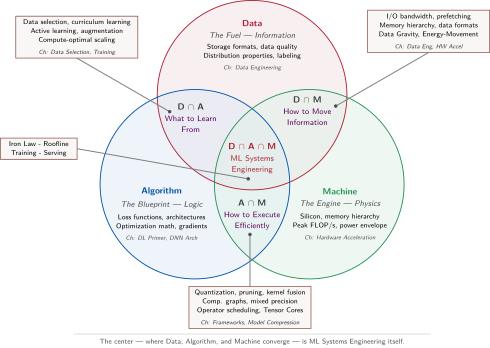

Thời khắc của các hệ thống AI
Giới thiệu
{kind=link}
Mục đích
Tại sao việc xây dựng các hệ thống machine learning lại cần những nguyên tắc kỹ thuật khác biệt đáng kể so với các hệ thống máy tính truyền thống?
Các hệ thống machine learning có một “vật lý” riêng. Dữ liệu đi qua các cấp bộ nhớ bị chi phối bởi băng thông; các phép toán số học chạy trên silicon bị chi phối bởi công suất; và các dự đoán phải đến trong khoảng độ trễ cho phép. Những ràng buộc này không phải chi tiết triển khai; chúng định hình các quyết định từ kiến trúc mô hình đến mục tiêu triển khai. Các hệ thống ML cũng khác với các hệ thống máy tính truyền thống vì hành vi được định nghĩa bởi dữ liệu, không chỉ bởi logic tường minh hoặc trạng thái phần cứng. Khi một chương trình thông thường hoạt động sai, kỹ sư thường có thể lần theo nguồn hoặc kiểm tra trạng thái phần cứng; còn khi một hệ thống ML hoạt động sai, mã có thể thực thi đúng nhưng hành vi đã học lại thất bại vì dữ liệu không đầy đủ, có độ chệch (bias), lỗi thời, hoặc không còn đại diện. Vì vậy, các kỹ sư ML phải đồng thời quản lý bất định thống kê và các ràng buộc thực thi vật lý. Một mô hình phù hợp trong trung tâm dữ liệu có thể vô dụng trên điện thoại; một pipeline huấn luyện hội tụ trong một tuần trên một bộ tăng tốc có thể mất cả tháng trên một bộ tăng tốc khác; một mô hình chính xác được huấn luyện từ dữ liệu năm ngoái có thể âm thầm suy giảm. Các thực hành truyền thống như kiểm thử, tính mô-đun, kiểm soát phiên bản và phân tích hiệu suất vẫn cần thiết, nhưng chưa đủ. Ở quy mô hệ thống, tối ưu hóa một lớp có thể đẩy điểm nghẽn sang lớp khác, nên tính đúng đắn, hiệu quả và khả năng triển khai không thể được thiết kế tách rời. Vì vậy, việc đầu tiên là chẩn đoán, bởi cải thiện thành phần dễ thấy nhất có thể không đổi được hành vi đầu-cuối khi một ràng buộc khác mới là nút thắt. Cuốn sách này xây dựng một kỷ luật dựa trên các giới hạn vật lý của tính toán. Lựa chọn thuật toán ảnh hưởng xuống toàn bộ ngăn xếp đến máy, và các ràng buộc phần cứng dội ngược trở lên thiết kế mô hình.
Learning Objectives
- Giải thích vì sao hành vi do dữ liệu định nghĩa và các ràng buộc vật lý khiến các hệ thống ML khác với phần mềm truyền thống
- Áp dụng lăng kính dữ liệu–thuật toán–máy để chẩn đoán các điểm nghẽn ở luân chuyển dữ liệu, tính toán số học và giới hạn của máy.
- Phân tích sự chuyển dịch của AI từ các quy tắc ký hiệu sang deep learning qua ‘bài học cay đắng’.
- Tính các thành phần hiệu suất theo ‘quy luật sắt’ để đánh giá thông lượng, độ trễ và lợi tức trên tài nguyên tính toán.
- Tổng hợp các góc nhìn về vòng đời, triển khai, suy giảm và năm trụ cột để đưa ra đánh giá kỹ thuật về hệ thống ML.
Trí tuệ nhân tạo không còn chỉ giới hạn trong các bản trình diễn nghiên cứu. Khi bạn hỏi một điện thoại thông minh, chỉ trong vài giây, các thành phần đã được huấn luyện sẽ chuyển đổi giọng nói thành văn bản, diễn giải ý định, truy xuất thông tin và tạo phản hồi. Công cụ tìm kiếm xếp hạng kết quả, hệ thống khuyến nghị quyết định nội dung người dùng thấy, bên cho vay dùng mô hình để đánh giá rủi ro, và hệ thống hỗ trợ người lái phát hiện nguy hiểm. Trong mỗi trường hợp, một dự đoán tham gia vào một quyết định lớn hơn, có thể ảnh hưởng đến sự chú ý, tiền bạc, quyền truy cập hoặc an toàn. Vì vậy, thứ trông như một hành động thông minh thực ra là một hệ thống end-to-end đang vận hành trong thế giới thực.
Phong trào AI hiện đại trở nên khả thi khi ba lực cùng hội tụ. Các dịch vụ số tạo ra nhiều ví dụ hơn mức kỹ sư có thể mã hóa thành quy tắc. Thuật toán học có thể trích xuất hành vi hữu ích từ những ví dụ đó. Máy tính song song khiến lượng tính toán cần thiết trở nên khả thi. Nhưng thay đổi hệ trọng nhất là về mặt khái niệm: dữ liệu không còn chỉ là đầu vào của phần mềm mà trở thành một phần của cơ chế xác định hành vi của nó. Thay vì viết từng quy tắc quyết định, kỹ sư thiết kế một quy trình huấn luyện, qua đó các ví dụ định hình các quy tắc mà hệ thống sẽ áp dụng.
Sự hội tụ này tạo ra một nhiệm vụ kép. Mỗi hệ thống ML phải chứng minh hành vi đã học là đáng tin cậy, và máy có thể tạo ra hành vi đó trong giới hạn về thời gian, bộ nhớ, năng lượng và chi phí cho phép. Một mô hình chính xác mà quá chậm thì cũng không dùng được; còn một mô hình chạy nhanh nhưng được huấn luyện trên dữ liệu không đại diện thì sẽ sai ở tốc độ máy. Sự khác biệt này hiện rõ nhất ở ranh giới lỗi. Lỗi mã có thể gây sập ồn ào, trong khi lỗi dữ liệu có thể khiến mọi lệnh vẫn chạy đúng mà chất lượng dự đoán âm thầm suy giảm. Ở quy mô lớn, cả hai nghĩa vụ này trải suốt toàn bộ hệ thống (stack). Các dịch vụ đàm thoại phải điều phối các nhóm GPU1 đồng thời quản lý bộ nhớ, mạng và nhiệt. Các hệ thống hỗ trợ người lái phải hợp nhất các luồng cảm biến trong vài mili giây. Google xử lý 8.5B lượt tìm kiếm mỗi ngày theo các mục tiêu độ trễ nghiêm ngặt. Những hệ thống này chỉ thành công khi hành vi đã học và việc thực thi vật lý được thiết kế cùng nhau. Phần mở đầu của câu chuyện đó là chuyển từ logic định nghĩa bằng mã sang hành vi định nghĩa bằng dữ liệu.
1 GPU (graphics processing unit): Ban đầu, GPU được thiết kế để kết xuất đồ họa trò chơi điện tử – một khối lượng công việc (workload) đòi hỏi hàng nghìn phép tính pixel đơn giản, thực hiện song song. Sự ăn khớp giữa phần cứng và thuật toán này đã mang tính quyết định đối với các mạng nơ-ron, nơi cấu trúc số học song song khổng lồ của GPU ánh xạ trực tiếp vào phép nhân ma trận, biến GPU thành yếu tố vật lý chủ chốt cho quy mô huấn luyện hiện đại.
Chuyển dịch sang mô hình lấy dữ liệu làm trung tâm
Sự chuyển dịch này làm thay đổi cách chúng ta xây dựng phần mềm. Thay vì viết trực tiếp hành vi, kỹ sư thiết kế một quy trình để mô hình học hành vi từ dữ liệu. Khi một chương trình truyền thống gặp lỗi, kỹ sư thường có thể lần theo một nhánh, kiểm tra một khung ngăn xếp và vá đường đi của mã. Còn khi một hệ thống ML bị giảm độ chính xác dù mã không đổi, nguyên nhân có thể là phân phối dữ liệu đã dịch chuyển, quy trình gán nhãn thay đổi, hoặc mô hình không còn phản ánh đúng hành vi ngoài thực tế. Andrej Karpathy2 mô tả sự thay đổi này là chuyển từ phần mềm 1.0 sang phần mềm 2.0 (Karpathy 2017). Như table 1 cho thấy, Phần mềm 1.0 mã hóa logic vận hành bằng các chỉ thị, còn Phần mềm 2.0 học logic đó từ các ví dụ. Vì thế, lỗi của Phần mềm 2.0 có thể âm thầm cho tới khi quá trình đánh giá hoặc giám sát cho thấy hành vi đã đổi.
2 Andrej Karpathy: Một thành viên sáng lập của OpenAI và cựu Giám đốc AI tại Tesla, người tiên phong ứng dụng deep learning vào các đội xe tự hành. Luận điểm “Phần mềm 2.0” (2017) của ông đúc kết nhận định rằng các trọng số của mạng nơ-ron chính là “mã nguồn” mới, đặt ra một thực tế kỹ thuật: thay vì gỡ lỗi logic tường minh, kỹ sư phải quản lý và lập phiên bản dữ liệu—thứ định nghĩa hành vi chương trình—vì một mô hình với hàng triệu tham số không thể được vá hay phân tích trực tiếp như mã nguồn truyền thống.
Phần mềm 2.0 không loại bỏ code. Kỹ sư vẫn phải xây dựng các pipeline dữ liệu, vòng lặp huấn luyện, công cụ đánh giá và hạ tầng phục vụ (serving). Điều thay đổi là nơi hành vi ứng dụng “sống”. Một phần hành vi nằm trong các trọng số được học từ dữ liệu, nên chỉ code review thôi thì không thể giải thích hệ thống sẽ làm gì.
| Đặc trưng | Phần mềm 1.0 (Truyền thống) | Phần mềm 2.0 (Machine Learning) |
|---|---|---|
| Mã nguồn | C++, Python, Java | Dữ liệu huấn luyện + Nhãn |
| Trình biên dịch | GCC, LLVM | Vòng lặp huấn luyện (stochastic gradient descent) |
| Logic | Rõ ràng (Viết mã thủ công) | Ngầm định (Được học) |
| Chế độ lỗi | Rõ ràng (Sập, Ngoại lệ) | Âm thầm (Suy giảm chỉ số) |
| Gỡ lỗi | Theo dõi đường dẫn thực thi | Kiểm tra phân phối dữ liệu |
Quy trình làm việc lấy dữ liệu làm trung tâm đã thay đổi những gì kỹ sư cần xây dựng và duy trì. Một nghiên cứu về các hệ thống sản xuất tại Google của Sculley và cộng sự (Sculley et al. 2015) cho thấy mã mô hình chỉ chiếm một phần nhỏ trong tổng thể công việc kỹ thuật. Phần hệ thống xung quanh—bao gồm thu thập dữ liệu, xác minh, trích xuất đặc trưng, quản lý tài nguyên, phục vụ (serving) và giám sát—lại lớn hơn và bền bỉ hơn.
{kind=link}
Sự mất cân bằng này tạo ra nợ kỹ thuật ẩn. Mỗi thành phần trong hệ thống xung quanh đều chứa các giả định về cách lấy mẫu một ví dụ, ý nghĩa của một nhãn, thời điểm tính toán một đặc trưng, phiên bản nào đến được phục vụ (serving), và cách phát hiện suy giảm. Không giả định nào trong số này xuất hiện trong phép nhân ma trận tạo ra dự đoán, nhưng bất kỳ giả định nào cũng có thể làm thay đổi kết quả. Chỉ cải thiện mô hình thôi sẽ không thể khắc phục một proxy đã lỗi thời, một pipeline đặc trưng bị hỏng, hay một tín hiệu phản hồi bị thiếu.
Vì vậy, dữ liệu thực tế không phải là một đầu vào thụ động. Nó là phép đo thế giới, được thu thập qua một sản phẩm cụ thể và được biến đổi bởi một pipeline luôn thay đổi. Nếu phép đo đó không còn đại diện cho mục tiêu dự định, mô hình có thể vẫn “khỏe” về mặt số liệu trong khi hệ thống trở nên sai. Google Flu Trends là một ví dụ điển hình: hệ thống có một luồng dữ liệu tìm kiếm khổng lồ và kịp thời, nhưng ý nghĩa của dữ liệu đó đã thay đổi trong khi mô hình vẫn giữ nguyên.
War Story 1.1: Khi nhật ký tìm kiếm nhầm sự chú ý thành bệnh tật (2014)
Dạng lỗi: Proxy không ổn định. Tin tức đã làm thay đổi những gì mọi người tìm kiếm, và tính năng tự động hoàn thành làm thay đổi cách họ diễn đạt truy vấn. Lượng truy vấn bắt đầu phản ánh cả sự chú ý của công chúng và hành vi với sản phẩm, bên cạnh tình hình bệnh tật. Trong mùa 2012–2013, GFT ước tính tỷ lệ lượt khám bác sĩ vì triệu chứng giống cúm cao gấp đôi so với số liệu CDC báo cáo, và đã đánh giá quá cao trong 100/108 tuần.
Bài học về hệ thống: Giải pháp không chỉ là dùng một tập dữ liệu tìm kiếm lớn hơn hay một mô hình tinh chỉnh tốt hơn. Các nhà nghiên cứu đã kết hợp tín hiệu tìm kiếm với dữ liệu lâm sàng từ hệ thống giám sát của CDC và hiệu chỉnh lại mối quan hệ này theo thời gian. Lượng dữ liệu không phải là ground truth: một proxy hành vi cần có cơ chế phản hồi (feedback loop) tới một phép đo đáng tin cậy, và liên tục có bằng chứng cho thấy proxy đó vẫn đại diện đúng cho đại lượng mà hệ thống muốn ước tính.
3 Trọng số mô hình: Các tham số số học mà mạng nơ-ron học được. Một mô hình ở quy mô GPT-3 (Generative Pre-trained Transformer 3) lưu trữ 175B giá trị như vậy, tiêu tốn 350 GB dung lượng ở độ chính xác FP16, tức định dạng số thực 16-bit dùng hai byte cho mỗi giá trị (Brown et al. 2020). Số lượng tham số quyết định dung lượng trọng số và ảnh hưởng mạnh đến lưu lượng bộ nhớ khi phục vụ (serving) cũng như chi phí (xem Tính toán nơ-ron).
4 Stochastic gradient descent (SGD): Thuật toán này học các tham số mô hình bằng cách xử lý các nhóm ví dụ nhỏ được lấy mẫu ngẫu nhiên (“batches”), thay vì xử lý toàn bộ tập dữ liệu cùng lúc. Cách này đánh đổi nhiễu thống kê để có tốc độ tính toán nhanh hơn. Kích thước batch cũng ảnh hưởng đến máy: một batch quá nhỏ có thể không khai thác hết các bộ xử lý song song của bộ tăng tốc, làm lãng phí nhiều khả năng tính toán tiềm năng của nó.
Google Flu Trends thất bại mà không hề có lỗi phần mềm theo nghĩa thông thường. Mã nguồn không đổi, nhưng cách vận hành thực tế của chương trình đã đổi vì phân bố dữ liệu đầu vào và mối quan hệ giữa proxy và mục tiêu đã thay đổi. Theo nguyên tắc dữ liệu như mã, dữ liệu huấn luyện không chỉ đi vào một chương trình cố định; nó còn góp phần xác định logic vận hành mà mô hình thực thi. Kỹ sư vẫn viết quy trình tối ưu hóa, nhưng các ví dụ huấn luyện định hình các trọng số của mô hình3 thông qua stochastic gradient descent4 và các phương pháp liên quan. Vì vậy, thay đổi tập dữ liệu có thể làm thay đổi hành vi hệ thống chắc chắn như khi đổi mã nguồn.
Từ góc độ phát triển ML, đây là sự chuyển dịch từ AI lấy mô hình làm trung tâm sang AI lấy dữ liệu làm trung tâm (Ng 2021). Với cách tiếp cận lấy mô hình làm trung tâm, các nhóm giữ cố định dữ liệu và tập trung cải thiện mã của mô hình. Ngược lại, trong cách tiếp cận lấy dữ liệu làm trung tâm, họ giữ mã tương đối cố định và cải thiện dữ liệu một cách có hệ thống, coi việc tuyển chọn dữ liệu là một phần chính yếu trong việc lập trình hành vi của mô hình. Sự thay đổi này cũng làm khác đi những gì kiểm thử có thể xác lập, vì không có tập dữ liệu hữu hạn nào có thể đại diện cho mọi đầu vào mà một hệ thống đã học có thể gặp.
5 AlexNet: Alex Krizhevsky, Ilya Sutskever và Geoffrey Hinton đã huấn luyện mạng nơ-ron tích chập này trên hai GPU. Tại ILSVRC 2012, tỉ lệ lỗi top-5 của nó là 15.3 phần trăm, tức là lớp đúng không nằm trong năm dự đoán có điểm số cao nhất. Con số này vượt xa hệ thống về nhì với 26.2 phần trăm (Krizhevsky et al. 2012). Section 1.2.3 sẽ quay lại bàn về kiến trúc và đồng thiết kế hệ thống của nó.
Giới hạn này hiện rõ khi ta hỏi một tập kiểm thử có thể bao phủ những gì. Logic của Phần mềm 1.0 thường có thể được liệt kê hoặc chia thành các đường dẫn và trường hợp biên. Ngược lại, một hệ thống đã học vận hành trên một không gian đầu vào nhiều chiều, về mặt kỹ thuật là hữu hạn nhưng trên thực tế không thể liệt kê hết. Thử thách ImageNet năm 2012 làm vấn đề này trở nên cụ thể. Chiến thắng quyết định của AlexNet5 đã khởi động kỷ nguyên deep learning, nhưng benchmark này chỉ đánh giá được một phần rất nhỏ các đầu vào mà mô hình có thể gặp. Mỗi đầu vào là một ảnh RGB \(224{\times}224\) với \(256^{150{,}528}\) cấu hình pixel có thể có, một con số có 362,508 chữ số. Tập xác thực của Thử thách Nhận dạng Hình ảnh Quy mô Lớn ImageNet (ILSVRC) chỉ chứa 50,000 ảnh (Krizhevsky et al. 2012; Russakovsky et al. 2015). Gọi Tổng Không gian Đầu vào là số lượng đầu vào có thể có và Độ bao phủ Tập Kiểm thử là số lượng mà một bộ kiểm thử thực sự đánh giá. Sự chênh lệch giữa hai giá trị này tạo ra khoảng cách xác minh (equation 1):
\[ \text{Verification Gap} = \text{Total Input Space} - \text{Test Set Coverage} \approx \text{Total Input Space} \tag{1}\]
Khoảng cách này không khiến việc kiểm thử trở nên vô ích; nó thay đổi những gì kiểm thử có thể xác lập. Đánh giá trước khi triển khai cung cấp bằng chứng thống kê dựa trên các đầu vào được lấy mẫu, trong khi giám sát trong môi trường sản xuất kiểm tra xem quần thể đầu vào đang vận hành và các kết quả quan sát được có còn hậu thuẫn cho bằng chứng đó hay không. Độ tin cậy thống kê thay thế mọi kỳ vọng về một bằng chứng bao quát tuyệt đối.

Độ bao phủ kiểm thử chỉ là một phần không đáng kể của không gian đầu vào.
Hệ quả kỹ thuật của vấn đề này vượt xa việc kiểm thử. Gỡ lỗi một hệ thống ML đòi hỏi phải gỡ lỗi cả dữ liệu, chứ không chỉ các script Python. Kiểm soát phiên bản phải theo dõi các tập dữ liệu, chứ không chỉ các commit git. Đánh giá phải xem xét các phân phối và kết quả, chứ không chỉ các đường dẫn mã. Nhờ những thực hành này, hành vi đã học trở nên có thể truy vết, nhưng chúng không thể biến bằng chứng thống kê thành một bằng chứng bao quát tuyệt đối.
Checkpoint 1.1: Sự thay đổi mô hình
Trước khi tìm hiểu lịch sử AI, hãy kiểm tra xem bạn đã hiểu rõ về sự thay đổi mô hình trong cách chúng ta xây dựng phần mềm hay chưa:
Khoảng trống xác minh cho thấy một sự thay đổi sâu sắc hơn trong những gì kỹ sư có thể khẳng định. Các khẳng định truyền thống thường mô tả một lần chạy cụ thể, nơi một đầu vào và trạng thái nhất định dẫn chương trình đi theo một nhánh xác định. Còn các khẳng định về hiệu suất của ML mô tả hành vi trên một quần thể. Một mô hình cố định có thể trả về cùng một đầu ra cho cùng một đầu vào, trong khi độ chính xác đo được lại thay đổi khi quần thể thay đổi. Dữ liệu cung cấp các mẫu để hệ thống học, nhưng nhiễu, trôi (drift) và thiếu sót trong dữ liệu cũng tạo ra sự bất định. Vì vậy, tính vững không thể đồng nghĩa với việc chống lại mọi thay đổi. Điều cần thiết là khiến thay đổi có thể quan sát được và thích nghi khi bằng chứng không còn ủng hộ các giả định của hệ thống, một dạng kỹ thuật xác suất.
Học hành vi từ dữ liệu giờ đây có vẻ tất yếu, nhưng trước kia thì không. Các hệ thống AI đời đầu cố gắng lập trình trực tiếp trí thông minh. Nhìn lại những nỗ lực đó cho thấy vì sao nút thắt cổ chai đã chuyển từ logic, sang tri thức, sang các đặc trưng, và cuối cùng là sang hạ tầng — và vì sao kỹ thuật hệ thống trở thành trung tâm của tiến bộ.
Self-Check: Question
In Andrej Karpathy’s Software 1.0 vs. Software 2.0 framing, how do the roles of source code, the compiler, and debugging map to machine learning workflows?
- Training datasets and labels act as source code, the optimization loop (stochastic gradient descent) acts as the compiler, and debugging focuses on inspecting data distributions rather than execution traces.
- Python scripts act as source code, the deep learning framework acts as the compiler, and debugging focuses on stepping through tensor operations in an interactive debugger.
- Neural network weights act as source code, GPU hardware acts as the compiler, and debugging focuses on profiling memory bandwidth utilization.
- Pretrained model weights act as source code, inference serving runtimes act as the compiler, and debugging focuses on network packet inspection.
A computer vision test suite evaluates a \(224 \times 224\) RGB image classifier on 50,000 validation images. Why does passing 100% of these test cases still leave a substantial ‘verification gap’ in production?
- Validation sets evaluate floating-point weights, whereas production inference engines always run in integer precision.
- The total input space of possible pixel configurations (\(256^{150{,}528}\), spanning over 300,000 decimal digits) vastly exceeds the sample coverage of any finite test set, making exhaustive testing mathematically impossible.
- Convolutional neural networks cannot generalize beyond the exact batch size used during validation testing.
- Test suites only evaluate forward inference passes, whereas production systems must continuously execute backward gradient updates.
How did Google Flu Trends fail despite having access to hundreds of billions of real-time search queries, and what systems engineering lesson does this failure provide regarding behavioral proxies?
The development paradigm where engineering teams hold model architecture code relatively fixed and systematically improve dataset quality, labels, and coverage to program model behavior is known as ____ AI.
Sự tiến hóa của các nút thắt cổ chai trong AI
Quá trình phát triển của AI cho thấy một chuỗi các nút thắt cổ chai, mỗi nút thắt đều được vượt qua nhờ đổi mới về hệ thống, qua đó mở rộng những gì có thể tính toán. Một cột mốc nền tảng là bài báo “Computing Machinery and Intelligence” của Turing6 (Turing 1950), đặt câu hỏi liệu máy móc có thể suy nghĩ hay không. Các hệ thống ban đầu đã thử những hướng tiếp cận đối lập: Perceptron (1958) (Rosenblatt 1958) học từ ví dụ, trong khi ELIZA7 (Weizenbaum 1966) dựa trên các luật khớp mẫu viết tay. Cả hai đều hẹp, nhưng vì những lý do khác nhau. Các giai đoạn sau vấp phải nút thắt cổ chai ở khâu thu thập tri thức vì nhập tri thức thủ công không thể mở rộng. Hệ thống hiện đại lại chịu một ràng buộc khác: thông lượng tính toán.
6 Alan Turing: “Trò chơi mô phỏng” năm 1950 của ông đã định nghĩa lại trí thông minh như một bài toán đo lường đầu ra: đánh giá một hệ thống qua những gì nó làm, chứ không phải những gì nó là. Quan điểm đặt kỹ thuật lên hàng đầu này vẫn hiện hữu trong mọi số liệu của hệ thống machine learning ngày nay: độ chính xác, độ trễ, thông lượng và FLOP/s trên mỗi watt đều là các phép đo đầu ra. Chính vì thế, quy luật sắt (section 1.6) phân rã hiệu suất thành các đại lượng có thể quan sát và đo lường, thay vì dựa vào các thuộc tính kiến trúc bên trong.
7 ELIZA: Một chương trình ngôn ngữ tự nhiên năm 1966, dùng các quy tắc khớp mẫu thay vì các tham số được học. Các tập lệnh của ELIZA có thể lưu và truy các đầu vào đã chọn, nhưng bộ nhớ viết tay hạn chế này không tạo ra được trạng thái hội thoại đã học. Mỗi biến thể của đầu vào lại cần thêm một quy tắc mới, khiến công việc bảo trì phình to nhanh hơn năng lực của hệ thống và báo trước nút thắt cổ chai về tri thức đã kìm hãm các hệ thống chuyên gia sau này.
8 Mùa đông AI như những thất bại của hệ thống: Mùa đông AI đầu tiên (1974–1980) diễn ra giữa lúc cắt giảm tài trợ; Báo cáo Lighthill năm 1973 chỉ trích khoảng cách giữa lời hứa của AI và kết quả thực tế (Lighthill 1973). Mùa đông thứ hai (1987–1993) chứng kiến sự sụp đổ của thị trường và nguồn tài trợ quanh các hệ thống chuyên gia và máy Lisp chuyên dụng, do các máy trạm đa năng khiến mô hình kinh tế của chúng kém cạnh tranh (Hendler 2008). Từ góc nhìn hệ thống của cuốn sách này, cả hai giai đoạn đều cho thấy tham vọng về thuật toán đã vượt quá hạ tầng, hậu thuẫn thị trường và độ chín kỹ thuật sẵn có, chứ không chỉ đơn thuần là thiếu các thuật toán thông minh.
Dòng thời gian trong figure 1 cho thấy tần suất trí tuệ nhân tạo được nhắc đến trong các sách đã xuất bản, như một chỉ báo cho mức độ quan tâm chứ không phải thước đo trực tiếp về sản lượng nghiên cứu. Biểu đồ này hé lộ một mô thức lặp lại: giai đoạn lạc quan mạnh mẽ, rồi đến “mùa đông AI”8 khi nguồn tài trợ sụp đổ, thường sau khi các giới hạn của hệ thống phơi bày khoảng cách giữa tham vọng và khả năng sẵn có. Mỗi đợt hồi sinh đều kết hợp tiến bộ thuật toán với dữ liệu mới và hạ tầng kỹ thuật. Mỗi lần như vậy, một nút thắt được gỡ, và nút thắt kế tiếp lại lộ ra.
{kind=link}
Thời kỳ tiền học: Nút thắt cổ chai về logic và tri thức
Trước khi machine learning hình thành như một lĩnh vực độc lập, các kỹ sư đã cố gắng xây dựng hệ thống thông minh qua hai mô hình nối tiếp, và mỗi mô hình đều chạm phải một rào cản mở rộng quy mô mang tính nền tảng. AI biểu tượng mã hóa trí thông minh bằng các quy tắc logic và vấp phải nút thắt cổ chai về logic khi các quy tắc đó không thể bao quát được sự mơ hồ của thế giới thực. Các hệ thống chuyên gia mã hóa trí thông minh dưới dạng tri thức miền và gặp nút thắt cổ chai về tri thức khi việc thu thập và duy trì tri thức trở nên đắt đỏ hơn giá trị hệ thống mang lại. Cả hai kỷ nguyên này cho thấy một quy luật xuyên suốt làm nền cho mọi điều về sau: các biểu diễn được xây dựng thủ công không thể mở rộng.
Kỷ nguyên AI biểu tượng và nút thắt cổ chai về logic
Kỷ nguyên đầu tiên của kỹ thuật AI (những năm 1950–1970) tìm cách quy giản trí thông minh thành thao tác với AI biểu tượng, một cách tiếp cận sau đó được kết tinh trong giả thuyết hệ thống ký hiệu vật lý (Newell and Simon 1976). Các nhà nghiên cứu tại Hội nghị Dartmouth năm 19569 (McCarthy et al. 1955) giả định rằng nhiều khía cạnh của trí thông minh có thể được mô tả chính xác và mô phỏng bằng máy. Ngay khi đó, Arthur Samuel tại IBM đã chỉ ra một hướng khác: năm 1959, một chương trình cờ đam do ông phát triển tự cải thiện nhờ tự chơi. Công trình này đã đặt ra thuật ngữ “machine learning” (Samuel 1959), dù khuynh hướng chủ đạo thời bấy giờ vẫn là AI biểu tượng. Hệ thống STUDENT10 của Daniel Bobrow là một ví dụ tiêu biểu cho cách tiếp cận này (Bobrow 1964).
9 Hội nghị Dartmouth (1956): Hội thảo xoay quanh thuật ngữ “trí tuệ nhân tạo”, vốn đã xuất hiện trong đề xuất năm 1955 (McCarthy et al. 1955). Những người tham dự đặt trí tuệ trong các khía cạnh như ngôn ngữ, trừu tượng hóa, giải quyết vấn đề và tự cải thiện, nhưng hầu như không chú ý đến các ràng buộc vật lý về lưu trữ và năng lực tính toán — những yếu tố sau này trở thành trọng tâm. Chính giả định rằng “một thuật toán tốt hơn luôn có thể vượt qua mọi giới hạn phần cứng” là điều cuốn sách này muốn chỉnh lại: mỗi chương tiếp theo đều lập luận rằng các ràng buộc của hệ thống là những yếu tố thiết kế quan trọng hàng đầu, chứ không phải điều nghĩ đến sau cùng.
10 STUDENT: Chương trình MIT năm 1964 của Daniel Bobrow phân tích các bài toán đố tiếng Anh ở dạng hạn chế, biểu diễn các mối quan hệ này dưới dạng ký hiệu, rồi chuyển các phương trình thu được cho một bộ giải đại số. Đây là một trong những lần đầu tiên tách biệt việc diễn giải ngôn ngữ khỏi suy luận hình thức: một khi biểu diễn đã chính xác, việc giải trở nên đơn giản; phạm vi xử lý phụ thuộc vào các phép biến đổi được viết thủ công (Bobrow 1964).
11 Nghịch lý Moravec: Nhà robot học Hans Moravec của Đại học Carnegie Mellon nhận thấy rằng các tác vụ suy luận cấp cao (như chơi cờ vua) chỉ cần ít tài nguyên tính toán, trong khi các tác vụ nhận thức cấp thấp (như đi bộ) lại đòi hỏi mức độ song song rất lớn (Moravec 1988). Nghịch lý này giải thích một sự thật cốt lõi trong kỹ thuật hệ thống ML: những tác vụ mà con người thấy “dễ” (như thị giác, lời nói, điều khiển vận động) lại chính là những tác vụ đòi hỏi FLOP/s, băng thông bộ nhớ và phần cứng chuyên dụng cao nhất, từ đó thúc đẩy cuộc cách mạng bộ tăng tốc, định hình nên hạ tầng ML hiện đại.
Các hệ thống này có thể tạo ra những màn trình diễn ấn tượng, nhưng lại mong manh khi vận hành. Thành công của chúng phụ thuộc vào các quy tắc viết tay, dùng để ánh xạ từng dạng đầu vào chấp nhận được sang một biểu diễn ký hiệu. STUDENT có thể giải một bài toán đại số khi nó dịch được tiếng Anh thành các phương trình, nhưng chỉ cần một thay đổi nhỏ trong cách diễn đạt cũng có thể làm việc dịch đó thất bại. Khó khăn không chỉ nằm ở ngôn ngữ. Nghiên cứu của Hans Moravec11 về điều hướng tự hành tại Stanford cho thấy những nhiệm vụ con người thấy đơn giản (như nhìn, đi bộ, cầm nắm) lại khó thiết kế hơn nhiều so với những nhiệm vụ con người thấy khó, như chơi cờ vua hay giải đại số.
Example 1.1: STUDENT (1964)
language "Two numbers sum to 30; one is twice the other."
parse x + y = 30, x = 2y
solve x = 20, y = 10Khi biểu diễn đã đúng, việc giải trở nên thường lệ. Nút thắt nằm ở khâu dịch: mỗi cách diễn đạt lạ lại cần thêm một quy tắc viết tay, nên phạm vi bao phủ ngôn ngữ chỉ lớn lên theo tốc độ mở rộng của cơ sở quy tắc.
Kỷ nguyên hệ thống chuyên gia và nút thắt tri thức
Trong kỷ nguyên hệ thống chuyên gia, các kỹ sư thu hẹp bài toán. Thay vì xây dựng hệ thống suy luận tổng quát, họ mã hóa kiến thức chuyên sâu của một lĩnh vực cụ thể. MYCIN, được thiết kế để chẩn đoán nhiễm trùng máu, cho phép biểu diễn kiến thức y tế dưới dạng các quy tắc sản xuất (Shortliffe et al. 1975).
Example 1.2: MYCIN (1976)
facts stain=gram-positive, shape=coccus, arrangement=clumps
rule IF facts match THEN organism=staphylococcus (certainty=0.7)
cycle match facts -> fire rule -> update certainty -> repeatMột công cụ suy luận lặp lại chu trình này qua hàng trăm quy tắc và lan truyền các hệ số tin cậy để đi tới một chẩn đoán. Bác sĩ có thể kiểm tra từng bước, nhưng phạm vi bao phủ vẫn chỉ mở rộng từng quy tắc một: mỗi ngoại lệ đều phải được khơi gợi, mã hóa và điều chỉnh để khớp với cơ sở quy tắc hiện có.
MYCIN hoạt động tốt trong các thử nghiệm cụ thể, nhưng chính thành công đó lại phơi bày nút thắt cổ chai thu nhận tri thức.12 Vấn đề không còn là liệu một quy tắc có thể diễn đạt được chuyên môn hay không, mà là làm thế nào để những phán đoán ngầm được đưa vào hệ thống và giữ được tính nhất quán khi cơ sở quy tắc phình to.
12 Nút thắt cổ chai thu nhận tri thức: Công trình về kỹ thuật tri thức của Feigenbaum đã đặt AI ứng dụng trong bối cảnh khó khăn thực tế: trích xuất, biểu diễn và duy trì kiến thức chuyên gia (Feigenbaum 1984). Xét về mặt hệ thống, nút thắt này là vấn đề về thông lượng: việc khơi gợi kiến thức và bảo trì quy tắc bị giới hạn bởi băng thông nối tiếp của các chuyên gia con người. Không giống các nút thắt cổ chai tính toán có thể nhường đường cho phần cứng nhanh hơn, đây là ràng buộc “không thể mở rộng” ban đầu trong AI và là động lực trực tiếp cho mô hình hướng dữ liệu ra đời sau đó.
Máy nhanh hơn có thể đánh giá nhiều quy tắc hơn, nhưng không thể trích xuất phán đoán của con người nhanh hơn. Để mở rộng quy mô, AI cần một cách suy ra các ranh giới quyết định hữu ích từ ví dụ, thay vì yêu cầu kỹ sư phải liệt kê sẵn các ranh giới đó.
Sự thay đổi đó không loại bỏ vai trò thiết kế của con người; nó chỉ thay đổi thứ các kỹ sư thiết kế. Thay vì mã hóa từng quyết định, họ chọn các ví dụ, biểu diễn, mục tiêu và thước đo để từ đó có thể học ra quyết định. Vì vậy, kỷ nguyên tiếp theo đã thay thế nút thắt thu nhận tri thức bằng một câu hỏi mới: người học nên được thấy những bằng chứng nào?
Kỷ nguyên học thống kê và nút thắt cổ chai ở khâu kỹ thuật đặc trưng
Thập niên 1990 đánh dấu sự chuyển dịch sang học thống kê và các hệ thống xác suất. Thay vì logic được mã hóa cứng, các hệ thống ước tính xác suất từ dữ liệu (\(p(y \mid x)\)). Sự chuyển đổi này được thúc đẩy bởi dữ liệu số sẵn có và “hiệu quả phi lý”13 của các tập dữ liệu lớn.
13 Hiệu quả phi lý của dữ liệu: Quan sát cho thấy một mô hình thống kê đơn giản, khi được cung cấp lượng dữ liệu khổng lồ, có thể vượt trội hơn một mô hình tinh vi hơn nhưng có ít dữ liệu (Halevy et al. 2009). Halevy và cộng sự minh họa hiệu ứng này bằng các kho ngữ liệu web lớn; đó không phải là một “hệ số nhân lỗi” áp dụng cho mọi trường hợp. Lợi ích phụ thuộc vào tác vụ, mô hình, chất lượng dữ liệu và điểm xuất phát. Kết quả này đã ủng hộ sự chuyển dịch từ các hệ thống thủ công mong manh sang các mô hình xác suất, và khiến việc thu thập dữ liệu, lưu trữ, tiền xử lý, cùng huấn luyện phân tán trở thành những mối quan tâm kỹ thuật cốt lõi.
Lọc thư rác minh họa rõ sự chuyển dịch này. Thay vì duy trì các danh sách từ cấm, các bộ lọc thống kê học được xác suất một từ hàm ý thư rác dựa trên hàng triệu ví dụ.
Example 1.3: Các hệ thống phát hiện thư rác ban đầu
rules: if "free" or "winner" appears -> spam
learn: labeled email -> word likelihoods -> P(spam | email)Việc bảo trì không biến mất. Nó chuyển từ việc chỉnh sửa danh sách từ khóa sang tuyển chọn các ví dụ đại diện và kiểm tra xem các xác suất đã học có còn bám sát email hiện tại hay không.
Học ranh giới quyết định từ dữ liệu loại bỏ một nút thắt nhưng lại bộc lộ nút thắt khác. Các thuật toán thống kê như Máy vector hỗ trợ (SVM) chỉ có thể học vững sau khi con người chuyển đổi đầu vào thô thành các đặc trưng có cấu trúc. Thuật toán học điều chỉnh ranh giới; kỹ sư quyết định nó được nhìn thấy bằng chứng nào. Mở rộng sang một bài toán mới thường đồng nghĩa với việc phải dựng lại toàn bộ ngăn xếp tiền xử lý, biến điều tưởng như là hạn chế của thuật toán thành nút thắt trong thiết kế đặc trưng. Pipeline truyền thống khiến phần công sức thủ công này lộ rõ, vì có nhiều bước làm tay trước khi quá trình học thực sự bắt đầu.
Cách tiếp cận lai này kết hợp các đặc trưng do con người thiết kế với học thống kê. Thuật toán Viola-Jones14 (Viola and Jones 2001) là ví dụ tiêu biểu cho giai đoạn này, đạt phát hiện khuôn mặt chính diện theo thời gian thực bằng các đặc trưng hình chữ nhật đơn giản và các bộ phân loại xếp tầng. Điều đó cho thấy đặc trưng được thiết kế tốt có thể giúp xây dựng các ứng dụng thực tế, độ trễ thấp, nhưng chỉ trong những miền hẹp nơi chuyên gia có thể tự tay tạo ra các biểu diễn phù hợp.
14 Thuật toán Viola-Jones: Tốc độ thời gian thực của thuật toán này có được nhờ một chuỗi bộ phân loại sử dụng các đặc trưng hình chữ nhật đơn giản, được thiết kế thủ công để loại bỏ ngay lập tức các vùng không phải khuôn mặt. Phương pháp này được thiết kế và đánh giá cho tác vụ phát hiện khuôn mặt chính diện, minh họa bài toán đánh đổi của thời kỳ đó: thiết kế đặc trưng do chuyên gia có thể nhanh và hiệu quả, nhưng cách biểu diễn lại gắn chặt với từng tác vụ. Chỉ riêng hai lớp đầu tiên đã có thể loại bỏ hơn 80% các cửa sổ con âm tính (không chứa khuôn mặt) trong khi chỉ sử dụng mười hai trong số hơn 6.000 đặc trưng tổng cộng (Viola and Jones 2001).
Example 1.4: Pipeline thị giác máy tính truyền thống
image -> resize -> HOG/SIFT features -> SVM -> labelChỉ ranh giới quyết định cuối cùng là được học. Việc chuyển từ khuôn mặt sang người đi bộ hoặc sang một miền khác đồng nghĩa phải thiết kế lại bộ trích xuất đặc trưng và thường là cả ngăn xếp tiền xử lý.
Kỷ nguyên deep learning và nút thắt cổ chai về cơ sở hạ tầng
Deep learning đã thay đổi phần của hệ thống thực sự được học. Thay vì nhận các đặc trưng do con người thiết kế, mạng nơ-ron học các biểu diễn trực tiếp từ dữ liệu đầu vào thô như pixel và dạng sóng âm thanh. Quá trình huấn luyện giờ đây có thể định hình cả cách biểu diễn dữ liệu lẫn ranh giới quyết định, cho phép học “từ đầu đến cuối”.
Bước đột phá không chỉ riêng về thuật toán. Mạng nơ-ron tích chập (CNN) đã tồn tại từ trước đó (LeCun et al. 1998, 2015); AlexNet đã kết hợp kiến trúc và quá trình huấn luyện với đồng thiết kế hệ thống, tức là lựa chọn đồng thời mô hình, quy trình huấn luyện và cách ánh xạ lên phần cứng (Krizhevsky et al. 2012). Các phép toán ma trận song song của nó rất phù hợp với khả năng xử lý của GPU. Với 60 million tham số được phân tán trên hai GPU GTX 580, AlexNet đạt lỗi top-5 là 15.3 percent, một cải thiện tương đối 41.6 percent so với kết quả tốt nhất tiếp theo trong năm đó. Các giai đoạn xử lý trong figure 2 cho thấy mô hình học được các biểu diễn hình ảnh ngày càng phong phú hơn trước khi đưa ra một trong 1.000 lớp đầu ra.
{kind=link}
Phần cứng vẫn định hình những gì có thể học được. Với chỉ 3 GB VRAM trên mỗi GPU GTX 580, AlexNet phải chia các lớp tích chập và các lớp kết nối đầy đủ giữa hai luồng GPU. Thiết kế song song ở cấp mô hình sơ khai này đã báo trước huấn luyện đa GPU hiện đại. Deep learning giảm nhu cầu xây dựng thủ công các đặc trưng, nhưng đồng thời chuyển nút thắt chính sang hạ tầng cần thiết để lưu trữ dữ liệu, truyền tham số và điều phối tính toán.
Deep learning về cơ bản đã đổi nút thắt ở khâu thiết kế đặc trưng lấy một nút thắt tính toán mới. Các mô hình như GPT-3 (với 175 billion tham số) cho thấy rõ quy mô của thách thức này. Brown et al. (2020) báo cáo huấn luyện trên khoảng 300 billion token từ văn bản web đã lọc, sách và Wikipedia. Dựa trên xấp xỉ huấn luyện dày đặc trong sách, tỉ lệ tham số-token đó ngụ ý cần khoảng 314 zettaFLOPs tính toán (\(1\text{ zettaFLOP} = 10^{21}\text{ FLOPs}\)). Bản thân tập dữ liệu token này chiếm khoảng 420 GB. Vì bài báo gốc không nêu rõ cụm phần cứng, việc quy đổi ra số năm sử dụng bộ tăng tốc chỉ là một ước tính mang tính minh họa cho hệ thống, không phải một benchmark được ghi nhận. Thách thức kỹ thuật chính đã chuyển từ việc mô tả tai mèo sang điều phối huấn luyện phân tán ở quy mô lớn mà vẫn tránh lỗi.
Mỗi bước chuyển mình lớn trong lịch sử AI đều bắt nguồn từ những thay đổi về giới hạn vật lý, chứ không chỉ do các phát minh thuật toán. Bảng Table 2 so sánh bốn kỷ nguyên chính dựa trên các điểm mạnh suy luận cốt lõi, các nút thắt hệ thống và yêu cầu dữ liệu khi vận hành.
| Khía cạnh | AI biểu tượng | Hệ thống chuyên gia | Học thống kê | Deep Learning |
|---|---|---|---|---|
| Điểm mạnh chính | Suy luận logic | Chuyên môn miền | Tính linh hoạt | Nhận dạng mẫu |
| Nút thắt cổ chai | Tính dễ vỡ (Các quy tắc bị phá vỡ) | Nhập liệu kiến thức (Chuyên gia khan hiếm) | Kỹ thuật đặc trưng (Tiền xử lý thủ công) | Quy mô tính toán & dữ liệu (Chi phí hạ tầng) |
| Xử lý dữ liệu | Cần ít dữ liệu | Dựa trên kiến thức miền | Yêu cầu lượng dữ liệu vừa phải | Xử lý dữ liệu lớn |
Self-Check: Question
Which historical transition correctly pairs an AI era with the primary systems bottleneck that limited its scalability and forced the transition to the subsequent paradigm?
- Symbolic AI was limited by compute throughput, forcing the transition to expert systems; Deep Learning was limited by human rule maintenance, forcing the transition to statistical learning.
- Expert Systems were limited by GPU memory bandwidth, forcing the transition to statistical learning; Statistical Learning was limited by formal logic ambiguity, forcing the transition to deep learning.
- Statistical Learning was limited by a complete lack of training labels, forcing the transition to symbolic logic; Symbolic AI was limited by hardware integer arithmetic, forcing the transition to neural networks.
- Expert Systems were limited by the knowledge acquisition bottleneck (serial human expert elicitation bandwidth), forcing the transition to statistical learning; Statistical Learning was limited by the feature engineering bottleneck (manual extraction of hand-crafted representations), forcing the transition to deep learning.
Moravec’s paradox observes that tasks humans find easy (such as visual perception, walking, and grasping) require vast computational resources, while tasks humans find hard (such as playing chess or solving algebra) require comparatively little compute. What is the direct implication of this paradox for ML systems hardware?
- Symbolic reasoning algorithms require multi-GPU accelerator clusters, whereas computer vision pipelines run efficiently on single-threaded CPUs.
- High-level reasoning tasks saturate off-chip memory bandwidth, while low-level perceptual tasks are strictly compute-bound.
- Perceptual and physical-world AI tasks demand massive parallelism, high memory bandwidth, and specialized hardware accelerators to process dense, high-dimensional sensor streams in real time.
- Robotic perception models can be deployed on microcontrollers without model compression or accuracy degradation.
Place the four historical AI engineering eras in chronological order based on when their primary paradigm dominated, and identify the key bottleneck that constrained each era:
- Deep Learning Era
- Expert Systems Era
- Symbolic AI Era
- Statistical Learning Era
Why was AlexNet’s 2012 ImageNet victory considered a breakthrough in systems co-design rather than purely an algorithmic advance?
True or False: The Viola-Jones face detection algorithm achieved real-time execution on early-2000s CPUs by using an attentional cascade of hand-crafted rectangular features that quickly rejected over 80% of negative image sub-windows in the first two stages.
Bài học cay đắng
Các hệ thống chuyên gia đầu tư công sức vào việc mã hóa kiến thức của miền ứng dụng; còn các hệ thống deep learning thì dồn công sức đó vào việc hấp thụ nhiều dữ liệu và tận dụng nhiều tính toán hơn. Bài học cay đắng mô tả một quy luật lịch sử: các phương pháp tổng quát sử dụng ngày càng nhiều tính toán luôn vượt trội hơn các cách tiếp cận mã hóa chuyên môn của con người. Richard Sutton15 đã đúc kết nhận định này trong bài tiểu luận năm 2019 của ông, “Bài học cay đắng” (Sutton 2019). Sutton viết: “Bài học lớn nhất có thể rút ra từ 70 năm nghiên cứu AI là các phương pháp tổng quát biết khai thác sức mạnh tính toán cuối cùng sẽ là hiệu quả nhất, và hiệu quả hơn đáng kể.”
15 Richard Sutton: Một người tiên phong trong học tăng cường, người mà bài tiểu luận năm 2019 của ông đã đúc kết quy luật được phác họa trong section 1.2: từ AI biểu tượng, qua các hệ thống chuyên gia, đến deep learning, các phương pháp tổng quát sử dụng tính toán luôn vượt trội hơn hẳn kiến thức chuyên môn được xây dựng thủ công. Bài học này “cay đắng” vì nó ngụ ý rằng logic chuyên biệt cho từng lĩnh vực là một tài sản mất giá, trong khi lợi thế bền vững thuộc về kỹ thuật hệ thống có khả năng tận dụng sự gia tăng sức mạnh tính toán thô gấp hàng tỷ lần kể từ những năm 1970.
Bảng Table 3 đối chiếu các cột mốc benchmark tiêu biểu với các nền tảng phần cứng tương ứng. Cột cuối cùng của bảng cho thấy sự tiến bộ từ việc đánh giá quy tắc trên CPU đơn luồng đến các cụm gồm hàng nghìn bộ tăng tốc, lấy 2.5 million reference GPU-days làm ví dụ minh họa cho điểm mốc huấn luyện các mô hình tiên tiến (Patel and Wong 2023).
| Kỷ nguyên | Phương pháp tiếp cận | Tác vụ đại diện | Hiệu suất | Tài nguyên tính toán |
|---|---|---|---|---|
| Hệ thống chuyên gia (những năm 1980) | Các quy tắc được tạo thủ công | Cờ vua (hệ số Elo) | Phụ thuộc vào hệ thống | Tối thiểu (đánh giá quy tắc) |
| machine learning thống kê (những năm 1990–2000) | Kỹ thuật đặc trưng + học | Nhận dạng chữ số viết tay | khoảng 98–99% trên các benchmark thời MNIST (LeCun et al. 1998) | các pipeline đặc trưng thời CPU; tài nguyên thay đổi tùy theo triển khai |
| deep learning (2012) | mạng nơ-ron đầu cuối | Độ chính xác top-5 của ImageNet | 84.7% (AlexNet) | 6 ngày trên 2 GPUs |
| deep learning hiện đại (2020+) | Transformers quy mô lớn | Độ chính xác top-1 của ImageNet | 88.55% (ViT-H/14) (Dosovitskiy et al. 2021) | Tiền huấn luyện Bộ xử lý Tensor (TPU) quy mô lớn |
| deep learning hiện đại (2023) | Các mô hình nền tảng | benchmark MMLU | 86.4% (GPT-4) (OpenAI et al. 2023) | Ước tính ~2.5 million reference GPU-days (khoảng 25,000 GPUs tham chiếu chạy trong 90 days) (Patel and Wong 2023) |
Độ chính xác top-5 trên ImageNet và Massive Multitask Language Understanding (MMLU) (Benchmarking) đo lường những khả năng khác nhau, nhưng lại đi cùng một quỹ đạo hệ thống. Quy mô phần cứng đã mở rộng từ thực thi trên một nút CPU đơn lẻ đến các cụm công suất hàng megawatt. Điều này củng cố nhận định của Sutton rằng các phương pháp được thiết kế để tận dụng sức mạnh tính toán thuần túy luôn vượt trội hơn các biểu diễn do con người tinh chỉnh.
Nguyên tắc này tiếp tục được kiểm chứng qua các đột phá AI khác. Trong cờ vua, Deep Blue của IBM đã đánh bại nhà vô địch thế giới Garry Kasparov16 năm 1997 bằng cách kết hợp phần cứng cờ vua tùy chỉnh, tìm kiếm quy mô lớn và kiến thức đánh giá chuyên biệt cho cờ vua. Hàm đánh giá của hệ thống mã hóa các heuristic (kinh nghiệm) của con người trong cờ vua, nhưng quy mô tìm kiếm mà silicon tùy chỉnh cho phép mới là yếu tố then chốt biến kiến thức đó thành lối chơi đẳng cấp vô địch. Trong Cờ vây, AlphaGo17 của DeepMind (Silver et al. 2016) đạt hiệu năng vượt trội bằng cách kết hợp học có giám sát từ các ván đấu của chuyên gia với học tăng cường thông qua tự chơi và tìm kiếm cây được hướng dẫn bởi mạng nơ-ron, thay vì dựa vào các chiến lược Cờ vây được lập trình thủ công.
16 Deep Blue: Hệ thống cờ vua của IBM (Campbell et al. 2002) đã đánh bại Nhà vô địch Thế giới Garry Kasparov năm 1997 nhờ một kết hợp ở cấp hệ thống: tìm kiếm khoảng 200 triệu vị trí mỗi giây trên 480 bộ xử lý cờ vua tùy chỉnh, cùng với kiến thức và khả năng đánh giá chuyên biệt cho cờ vua. Deep Blue là một minh chứng công khai từ sớm cho thấy silicon chuyên dụng có thể khuếch đại tìm kiếm và khai thác kiến thức miền đã được mã hóa, báo trước chiến lược bộ tăng tốc chuyên biệt theo miền, chiến lược đang định hình phần cứng ML hiện đại.
17 AlphaGo: AlphaGo ban đầu học từ các ván đấu của chuyên gia con người, sau đó cải thiện thông qua học tăng cường từ tự chơi, thay thế các chiến lược Cờ vây viết tay bằng một pipeline dữ liệu-và-tính toán có thể khám phá không gian bài toán ở quy mô tính toán khổng lồ. Sau ba ngày huấn luyện tự chơi, AlphaGo Zero đã vượt qua AlphaGo gốc, thắng 100-0 (Silver et al. 2017).
Bài học này “cay đắng” vì trực giác của chúng ta thường đánh lừa chúng ta. Chúng ta tự nhiên cho rằng mã hóa kiến thức chuyên gia của con người là con đường dẫn tới trí tuệ nhân tạo. Nhưng hết lần này đến lần khác, khi đạt đủ quy mô, các hệ thống dùng tính toán để học từ dữ liệu lại vượt trội so với các hệ thống dựa trên tri thức do con người cung cấp. Mẫu hình này lặp lại xuyên suốt các thời kỳ: AI ký hiệu, học thống kê, và deep learning.
Các mô hình ngôn ngữ hiện đại như GPT-4 và các hệ thống tạo ảnh như DALL-E minh họa trực tiếp nguyên tắc này. Năng lực của chúng không đến từ các lý thuyết ngôn ngữ hay nghệ thuật do con người mã hóa, mà từ việc huấn luyện các mạng nơ-ron đa dụng trên lượng dữ liệu khổng lồ, sử dụng tài nguyên tính toán đáng kể. Ước tính cho các mô hình ở quy mô GPT-3 cho thấy chúng tiêu thụ khoảng 1.3 GWh năng lượng18 (Patterson et al. 2021), và việc phục vụ (serving) các mô hình này cho hàng triệu người dùng biến suy luận thành một vấn đề liên tục về công suất, làm mát, và lập kế hoạch dung lượng tại các trung tâm dữ liệu.
18 Năng lượng huấn luyện GPT-3 (Generative Pre-trained Transformer 3): Patterson et al. (2021) ước tính rằng một lần huấn luyện GPT-3 đã tiêu thụ khoảng 1,287 MWh và thải ra 552 tấn CO2 tương đương, xấp xỉ lượng điện tiêu thụ hàng năm của 120 hộ gia đình trung bình ở Mỹ, dựa trên mức cơ sở 10.7 MWh/household-year. Chi phí năng lượng không chỉ do các phép toán số học quyết định mà còn do việc di chuyển dữ liệu qua hệ thống phân cấp bộ nhớ; đưa dữ liệu qua các tầng bộ nhớ có thể tốn năng lượng gấp nhiều bậc so với các phép toán số học cục bộ (Horowitz 2014).
19 Băng thông bộ nhớ: Tốc độ mà các tham số của mô hình được chuyển từ bộ nhớ tới bộ xử lý. Năng lượng tiêu thụ ở quy mô gigawatt-giờ của quá trình huấn luyện các mô hình quy mô GPT không chỉ đến từ tính toán mà còn từ quá trình tốn kém về mặt vật lý khi truy xuất hàng tỷ trọng số qua hệ thống phân cấp bộ nhớ. Việc di chuyển dữ liệu từ bộ nhớ ngoài chip có thể tiêu tốn năng lượng cao hơn từ một đến vài bậc độ lớn so với các phép toán số học cục bộ, tùy thuộc vào độ chính xác và cấp độ bộ nhớ. Điều đó khiến băng thông, chứ không chỉ riêng tốc độ bộ xử lý, trở thành yếu tố trực tiếp dẫn đến mức tiêu thụ công suất khổng lồ của các trung tâm dữ liệu.
Điều này ngụ ý rằng để hiện thực hóa lời hứa của bài học cay đắng, chúng ta cần chuyên môn về kỹ thuật dữ liệu, tối ưu hóa phần cứng và điều phối hệ thống19 — những lĩnh vực đi xa hơn hẳn đổi mới thuật toán. Tăng tốc phần cứng sẽ lượng hóa các ràng buộc này khi đã có các nền tảng cần thiết, bao gồm cả các giới hạn về băng thông bộ nhớ định hình thiết kế hệ thống.
Thế giới đang chạy đua xây dựng các hệ thống AI, nhưng chỉ xây dựng thôi là chưa đủ. Bài học cay đắng của Sutton cho thấy vì sao. Sự tiến bộ phụ thuộc vào dữ liệu, khả năng tính toán và cơ sở hạ tầng giúp việc học ở quy mô lớn trở nên khả thi. Do đó, cuốn sách này coi hệ thống machine learning như một đối tượng kỹ thuật: một đối tượng cần được thiết kế, triển khai, đánh giá và bảo trì dưới các ràng buộc thực tế. Trách nhiệm rộng lớn hơn đó chính là kỹ thuật AI, một ngành học được định nghĩa chính thức trong section 1.8. Trước khi định nghĩa ngành học này, trước hết chúng ta phải định nghĩa đối tượng của nó, bắt đầu từ một khối lượng công việc (workload) sản xuất quen thuộc.
Self-Check: Question
Why did Richard Sutton describe the fundamental finding of 70 years of AI research as a ‘bitter’ lesson for researchers and engineers?
- Human intuition naturally seeks to build intelligence by encoding domain expertise and linguistic rules into models, yet historical progress repeatedly demonstrates that general-purpose search and learning leveraging raw computation outperform hand-crafted human knowledge.
- Hardware accelerators have reached physical thermodynamic scaling limits, preventing further increases in neural network parameter counts.
- Stochastic gradient descent algorithms produce models whose internal mathematical representations cannot be formally proven correct.
- Open-source models consistently match the performance of proprietary industrial foundation models trained at hundred-million-dollar compute budgets.
In comparing IBM’s Deep Blue (1997) and DeepMind’s AlphaGo (2016), how do their designs reflect the progression toward Sutton’s bitter lesson?
- Deep Blue relied entirely on deep reinforcement learning, whereas AlphaGo returned to hand-coded expert evaluation tables.
- Deep Blue combined custom silicon search (200 million positions/second) with hand-coded chess heuristics, whereas AlphaGo replaced hand-coded game strategy with neural networks trained via supervised learning and massive self-play tree search.
- Both systems avoided the use of custom silicon or GPUs, relying strictly on algorithmic elegance over compute scale.
- AlphaGo eliminated all tree search mechanisms in favor of pure single-step feedforward classification.
If the bitter lesson states that computation-leveraging methods dominate over time, why does realizing this advantage depend primarily on systems engineering rather than pure algorithmic theory?
True or False: According to the bitter lesson, building domain-specific linguistic or perceptual rules into deep neural network architectures provides a permanent, compounding advantage over general architectures as compute budgets expand.
Định nghĩa Hệ thống ML
Hãy quay lại bộ lọc thư rác đã được giới thiệu trong lịch sử học thống kê. Ở quy mô sản xuất, bộ phân loại tưởng chừng đơn giản này phải xử lý lưu lượng email toàn cầu lên tới hàng trăm tỷ tin nhắn gửi và nhận mỗi ngày (Statista Research Department 2024), và các nhà cung cấp lớn phải quyết định trong vài mili giây xem tin nhắn nào cần được chú ý và tin nhắn nào nên bị cách ly.
Nhiệm vụ tưởng chừng đơn giản này cho thấy điểm khác biệt giữa các hệ thống machine learning và phần mềm truyền thống. Thử thách bắt đầu từ dữ liệu. Bộ lọc được huấn luyện trên hàng triệu ví dụ có nhãn và cần liên tục thích nghi khi kẻ gửi thư rác thay đổi chiến thuật, thay vì dựa vào lập trình viên để mã hóa thủ công mọi mẫu thư rác. Sau đó, đây trở thành một bài toán thuật toán, vì mô hình phải tổng quát hóa từ các ví dụ đã học sang những tin nhắn chưa từng gặp, đồng thời cân bằng giữa độ chính xác và độ thu hồi để email hợp lệ không bị ẩn. Cuối cùng, việc này cũng là một vấn đề về hạ tầng. Các nhà cung cấp phải xử lý hàng tỷ email mỗi ngày, lưu trữ và cập nhật mô hình khi thư rác tiến hóa, và phục vụ (serving) các dự đoán với độ trễ dưới 100 ms trên các trung tâm dữ liệu mở rộng theo chiều ngang. Vì vậy, bộ phân loại chỉ là một thành phần trong một hệ thống dữ liệu, phần mềm và hạ tầng luôn thay đổi. Chính quan sát đó xác định đối tượng mà cuốn sách này nghiên cứu.
Khi một mẫu lừa đảo mới xuất hiện, lớp dữ liệu phải thu thập các tin nhắn đại diện, thuật toán phải phân biệt thư lừa đảo với thư hợp lệ, và hệ thống phải phân phối các tham số đã cập nhật trước khi chuyển phát. Bất kỳ lớp nào cũng có thể gặp lỗi trong khi các lớp khác vẫn hoạt động, nên toàn bộ chuỗi từ đo lường, học cho đến thực thi mới là đơn vị phân tích phù hợp.
Definition 1.1: Hệ thống machine learning
Hệ thống machine learning là các hệ thống phần mềm có hành vi chính được quyết định bởi các tham số học từ dữ liệu, thay vì các quy tắc được lập trình tường minh, khiến hiệu suất trở thành hàm của chất lượng dữ liệu, lựa chọn thuật toán và năng lực phần cứng đồng thời.
- Ý nghĩa: Các yêu cầu mang tính đầu-cuối. Một bộ lọc thư rác chỉ thực sự hữu ích khi dữ liệu huấn luyện của nó đại diện cho các kiểu tấn công hiện tại, mô hình của nó phân biệt được thư độc hại với thư hợp lệ, và đường phục vụ (serving) của nó phân loại từng tin nhắn trong hạn mức thời gian cho phép. Lỗi ở bất kỳ lớp nào cũng sẽ làm thay đổi kết quả hiển thị cho người dùng.
- Điểm khác biệt: Không giống như phần mềm truyền thống, độ chính xác của một hệ thống machine learning có thể thay đổi khi thế giới thay đổi, ngay cả khi mã và trọng số của nó không đổi. Phân phối đầu vào thực tế có thể dịch chuyển so với những gì mô hình đã học, âm thầm làm thay đổi hiệu suất mà không hề có lỗi hay ngoại lệ nào.
- Lỗi thường gặp: Mô hình không phải là toàn bộ hệ thống. Các pipeline dữ liệu, các phép biến đổi đặc trưng, hạ tầng phục vụ (serving), cơ chế giám sát và các vòng lặp phản hồi bao quanh bộ tham số đã học và thường chiếm phần lớn công sức kỹ thuật (Sculley et al. 2015).
Định nghĩa này làm rõ ba trục chẩn đoán: dữ liệu mô tả nhiệm vụ, thuật toán biến các ví dụ đó thành hành vi, và máy thực thi hành vi đó trong giới hạn ngân sách vận hành. Phân loại D·A·M đưa các trục đó về một dạng có thể tái sử dụng.
Cùng một triệu chứng người dùng thấy có thể bắt nguồn từ bất kỳ trục nào trong ba trục này. Ví dụ, một tin nhắn lừa đảo bị bỏ sót có thể do thiếu ví dụ đại diện, do biên quyết định đã học chưa đủ tốt, hoặc do đường dẫn phục vụ (serving) không đáp ứng được giới hạn độ trễ. Coi mọi lỗi đều là vấn đề của mô hình sẽ dễ dẫn đến việc cải thiện sai thành phần. Một phân loại hệ thống hữu ích phải tách biệt các nguyên nhân này, nhưng không giả định rằng chúng độc lập.
Mỗi cách giải thích đòi hỏi những bằng chứng khác nhau. Giả thuyết về dữ liệu sẽ hướng kỹ sư đến độ bao phủ, nhãn và dịch chuyển phân phối. Giả thuyết về thuật toán sẽ hướng kỹ sư đến các lát lỗi, năng lực mô hình và mục tiêu học. Còn giả thuyết về máy sẽ hướng kỹ sư đến độ trễ, thông lượng, bộ nhớ và mức sử dụng. Các cuộc điều tra này không thể thay thế cho nhau. Phần cứng nhanh hơn không thể cung cấp các ví dụ chưa bao giờ được thu thập, trong khi một tập dữ liệu lớn hơn cũng không thể sửa một đường dẫn phục vụ (serving) bỏ lỡ hạn chót vì bộ nhớ đã bão hòa.
Ràng buộc quan trọng là ràng buộc mà nếu nới lỏng sẽ cải thiện kết quả end-to-end. Ý tưởng về ràng buộc then chốt giúp các nhóm tránh tối ưu hóa thành phần dễ thấy nhất thay vì thành phần chi phối kết quả. Do đó, mục đích của D·A·M mang tính vận hành: nó xác định giả thuyết tiếp theo cần kiểm tra và lớp can thiệp có thể làm thay đổi hành vi hệ thống. Chẩn đoán này chỉ là tạm thời. Khi một can thiệp nới lỏng một giới hạn, hệ thống phải được đo lường lại vì một trục khác có thể trở thành ràng buộc. D·A·M là một vòng lặp, không phải là một nhãn gắn một lần.
Ở lần nhìn đầu tiên, D·A·M là một mô hình tư duy ba phần. Dữ liệu cung cấp bằng chứng, Thuật toán biến bằng chứng đó thành hành vi, và Máy thực thi hành vi đó trong giới hạn ngân sách vận hành. Các trục này mô tả hệ thống như một tổng thể, không phải các giai đoạn pipeline riêng lẻ.
Definition 1.2: Phân loại D·A·M
Phân loại D·A·M là một framework chẩn đoán phân loại các nút thắt hiệu suất của bất kỳ hệ thống machine learning nào dọc theo ba trục. Trục Dữ liệu quyết định hệ thống phải xử lý những ví dụ và byte nào. Trục Thuật toán quyết định cấu trúc mô hình và khối lượng công việc cần để huấn luyện hoặc dự đoán. Trục Máy móc quyết định năng lực phần cứng sẵn có để thực thi công việc đó. Mục tiêu là xác định trục nào đang là ràng buộc chính.
- Ý nghĩa: Giá trị chẩn đoán của phương pháp này đã rõ ràng ngay cả trước khi cần đến các phép tính phần cứng chi tiết. Ví dụ, nếu bộ lọc thư rác bỏ sót một chiến dịch lừa đảo mới vì tập dữ liệu huấn luyện chưa từng chứa chiến thuật đó, thì trục ràng buộc là Dữ liệu. Nếu các ví dụ huấn luyện đã đủ nhưng mô hình không thể biểu đạt được mẫu, thì trục ràng buộc là Thuật toán. Nếu cả Dữ liệu và Thuật toán đều ổn nhưng dịch vụ không thể phân loại tin nhắn đủ nhanh khi lưu lượng tăng đột biến, thì trục ràng buộc là Máy móc. Chẩn đoán định lượng bắt đầu bằng cách hỏi trục nào đang giới hạn hệ thống.
- Điểm khác biệt: Khác với phân tích hiệu suất phần mềm truyền thống, vốn coi mã và dữ liệu là những mối quan tâm tách biệt, phân loại D·A·M nhận ra rằng lựa chọn thuật toán quyết định trực tiếp cả kích thước tập dữ liệu huấn luyện cần thiết (ví dụ, một transformer cần lượng dữ liệu lớn hơn nhiều bậc so với một mô hình tuyến tính để tổng quát hóa) và loại máy cần để vận hành nó.
- Lỗi thường gặp: Một hiểu lầm phổ biến là ba trục này độc lập. Chuyển từ một bộ phân loại đơn giản sang một mô hình lớn hơn có thể đòi hỏi nhiều bộ nhớ hơn, hạ tầng phục vụ (serving) khác và một phân phối dữ liệu rộng hơn. Các trục chuyển động cùng nhau.
Figure 3 biến định nghĩa này thành một sơ đồ tổng quan ban đầu.

Hình tam giác này là bước chẩn đoán đầu tiên. Nó chuyển một kết quả quan sát được thành ba tuyến đo lường: kiểm tra bằng chứng, đặc trưng hóa công việc và đo lường quá trình thực thi. Mỗi tuyến đòi hỏi loại bằng chứng khác nhau. Các phép đo về độ bao phủ và phân phối sẽ thăm dò Dữ liệu; các mẫu lỗi và số lượng phép toán sẽ thăm dò Thuật toán; còn độ trễ, băng thông và mức độ sử dụng sẽ thăm dò Máy móc. Quá trình chẩn đoán bắt đầu từ một kết quả đầu-cuối (ví dụ: độ chính xác, độ trễ, thông lượng hoặc chi phí), rồi kiểm tra từng tuyến thay vì mặc định rằng thành phần gần với triệu chứng nhất là nguyên nhân. Một chẩn đoán chỉ đáng tin khi việc nới lỏng ràng buộc đang nghi ngờ giúp cải thiện kết quả của toàn hệ thống. Các mũi tên có ý nghĩa vì một can thiệp ở một đỉnh có thể đẩy nút thắt cổ chai sang đỉnh khác.
Hình tam giác này cố ý tạm bỏ qua các tương tác để đơn giản hóa chẩn đoán ban đầu. Khi đã xác định được một trục đáng ngờ, bước tiếp theo là truy nguyên xem ràng buộc đó phụ thuộc vào gì và nó đang ràng buộc những gì. Các hệ thống thực tế hiếm khi chỉ ở một đỉnh. Chẳng hạn, định dạng dữ liệu có thể làm thay đổi lưu lượng bộ nhớ, cấu trúc mô hình có thể ảnh hưởng đến mức độ sử dụng phần cứng, và các ràng buộc về triển khai có thể định hình lại cả cách ta chọn dữ liệu và thuật toán. Bức tranh giao thoa D·A·M mở rộng hình tam giác này thành một không gian thiết kế phong phú hơn, hình thành từ các giao điểm đó.
::: {#fig-ai-triad fig-env=“figure” fig-pos=“H” fig-cap=“Bức tranh giao thoa D·A·M: Ban đầu, Dữ liệu, Thuật toán và Máy móc là những lăng kính chẩn đoán tách biệt, nhưng các hệ thống ML thực tế lại sống ở ranh giới giữa chúng. Các giao điểm từng cặp đặt ra các câu hỏi: hệ thống học từ đâu, thông tin di chuyển thế nào, và việc tính toán được thực thi hiệu quả ra sao. Trung tâm là kỹ thuật hệ thống học máy, nơi cần cân bằng đồng thời cả ba ràng buộc.” fig-alt=“Biểu đồ Venn ba vòng tròn, gắn nhãn Dữ liệu, Thuật toán và Máy móc. Phần Dữ liệu liệt kê các định dạng lưu trữ, chất lượng dữ liệu, thuộc tính phân phối và gán nhãn. Phần Thuật toán liệt kê các hàm mất mát, kiến trúc, toán tối ưu hóa và gradient. Phần Máy móc liệt kê silicon, hệ thống phân cấp bộ nhớ, FLOP/s đỉnh và giới hạn công suất. Phần giao thoa giữa Dữ liệu và Thuật toán có tiêu đề What to Learn From, giao thoa giữa Dữ liệu và Máy móc có tiêu đề How to Move Information, và giao thoa giữa Thuật toán và Máy móc có tiêu đề How to Execute Efficiently. Phần giao thoa trung tâm ghi ML systems engineering.”Học từ đâu”, phần giao thoa giữa Dữ liệu và Máy móc có tiêu đề là “Cách di chuyển thông tin”, và phần giao thoa giữa Thuật toán và Máy móc có tiêu đề là “Cách thực hiện hiệu quả”. Phần giao thoa ở trung tâm được gắn nhãn là “kỹ thuật hệ thống học máy”.”}

:::
Hãy đọc sơ đồ Venn từ các vùng ngoài vào trong. Dữ liệu và Thuật toán quyết định hệ thống có thể học từ những gì. Dữ liệu và Máy quyết định cách thông tin di chuyển. Thuật toán và Máy quyết định cách tính toán được thực thi hiệu quả. Ở trung tâm, cả ba câu hỏi phải được trả lời cùng nhau. Đó là lĩnh vực kỹ thuật hệ thống machine learning.
Các nhãn ở vùng giao nhau cũng là những chỉ dẫn cho các chương phía trước. Một số tên có thể còn lạ vì chúng chỉ những vấn đề sẽ được phát triển tuần tự trong phần còn lại của cuốn sách. Việc lựa chọn dữ liệu và huấn luyện mô hình phát triển câu hỏi Dữ liệu–Thuật toán. Kỹ thuật dữ liệu và tăng tốc phần cứng đi theo hướng Dữ liệu–Máy. Các frameworks, nén và phục vụ (serving) phát triển câu hỏi Thuật toán–Máy. Vì vậy, hình này mang tính định hướng, không phải danh sách để ghi nhớ. Các chương sau sẽ biến từng vùng thành các phép đo cụ thể, lựa chọn thiết kế và biện pháp can thiệp.
Các kỹ thuật nêu trong hình cũng cho thấy vì sao không có lựa chọn nào mang tính cục bộ: lựa chọn dữ liệu thay đổi công việc mà thuật toán phải xử lý; kiến trúc thay đổi yêu cầu về bộ nhớ và tính toán; và lựa chọn máy thay đổi những thuật toán và đường đi dữ liệu nào là khả thi. Xuyên suốt cuốn sách, trước hết hãy xác định vùng ràng buộc, rồi mới tối ưu hóa.
Bức tranh D·A·M cung cấp lăng kính chẩn đoán, nhưng xây dựng hệ thống còn cần một cái nhìn theo lớp, nối các giới hạn vật lý với một nhiệm vụ hướng tới người dùng.
Hệ phân cấp bốn lớp: từ silicon đến nhiệm vụ
Mọi hệ thống machine learning được phân tích trong cuốn sách này đều được xây dựng từ bốn lớp phân cấp, đảm bảo rằng một quyết định ở cấp silicon có thể truy vết đến tác động của nó lên nhiệm vụ cuối cùng.
- Phần cứng (The Silicon). Nền tảng vật lý (The Engine) xác định thông lượng tính toán đỉnh \((R_{\text{peak}})\), băng thông bộ nhớ \((\text{BW})\) và dung lượng bộ nhớ. Các cấu hình phần cứng cụ thể sẽ hiện thực hóa các đại lượng này khi các kịch bản triển khai cần các ràng buộc số.
- Hệ thống (The Platforms). Đơn vị triển khai tích hợp (The Car) xác định phạm vi vận hành thông qua ngân sách công suất, giới hạn nhiệt và các kết nối cấp nút. Ví dụ gồm Training Cluster Node hoặc Sub-Watt Sensor Node.
- Khối lượng công việc (The Models). Nhu cầu thuật toán (The Route) gồm số lượng phép toán \((O)\), khối lượng dữ liệu được di chuyển \((D_{\text{vol}})\) và bố cục dữ liệu. Các khối lượng công việc (workload) theo kịch bản, như GPT-4 và Wake Vision (một tập dữ liệu từ khóa đánh thức bằng hình ảnh, kích thước phù hợp cho vi điều khiển), sẽ hiện thực hóa các nhu cầu này cho từng nhiệm vụ cụ thể.
- Nhiệm vụ (The Scenarios). Bối cảnh ứng dụng (The Destination) nằm ở đỉnh ngăn xếp, nơi hệ thống được triển khai để giải một vấn đề cụ thể. Mỗi nhiệm vụ đưa ra các yêu cầu như thời lượng pin, độ trễ an toàn hoặc trần chi phí đám mây, và các yêu cầu này sẽ chi phối cấu hình của mọi lớp bên dưới.
Hệ thống phân cấp này đảm bảo rằng khi xây dựng một phòng thí nghiệm hoặc nghiên cứu điển hình, các kỹ sư không bắt đầu từ con số 0, mà kế thừa các ràng buộc của một mô hình triển khai và áp một khối lượng công việc (workload) theo kịch bản lên một nhiệm vụ cụ thể. Phần thảo luận về vòng đời trong section 1.8.1 ghép mỗi nhiệm vụ lặp lại với khối lượng công việc và ràng buộc chi phối của nó. Cách tiếp cận có cấu trúc này cho phép chúng ta suy luận về “Vật lý của ML” trên mọi miền ứng dụng.
Systems Perspective 1.1: Tổng quan về hệ thống machine learning: Bốn mô hình triển khai
| Mô hình | Hệ thống đại diện | Giới hạn bộ nhớ | Giới hạn tính toán | Giới hạn công suất |
|---|---|---|---|---|
| Đám mây | Nút bộ tăng tốc trung tâm dữ liệu | Bộ nhớ thiết bị lớn cộng với bộ lưu trữ (\(\approx 10^{11}\,\text{B}\)) | Cấp thông lượng cao nhất (\(\approx 10^{15}\,\text{ops/s}\)) | Nguồn điện được quản lý bởi cơ sở |
| edge | Robot học hoặc cổng công nghiệp | Bộ nhớ cục bộ dưới giới hạn triển khai (\(\approx 10^{11}\,\text{B}\)) | Ngân sách bộ tăng tốc cục bộ hoặc CPU (\(\approx 10^{14}\,\text{ops/s}\)) | Nguồn điện tường, xe cộ hoặc tại chỗ |
| Di động | SoC cấp điện thoại thông minh hoặc thiết bị đeo | Bộ nhớ ứng dụng dùng chung (\(\approx 10^{10}\,\text{B}\)) | Các engine nơ-ron, GPU và CPU cấp điện thoại (\(\approx 10^{13}\,\text{ops/s}\)) | Giới hạn pin và nhiệt |
| TinyML | Nút vi điều khiển | Bộ nhớ quy mô kilobyte (\(\approx 10^{6}\,\text{B}\)) | Tính toán cảm biến luôn bật (\(\approx 10^{9}\,\text{ops/s}\)) | Ngân sách pin cấp milliwatt |
Đọc các cột bộ nhớ và tính toán từ đám mây đến TinyML cho thấy các điểm cuối khác nhau tới \(10^{5}\) về bộ nhớ và \(10^{6}\) về tính toán. Chính khoảng cách này là lý do kỹ sư không thể chỉ việc thu nhỏ một mô hình trên đám mây để chạy trên edge; mỗi tầng đòi hỏi phải thiết kế lại tận gốc các trục D·A·M.
Phân loại D·A·M đóng vai trò như một kính chẩn đoán xuyên suốt cuốn sách này. Mở rộng quy mô trong các hệ thống ML là việc liên tục đuổi theo nút thắt cổ chai luôn dịch chuyển. Gỡ bỏ một giới hạn ở một trục thường đẩy điểm nghẽn sang trục khác. Ví dụ, nâng cấp lên GPU nhanh hơn (Máy) có thể bộc lộ rằng hệ thống lưu trữ không cung cấp dữ liệu đủ nhanh (Dữ liệu). Thu thập một tập dữ liệu khổng lồ (Dữ liệu) có thể cho thấy mô hình thiếu năng lực để học từ đó (Thuật toán). Chuyển sang một mô hình lớn hơn (Thuật toán) có thể vượt quá bộ nhớ hiện có (Máy). Nhiệm vụ kỹ thuật lặp lại là xác định trục đang gây tắc nghẽn, can thiệp đúng chỗ, rồi kiểm tra xem can thiệp đó có vô tình tạo ra một nút thắt cổ chai tệ hơn ở nơi khác hay không.
Sự khác biệt lớn về quy mô giữa các khía cạnh này không chỉ là điều thú vị về mặt kỹ thuật; nó còn chuyển hóa trực tiếp thành chi phí. Một mô hình vừa vặn trong bộ nhớ của bộ tăng tốc ở trung tâm dữ liệu không thể chạy nguyên trạng trên một thiết bị loại vi điều khiển, và để bắc cầu khoảng cách đó cần những đánh đổi kỹ thuật ở mọi tầng của phân loại D·A·M. Chất lượng dữ liệu, hiệu quả thuật toán và năng lực phần cứng tương tác với nhau thông qua ràng buộc kinh tế về công việc hữu ích trên mỗi đô la.
Systems Perspective 1.2: Công việc hữu ích trên mỗi đô la
Mỗi trục trong D·A·M cải thiện tỷ lệ này theo một cách khác nhau. Dữ liệu tốt hơn có thể giảm số lượt trình mẫu cần để đạt chất lượng mục tiêu. Thuật toán hiệu quả hơn giúp giảm số phép toán trên mỗi mẫu, trong khi phần cứng hiệu quả về chi phí hơn làm tăng số phép toán hữu ích trên mỗi đô la.
Kỹ thuật hệ thống là nghệ thuật cân bằng phương trình này. Tăng 10% hiệu quả chi phí có thể tài trợ cho khoảng 10% hoạt động hữu ích nữa với cùng ngân sách, nhưng chi số đó vào thêm dữ liệu, thêm lượt huấn luyện, hay một mô hình lớn hơn lại tùy vào độ co giãn của đường cong học tập của khối lượng công việc (workload). Nếu lỗi xấp xỉ tỷ lệ theo \(D^{-\alpha}\) với kích thước tập dữ liệu \(D\), thì lợi ích từ việc tăng dữ liệu được chi phối bởi \(\alpha \log(1.1)\) chứ không phải một tỷ lệ phần trăm chung cho mọi trường hợp. Nhiệm vụ của kỹ sư là ước tính độ co giãn đó cho hệ thống cụ thể và quyết định xem sự đánh đổi có khả thi về kinh tế hay không.
Những tương tác này không chỉ thay đổi chi phí; chúng còn thay đổi cách lỗi biểu hiện. Một lối tắt trong dữ liệu, một thay đổi ở mô hình, hoặc một nút thắt cổ chai phần cứng đều có thể hiện ra thành hành vi suy giảm sau khi triển khai, thường không hề có sự cố hay ngoại lệ.
Self-Check: Question
An ML engineering team trains a 70-billion-parameter language model. When profiling the distributed cluster, they notice that accelerator compute engines remain idle for 45% of execution time waiting for batch tensors to be loaded from remote object storage over the network. Along which D·A·M axis does the primary binding constraint lie, and which intersection represents the appropriate optimization space?
- Machine axis; \(\text{Algorithm} \cap \text{Machine}\) (mixed precision quantization and kernel fusion)
- Algorithm axis; \(\text{Data} \cap \text{Algorithm}\) (curriculum learning and active data selection)
- Data axis; \(\text{Data} \cap \text{Machine}\) (I/O pipelining, prefetching, and storage memory hierarchy)
- Workload axis; \(\text{Data} \cap \text{Algorithm} \cap \text{Machine}\) (reinforcement learning from human feedback)
Across the four deployment paradigms defined in the chapter (Cloud, Edge, Mobile, TinyML), approximately what orders-of-magnitude span exists between the highest tier (Cloud) and the lowest tier (TinyML) in memory capacity and compute throughput?
- \(10^2\) (100\(\times\)) span in memory capacity and \(10^3\) (1,000\(\times\)) span in compute throughput
- \(10^3\) (1,000\(\times\)) span in memory capacity and \(10^4\) (10,000\(\times\)) span in compute throughput
- \(10^{12}\) (one trillion\(\times\)) span in memory capacity and \(10^{15}\) span in compute throughput
- \(10^6\) (one million\(\times\)) span in memory capacity and \(10^7\) (ten million\(\times\)) span in compute throughput
Arrange the four layers of the ML systems hierarchy from the lowest physical foundation to the highest application objective, pairing each layer with its conceptual role:
- Workloads
- Systems
- Missions
- Hardware
Explain what the concept of a ‘binding constraint’ means in the D·A·M framework, and describe the risk of optimizing a non-binding axis.
In the D·A·M intersection landscape, the intersection between Algorithm and Machine (\(\text{A} \cap \text{M}\)) addresses the core question of ‘How to ____’, encompassing techniques such as quantization, kernel fusion, and mixed precision.
machine learning so với phần mềm truyền thống
Phân loại D·A·M cho thấy các hệ thống machine learning bao gồm dữ liệu dùng để định hướng hành vi, các thuật toán trích xuất mẫu và các máy giúp thực hiện việc học và suy luận.20 Để hiểu vì sao kỹ thuật cho các hệ thống này khác với phần mềm truyền thống, hãy lần theo lỗi đó vào môi trường sản xuất (production).
20 Suy luận: Từ tiếng Latin inferre (“mang vào” hoặc “kết luận”). Trong kỹ thuật machine learning, suy luận đề cập đến giai đoạn triển khai, nơi một mô hình đã huấn luyện áp dụng các mẫu đã học vào các đầu vào mới. Sự khác biệt này trong hệ thống rất quan trọng, vì việc huấn luyện được tối ưu hóa về thông lượng (nhằm tối đa hóa số mẫu/giây), trong khi suy luận lại được tối ưu hóa về độ trễ (nhằm tối thiểu hóa mili giây/dự đoán). Những mục tiêu đối lập này đòi hỏi các cấu hình phần cứng và ngăn xếp phần mềm khác biệt cơ bản (xem Phục vụ mô hình).
Nhiều lỗi phần mềm tạo ra các chế độ lỗi rõ ràng. Ứng dụng có thể gặp sự cố, thông báo lỗi lan truyền và hệ thống giám sát kích hoạt cảnh báo, cho phép chẩn đoán và khắc phục nhanh chóng. Phần mềm thông thường cũng có thể trả về kết quả không chính xác một cách âm thầm, nhưng machine learning còn có thêm hiện tượng suy giảm âm thầm. Đây là tình trạng hiệu suất giảm sút mà không kích hoạt các cơ chế phát hiện lỗi thông thường. Thuật toán vẫn chạy và hệ thống vẫn tiếp tục phục vụ (serving) dự đoán, nhưng hành vi đã học dần kém chính xác hoặc kém phù hợp ngữ cảnh.
Quay lại hệ thống hỗ trợ người lái ở phần mở đầu. Phần mềm ô tô truyền thống thường bộc lộ lỗi qua các cảnh báo chẩn đoán, dù đôi khi cũng có lỗi âm thầm. Một hệ thống nhận thức dựa trên ML lại đặt ra thách thức khác. Độ chính xác khi phát hiện người đi bộ có thể giảm từ 95% xuống 85% trong vài tháng, khi các thay đổi theo mùa đưa vào những điều kiện ánh sáng, kiểu trang phục, hay hiện tượng thời tiết vốn ít xuất hiện trong tập dữ liệu huấn luyện. Xe vẫn tiếp tục vận hành, vẫn phát hiện được phần lớn người đi bộ, nhưng hiệu suất suy giảm này tạo ra rủi ro an toàn chỉ có thể thấy rõ khi giám sát có hệ thống các trường hợp edge và đánh giá toàn diện. Các cơ chế ghi lỗi và cảnh báo truyền thống vẫn im lặng, trong khi hệ thống trở nên kém an toàn theo các chỉ số đo lường.
Mức suy giảm này đặc biệt quan trọng trong các bối cảnh đòi hỏi an toàn cao. Một mô hình nhận thức chạy ở 10 Hz xử lý 36.000 khung hình mỗi giờ. Tỷ lệ âm tính giả 0,1% chỉ áp dụng cho các trường hợp dương tính có liên quan; số lần bỏ sót còn phụ thuộc vào tần suất xuất hiện của chúng, cũng như vào lọc theo thời gian, hợp nhất cảm biến và giới hạn miền thiết kế hoạt động. Vì vậy, mức suy giảm 10 điểm phần trăm (từ 95% xuống 85%) không chỉ là thay đổi về độ chính xác; nó còn làm thay đổi mức độ tiếp xúc của logic điều khiển phía sau, chính ở những trường hợp edge mà việc phát hiện vốn đã sát ngưỡng.
Sự suy giảm âm thầm này thể hiện trên cả ba trục D·A·M. Phân bố dữ liệu dịch chuyển khi hành vi người dùng thay đổi, các mẫu hình theo mùa xuất hiện, và các trường hợp edge mới nảy sinh (Gama et al. 2014; Quiñonero-Candela et al. 2009). Trong khi đó, các thuật toán vẫn tiếp tục dự đoán dựa trên các mẫu hình đã học lỗi thời, không nhận ra rằng phân bố dữ liệu huấn luyện không còn khớp với thực tế vận hành. Máy móc tiếp tục phục vụ những dự đoán ngày càng kém chính xác ở quy mô lớn, khuếch đại vấn đề tới mọi người dùng và mọi truy vấn.
Vì kiểu lỗi này diễn ra âm thầm, các nhật ký sự cố truyền thống không phát hiện được; cần các tín hiệu định lượng để kiểm tra xem một dịch chuyển phân bố đo được có dự báo được suy giảm hiệu suất hay không. Tương tự như cách thời gian thực thi phần cứng được tách ra thành các thành phần vật lý, sự suy giảm độ tin cậy có thể được mô hình hóa như một hàm của thay đổi môi trường. Ở đây, \(\text{Accuracy}_0\) là độ chính xác ban đầu tại thời điểm triển khai; \(\mathcal{D}(P_t \lVert P_0)\) là độ phân kỳ thống kê giữa phân bố hiện tại \(P_t\) và phân bố huấn luyện \(P_0\); còn \(\lambda\) là độ nhạy được ước lượng cục bộ theo thước đo dịch chuyển đã chọn. Mối quan hệ này, được trình bày trong equation 3, chính là phương trình suy giảm. Đây là một phép xấp xỉ chẩn đoán cục bộ, minh họa khi mức dịch chuyển phân bố lớn hơn đi kèm với suy giảm hiệu suất theo thời gian, chứ không phải một quy luật dự đoán mang tính phổ quát. \[ \text{Accuracy}(t) \approx \text{Accuracy}_0 - \lambda \cdot \mathcal{D}(P_t \lVert P_0) \tag{3}\]
{kind=link}
Phép tuyến tính hóa bậc nhất này có thể nắm bắt một xu hướng cục bộ khi các quan sát có nhãn hậu thuẫn mối quan hệ đó. Trôi dữ liệu xảy ra khi \(P_t\) khác với \(P_0\), nên dự đoán có thể trở nên không đáng tin cậy ngay cả khi mã không thay đổi. Mô hình có thể mất hiệu lực khi có những dịch chuyển lớn, và thước đo độ phân kỳ \(\mathcal{D}(\cdot \lVert \cdot)\) được giữ ở dạng tổng quát một cách có chủ ý (các lựa chọn phổ biến gồm độ phân kỳ KL, khoảng cách tổng biến thiên hoặc khoảng cách Wasserstein). Chỉ riêng độ phân kỳ không quyết định dấu hay độ lớn của thay đổi độ chính xác. Với những hạn chế đó, phép chẩn đoán này gợi ý ba đòn bẩy kỹ thuật.
- Cải thiện độ chính xác ban đầu \((\text{Accuracy}_0)\). Việc huấn luyện tốt hơn, nhiều dữ liệu hơn và kiến trúc vượt trội sẽ làm dịch chuyển đường cong nhưng không đổi độ dốc của nó.
- Giảm độ nhạy với phân bố \((\lambda)\). Các kỹ thuật huấn luyện mạnh mẽ (robust), thích nghi miền và phân bố huấn luyện rộng hơn sẽ làm phẳng đường cong suy giảm.
- Giám sát độ trôi và kết quả (\(\mathcal{D}(P_t \lVert P_0)\)). Độ phân kỳ có thể kích hoạt việc điều tra; các kết quả có nhãn hoặc proxy đã được xác thực sẽ quyết định liệu có nên huấn luyện lại hay không.
Trong thực tế, biết khi nào cần đánh giá lại quan trọng không kém biết cách huấn luyện. Hệ thống có thể phát cảnh báo khi \(\mathcal{D}(P_t \lVert P_0) > \tau\) và huấn luyện lại khi bằng chứng từ kết quả cho thấy hiệu suất suy giảm. Không giám sát drift thì hệ thống sẽ mù trước các thay đổi ở đầu vào. Vận hành machine learning trình bày hạ tầng giám sát và các chiến lược cảnh báo để hiện thực hóa nguyên tắc này.
Hiệu suất phụ thuộc vào quần thể đầu vào tạo ra một kiểu lỗi mà giám sát phần mềm truyền thống không bao phủ. Các phụ thuộc và môi trường có thể làm thay đổi hệ thống truyền thống; mô hình ML cũng có thể suy giảm khi quần thể đầu vào đổi khác. Vì vậy, giám sát phải mở rộng vượt ngoài thời gian hoạt động và tỷ lệ lỗi, bao gồm cả phân bố dữ liệu đầu vào và các kết quả có nhãn. Vì không thể kiểm thử một cách toàn diện, đánh giá hiệu suất liên tục trở thành một yêu cầu kiến trúc.
Mẫu hình này cũng xuất hiện trong bối cảnh ít rủi ro hơn. Ví dụ, một hệ thống gợi ý sản phẩm được huấn luyện trên lịch sử nhấp của mùa trước có thể mất vài điểm phần trăm dưới một mức drift theo mùa nhẹ, hoặc mất hàng chục điểm nếu có lệch nghiêm trọng giữa huấn luyện và phục vụ (serving), với tốc độ giảm tùy vào mức độ thay đổi phân bố đo được và độ nhạy của mô hình với thay đổi đó. Sự suy giảm này thường bắt nguồn từ lệch huấn luyện-phục vụ (serving), khi các đặc trưng được tính khác nhau giữa các pipeline huấn luyện và phục vụ (serving), khiến hiệu suất mô hình suy giảm dù code không đổi. Đây là một vấn đề của hệ thống nhưng biểu hiện thành suy giảm chất lượng mô hình.
Những kiểu lỗi này tái định hình toàn bộ vòng đời. Nhóm phải giám sát cùng lúc sức khỏe hạ tầng, chất lượng mô hình, chất lượng dữ liệu và phân bố dự đoán, rồi cập nhật mô hình khi có bằng chứng cho thấy hành vi trong môi trường sản xuất đã đổi khác. Vì vậy, hiện tượng suy giảm âm thầm phải được tính đến trong thiết kế hệ thống, từ khâu thu thập dữ liệu đến phục vụ (serving) suy luận.
Suy giảm âm thầm giải quyết nửa đầu của nhiệm vụ kép bằng cách hỏi liệu hành vi đã học còn đáng tin khi thế giới thay đổi hay không. Nửa sau hỏi liệu máy có thể tạo ra hành vi đó trong các giới hạn về thời gian, bộ nhớ, năng lượng và chi phí. ‘Bài học cay đắng’ đã chỉ ra rằng quy mô tính toán là động lực thúc đẩy tiến bộ AI; câu hỏi giờ là làm sao lập luận định lượng về luân chuyển dữ liệu, tính toán và phần chi phí cố định tạo nên quy mô đó.
Self-Check: Question
In the degradation equation \(\text{Accuracy}(t) \approx \text{Accuracy}_0 - \lambda \cdot \mathcal{D}(P_t \lVert P_0)\), what do the terms \(\mathcal{D}(P_t \lVert P_0)\) and \(\lambda\) represent, and which engineering lever addresses \(\lambda\)?
- \(\mathcal{D}(P_t \lVert P_0)\) is hardware clock jitter, \(\lambda\) is GPU temperature sensitivity, and it is addressed by dynamic voltage and frequency scaling.
- \(\mathcal{D}(P_t \lVert P_0)\) is statistical divergence between live production data and training data, \(\lambda\) is model sensitivity to distribution shift, and it is addressed by robust training and domain adaptation to flatten the degradation curve.
- \(\mathcal{D}(P_t \lVert P_0)\) is the memory bandwidth ratio, \(\lambda\) is cache miss penalty, and it is addressed by prefetching weights into on-chip memory.
- \(\mathcal{D}(P_t \lVert P_0)\) is training loss divergence, \(\lambda\) is the learning rate decay, and it is addressed by tuning the optimization algorithm.
A production fraud detection model begins misclassifying high-risk transactions immediately after deployment. An audit reveals that the training pipeline extracted user account age in integer days, while the live inference microservice computed account age in fractional floating-point seconds. What type of systems failure does this scenario illustrate?
- Training-serving skew, where discrepancies in feature computation between training and serving pipelines cause silent model degradation despite bug-free code execution.
- Hardware memory corruption caused by unaligned tensor strides in the GPU inference runtime.
- Unbounded latency tax where deserialization overhead violates the service-level agreement.
- Concept drift caused by macroeconomic shifts in consumer purchasing behavior over multiple years.
Why does the degradation equation indicate that tracking statistical data drift (\(\mathcal{D}(P_t \lVert P_0)\)) alone is necessary but not sufficient to determine whether a deployed model must be retrained?
True or False: Improving the initial training accuracy (\(\text{Accuracy}_0\)) of an ML model shifts the starting point of the degradation curve upward, but does not change the model’s rate of accuracy decline (\(\lambda\)) with respect to distribution drift over time.
Định luật sắt của hệ thống ML
Chi phí vật lý của quy mô tính toán hiện lên rõ qua hai lỗi quen thuộc. Một tác vụ huấn luyện bị đình trệ khi hệ thống lưu trữ không kịp cung cấp dữ liệu cho bộ tăng tốc; một đường suy luận trễ hạn khi trạng thái mô hình di chuyển quá chậm qua bộ nhớ hoặc mạng. Triệu chứng khác nhau, nhưng cả hai đều tiêu tốn cùng một ngân sách thời gian hữu hạn cho việc luân chuyển dữ liệu, tính toán và chi phí cố định. Định luật sắt của hệ thống ML làm rõ cấu trúc chung này bằng cách phân tách tổng thời gian thực thi \(T\) (giây) thành ba loại chi phí vật lý đó (equation 4): \[T = \underbrace{\frac{D_{\text{vol}}}{\text{BW}}}_{\text{The Data Term}} + \underbrace{\frac{O}{R_{\text{peak}} \cdot \eta_{\text{hw}}}}_{\text{The Compute Term}} + \underbrace{L_{\text{lat}}}_{\text{The Latency Term}} \tag{4}\]
Phương trình này là xương sống toán học của cuốn sách này. Nó phân tách tổng thời gian cần thiết cho bất kỳ tác vụ ML nào, dù là huấn luyện một mô hình hàng tuần liền hay phục vụ (serving) một suy luận trong vài mili giây, thành ba thành phần tương ứng trực tiếp với các ràng buộc vật lý của nhiệm vụ kép đã được giới thiệu trong Thời khắc của các hệ thống AI:
- Thành phần dữ liệu \((D_{\text{vol}}/\text{BW})\) thể hiện chi phí vật lý của việc di chuyển bit. \(D_{\text{vol}}\) là khối lượng dữ liệu được di chuyển (byte), còn \(\text{BW}\) là băng thông bộ nhớ hoặc mạng (byte/s). Dù là tải terabyte từ lưu trữ đám mây hay lấy trọng số từ bộ nhớ băng thông cao, hiệu suất thường bị giới hạn bởi vật lý của I/O. Phần I xây nền tảng này.
- Thành phần tính toán \((O/(R_{\text{peak}} \cdot \eta_{\text{hw}}))\) thể hiện chi phí của các phép toán số học. \(O\) là số lượng phép toán dấu phẩy động (FLOPs), \(R_{\text{peak}}\) là thông lượng đỉnh lý thuyết của phần cứng (FLOP/s), còn \(\eta_{\text{hw}}\) là mức độ sử dụng phần cứng thực tế (giá trị không thứ nguyên, \(0 \le \eta_{\text{hw}} \le 1\)). Phần II và III sẽ phát triển thành phần này.
- Thành phần độ trễ \((L_{\text{lat}})\) biểu thị “chi phí” cố định không thể loại bỏ của việc điều phối hệ thống, mạng và tuần tự hóa (tính bằng giây). Độ trễ cố định này thường chi phối trong các triển khai thời gian thực. Phần IV sẽ phân tích kỹ số hạng này.
Systems Perspective 1.3: Phép so sánh “định luật sắt”
Dạng cộng giả định thực thi tuần tự. Khi việc di chuyển dữ liệu và tính toán có thể chồng chéo, chúng ta thay tổng bằng cận dưới theo đường găng của chúng, như trong equation 5: \[T_{\text{pipelined}} \ge \max\left(\frac{D_{\text{vol}}}{\text{BW}}, \frac{O}{R_{\text{peak}} \cdot \eta_{\text{hw}}}\right) + L_{\text{lat}} \tag{5}\] Công thức dựa trên giá trị lớn nhất này tương đương với việc chồng chéo truyền dữ liệu DMA (Direct Memory Access) không đồng bộ với tính toán của ALU (Arithmetic Logic Unit), trong đó thời gian của stage pipeline chậm hơn sẽ che đi độ trễ của stage nhanh hơn. Để đạt được dấu bằng, cần chồng chéo lý tưởng và giả định rằng \(L_{\text{lat}}\) nằm ngoài các pha chồng chéo.
Số hạng này vẫn hữu ích vì, giống như Amdahl’s Law (Amdahl 1967), giá trị của nó nằm ở việc chỉ ra ràng buộc vật lý nào chi phối trước khi tối ưu hóa. “Định luật sắt” cô đọng sự phức tạp của toàn bộ hệ thống thành ba số hạng dễ quản lý. Phối hợp D·A·M: Từ tổng đến tối đa trình bày phiên bản chi tiết hơn, bao gồm các kỹ thuật pipelining và chồng chéo, biến mô hình cộng tính thành công thức dựa trên giá trị lớn nhất áp dụng trong thực tế.
Khi đã phân rã thời gian thực thi, câu hỏi tiếp theo là thành phần nào chiếm ưu thế. Mô hình Roofline trả lời phần “di chuyển dữ liệu hay tính toán” bằng một ranh giới gọi là điểm đỉnh. Dưới điểm đỉnh, di chuyển dữ liệu chi phối; trên điểm đỉnh, thông lượng số học chi phối. Mô hình Roofline trình bày chi tiết toán học cho độc giả muốn đào sâu. Mọi kỹ thuật tối ưu hóa trong sách này đều tác động vào một trong các biến đó: di chuyển ít dữ liệu hơn, làm ít việc hơn, sử dụng máy hiệu quả hơn, hoặc giảm độ trễ điều phối. Một ước tính cho huấn luyện lớp GPT-3 giúp minh họa cụ thể cách một thay đổi về hiệu suất lan truyền qua định luật sắt.
Napkin Math 1.1: Huấn luyện GPT-3
Cho biết:
- Phép toán \((O)\): \(\approx 3.14 \times 10^{23}\ \text{FLOPs}\)
- Đỉnh \((R_{\text{peak}})\): 312 TFLOP/s
- Hiệu suất \((\eta_{\text{hw}})\): ≈ 45 percent (điển hình cho huấn luyện phân tán quy mô lớn)
- Quy mô \((N_{\text{accel}})\): 1,024 accelerators
Phép tính:
- \(T_{\text{train}} \approx \frac{O}{N_{\text{accel}} \cdot R_{\text{peak}} \cdot \eta_{\text{hw}}}\) \(\approx \frac{3.14 \times 10^{23}}{1024 \times 312 \times 10^{12} \times 0.45}\) \(\approx 25\ \text{days}\)
Kết quả: 25 days.
Góc nhìn hệ thống: Nếu chúng ta cải thiện mức độ sử dụng phần cứng \((\eta_{\text{hw}})\) từ 45 percent lên 60 percent bằng lập lịch tốt hơn và thực thi hiệu quả hơn, thời gian huấn luyện giảm còn 19 days, tiết kiệm 6 days thời gian tính toán đắt đỏ.
Phương trình nhất quán về thứ nguyên vì mỗi số hạng đều quy về giây. Ta không thể cộng FLOPs với byte, cũng như không thể cộng mét với kilôgam; định luật sắt chỉ cộng các đại lượng thời gian với nhau. Trình bày hình thức trong Phân tích thứ nguyên xác minh tính nhất quán này và cho thấy cách theo dõi đơn vị giúp ngăn các lỗi mô hình hóa phổ biến.
Định luật sắt chi phối thời gian, nhưng thời gian không phải là ràng buộc duy nhất. Với thiết bị di động, hệ thống edge và các cụm huấn luyện quy mô lớn, năng lượng thường quan trọng hơn tốc độ thuần.

Di chuyển một byte tốn khoảng 145 lần so với một phép toán FP16, đó là thuế di chuyển dữ liệu.
Cũng như thời gian bị chi phối bởi vật lý, năng lượng cũng vậy. Một thành phần thứ tư đi vào mô hình tư duy thông qua thuế năng lượng. Trong nhiều hệ thống hiện đại (di động, edge và huấn luyện quy mô lớn), năng lượng, chứ không phải thời gian, mới là ràng buộc khắt khe. Gọi \(D_{\text{vol}}\) là tổng lượng dữ liệu được di chuyển (byte), \(E_{\text{move}}\) là năng lượng trên mỗi byte di chuyển, \(O\) là tổng số phép toán, và \(E_{\text{compute}}\) là năng lượng trên mỗi phép toán. Equation 6 chính thức hóa mối quan hệ này, dựa trên quan sát ở mức phần cứng rằng di chuyển dữ liệu có thể áp đảo năng lượng cho số học (Horowitz 2014): \[ E_{\text{total}} \approx \underbrace{ D_{\text{vol}} \times E_{\text{move}} }_{\text{Movement Term}} + \underbrace{ O \times E_{\text{compute}} }_{\text{Compute Term}} \tag{6}\]
Ở mỗi lần truy cập, việc di chuyển dữ liệu có thể tốn nhiều năng lượng hơn đáng kể so với số học, nên \(E_{\text{move}} \gg E_{\text{compute}}\). Theo các hằng số năng lượng dùng trong sách này, di chuyển một byte từ bộ nhớ DRAM ngoài chip tiêu tốn khoảng 145.5× năng lượng của một phép nhân FP16 và 800× năng lượng của một phép nhân INT8 (8-bit integer) (Horowitz 2014). Việc di chuyển có chiếm ưu thế trong một khối lượng công việc (workload) hoàn chỉnh hay không còn tùy vào số lần và bề rộng truyền so với tổng số phép toán. Lý do vật lý cho khoảng cách chi phí mỗi lần truy cập là di chuyển dữ liệu đòi hỏi nạp và xả điện trên dây dẫn qua quãng đường dài hơn, trong khi số học diễn ra cục bộ trong các mạch của đơn vị xử lý. Vì vậy, giảm thiểu dữ liệu di chuyển không cần thiết \((D_{\text{vol}})\) có thể cải thiện cả tốc độ lẫn hiệu quả năng lượng.
Checkpoint 1.2: Định luật sắt
Định luật sắt \((T \approx \frac{D_{\text{vol}}}{\text{BW}} + \frac{O}{R_{\text{peak}} \cdot \eta_{\text{hw}}} + L_{\text{lat}})\) là xương sống phân tích của cuốn sách này. Trước khi tiếp tục, hãy tự kiểm tra xem bạn có thể vận dụng các thành phần của nó:
Các thành phần quyết định thời gian và năng lượng cũng chính là những yếu tố quyết định chi phí. Mỗi byte dữ liệu di chuyển, mỗi phép toán được thực thi và mỗi mili giây độ trễ đều tiêu tốn ngân sách hạ tầng. Do đó, bài kiểm tra tiếp theo mang tính kinh tế, đặt câu hỏi liệu việc tăng cường năng lực tính toán có mang lại đủ cải thiện cho mô hình để xứng đáng với tài nguyên đã tiêu tốn hay không.
Lợi tức trên tính toán (RoC) như một lăng kính kinh tế
Việc phân rã thời gian cũng dẫn tới một hệ quả kinh tế. Theo truyền thống lập luận định lượng của Hennessy và Patterson, lợi tức trên tính toán (RoC) đo mức tăng độ chính xác trên mỗi đô la đầu tư thêm vào hạ tầng. Khi độ chính xác được đo trên một thang cố định, đơn vị của RoC là điểm độ chính xác trên mỗi đô la. \[ \text{RoC} = \frac{\Delta \text{Accuracy}}{\Delta \text{Compute Cost}} \]
Tỷ lệ này phơi bày một ngưỡng kinh tế. Mức tăng 1 điểm phần trăm độ chính xác có thể không vượt qua bài kiểm RoC nếu nó đòi hỏi tăng \(O\) (Tổng số phép toán) lên 10\(\times\). Mọi tối ưu hóa trong các chương sau đều nhắm vào tử số (trích xuất nhiều tín hiệu hơn từ cùng một dữ liệu) hoặc mẫu số (giảm chi phí thực hiện phép toán). Nếu RoC âm hoặc không đáng kể, hệ thống bị thiết kế quá mức (over-engineered), bất kể mức độ tinh vi về mặt kỹ thuật. Lăng kính kinh tế này biến “độ chính xác” từ một mục tiêu nghiên cứu thành một ngân sách kỹ thuật.
Nếu quy mô là đòn bẩy tối thượng cho hiệu suất, thì nó cũng là kẻ tiêu thụ tài nguyên tối thượng. Bài học cay đắng dạy rằng quy mô có hiệu quả, nhưng định luật sắt dạy cách để chi trả cho nó. Sự căng thẳng giữa việc mở rộng quy mô và tính bền vững định hình các nguyên tắc kỹ thuật tiếp theo.
Các mô hình hải đăng đưa định luật sắt vào thực tiễn
Định luật sắt không chỉ chẩn đoán các nút thắt cổ chai; nó còn tổ chức toàn bộ lĩnh vực. Mỗi số hạng trong phương trình tương ứng với một yêu cầu kỹ thuật cốt lõi. Số hạng dữ liệu đòi hỏi xây dựng các pipeline dữ liệu và hạ tầng vững chắc (Kỹ thuật dữ liệu). Số hạng tính toán yêu cầu tối ưu hóa thuật toán và mức tận dụng phần cứng để đạt hiệu quả (Phần III). Số hạng độ trễ đòi hỏi triển khai và vận hành hệ thống một cách đáng tin cậy trong môi trường sản xuất (Phục vụ mô hình, Vận hành machine learning). Ba yêu cầu này cấu trúc cuốn sách. Phần I và II nói về xây dựng, Phần III nói về tối ưu hóa, và Phần IV nói về triển khai và vận hành.
Các phương trình trừu tượng trở nên cụ thể thông qua các khối lượng công việc (workload). Cuốn sách này sử dụng năm mô hình hải đăng lặp lại như các công cụ chẩn đoán cho định luật sắt. Những khối lượng công việc (workload) kinh điển này sẽ xuất hiện xuyên suốt các chương để kiểm tra cách cùng một ràng buộc vật lý tác động lên các kiểu kiến trúc khác nhau.
Mỗi mô hình hải đăng đại diện cho một tình huống chịu tải đặc trưng đối với định luật sắt. Chẳng hạn, ResNet-50 là phép thử cho thông lượng tính toán khi hệ thống liên tục tái sử dụng cùng một bộ trọng số đã học, trong khi GPT-2/Llama là phép thử chính cho áp lực băng thông bộ nhớ trong quá trình sinh ngôn ngữ. Với các mô hình ngôn ngữ, giải mã tự hồi quy (autoregressive decode) nghĩa là tạo ra từng token một; cache KV (Key-Value) là trạng thái chú ý đã lưu của các token trước đó (Kiến trúc mạng giới thiệu đầy đủ cơ chế chú ý), và prefill là lượt xử lý ban đầu đối với prompt trước khi bắt đầu sinh từng token. Chẩn đoán đó phụ thuộc vào chế độ vận hành. Khi giải mã với batch nhỏ, các trọng số và trạng thái cache KV thường được truyền đủ nhanh để bộc lộ băng thông bộ nhớ, trong khi prefill và phục vụ (serving) với batch lớn có thể chuyển nút thắt cổ chai sang tính toán số học hoặc truyền thông. Bằng cách theo dõi các khối lượng công việc (workload) này từ kỹ thuật dữ liệu đến triển khai trên edge, mỗi chương minh họa cách một lựa chọn kiến trúc duy nhất làm lan truyền các ràng buộc vật lý và kinh tế xuyên suốt toàn bộ hệ thống.
Định luật sắt giúp làm rõ những khác biệt này. ResNet-50 áp dụng cùng một bộ lọc trọng số nhỏ cho nhiều vị trí không gian và, khi xử lý theo batch, cho nhiều đầu vào; việc tái sử dụng đó có thể khiến \(O/(R_{\text{peak}} \cdot \eta_{\text{hw}})\) trở thành thành phần chi phối vì bộ xử lý phải duy trì thông lượng tính toán rất lớn trong khi khối lượng dữ liệu phải di chuyển vẫn tương đối nhỏ. Ngược lại, GPT-2 nạp hàng tỷ tham số trọng số riêng cho mỗi token nó tạo ra, và mỗi trọng số chỉ dùng một lần rồi phải nạp trọng số tiếp theo; thành phần \(D_{\text{vol}}/\text{BW}\) chi phối vì băng thông bộ nhớ, chứ không phải năng lực tính toán, là ràng buộc then chốt. Áp dụng cùng một phương trình cho hai khối lượng công việc (workload) khác nhau dẫn đến các chẩn đoán và chiến lược tối ưu hóa khác nhau. Tăng gấp đôi \(R_{\text{peak}}\) giúp ResNet-50 khi xử lý theo batch, vì tái sử dụng làm tăng lượng tính toán trên mỗi byte dữ liệu được di chuyển, nhưng hầu như không ảnh hưởng đến GPT-2 decode; tăng gấp đôi \(\text{BW}\) lại cho hiệu quả ngược lại với decode bị giới hạn băng thông. Table 5 tóm tắt vì sao mỗi mô hình Hải đăng là một công cụ chẩn đoán cho một nút thắt cổ chai cụ thể.
| Lighthouse Model | Nút thắt hệ thống | Điều nó tiết lộ | Các câu hỏi kỹ thuật chính |
|---|---|---|---|
| ResNet-50 | Thông lượng tính toán dưới sự tái sử dụng | Mức sử dụng GPU, batching | Phần cứng đang thực hiện tính toán hay chờ dữ liệu? |
| GPT-2/Llama | Băng thông bộ nhớ | Di chuyển trọng số và trạng thái chuỗi | Trạng thái mô hình có thể di chuyển đến tính toán nhanh đến mức nào? |
| Deep Learning Recommendation Model (DLRM) | Dung lượng bộ nhớ | Bảng embedding, mở rộng theo chiều ngang | Các mô hình quy mô terabyte phù hợp với bộ nhớ như thế nào? |
| MobileNetV2 | Độ trễ và công suất | Thiết kế toán tử hiệu quả | Hệ thống có thể đáp ứng các ràng buộc thời gian thực về pin không? |
| Keyword spotting | Giới hạn công suất | Ngân sách bộ nhớ và năng lượng nhỏ | Hệ thống có thể chạy suy luận luôn bật trên milliwatt không? |

GPT-2 decode bị giới hạn băng thông vì thành phần dữ liệu chi phối.
Mỗi mô hình hải đăng thể hiện các ràng buộc khác nhau dọc theo các trục D·A·M, nhờ vậy những nguyên tắc được phát triển xuyên suốt cuốn sách được kiểm chứng trước sự đa dạng của các thách thức kỹ thuật hệ thống ngoài đời thực. Cách phân vai các ví dụ lặp lại trong sách là có chủ ý. Bốn kiểu triển khai ấn định envelope mà hệ thống phải hoạt động trong đó; năm mô hình hải đăng cung cấp các workloads để gây tải; và trong section 1.8.3, bốn nhiệm vụ kỹ thuật cùng ba nghiên cứu điển hình thực tế (Waymo, FarmBeats, và AlphaFold) ghép envelope với workload dưới các ràng buộc thực tế.
Nhận định chẩn đoán tương tự cũng có thể áp dụng ngược trở lại cho bước đột phá đã khởi đầu kỷ nguyên deep learning. Hệ thống AlexNet kết hợp một kiến trúc tích chập mà các phép toán ma trận song song của nó phù hợp với khả năng của GPU, cùng với 1.3M hình ảnh có nhãn trong tập huấn luyện của thử thách ImageNet 201221 (Deng et al. 2009). Do đó, mức giảm lỗi của nó phản ánh sự phối hợp trên các trục D·A·M, thay vì là một đổi mới thuật toán đơn lẻ.
21 ImageNet: Bài báo năm 2009 báo cáo 3,2 triệu hình ảnh trên 5.247 synset; tập dữ liệu đầy đủ sau này tăng lên khoảng 14,2 triệu hình ảnh trên 21.841 synset. Tập huấn luyện của thử thách năm 2012 mà AlexNet sử dụng chứa khoảng 1.3M hình ảnh có nhãn (Deng et al. 2009; Russakovsky et al. 2015) (xem Kỹ thuật dữ liệu).
Sự phụ thuộc lẫn nhau này có nghĩa là tối ưu hóa một thành phần thường đẩy áp lực sang thành phần khác. Thành công đồng thiết kế của AlexNet đi kèm một chi phí còn chấp nhận được vào năm 2012 (hai GPU phổ thông trong một tuần), nhưng các mô hình hiện đại đòi hỏi tài nguyên lớn hơn khoảng 7 bậc độ lớn. Nếu định luật sắt chi phối tốc độ hệ thống chạy, thì một framework vẫn cần thiết để lập luận về mức độ hiệu quả sử dụng tài nguyên.
Self-Check: Question
In the Iron Law of ML Systems, \(T = \frac{D_{\text{vol}}}{\text{BW}} + \frac{O}{R_{\text{peak}} \cdot \eta_{\text{hw}}} + L_{\text{lat}}\), how do the terms differ when analyzing small-batch autoregressive LLM token decode versus large-batch ResNet-50 image inference?
- LLM decode is dominated by the latency term \(L_{\text{lat}}\), while ResNet-50 is dominated by the data movement term \(D_{\text{vol}}/\text{BW}\).
- Both workloads are dominated strictly by the compute term \(\frac{O}{R_{\text{peak}} \cdot \eta_{\text{hw}}}\), making memory bandwidth irrelevant.
- ResNet-50 is memory-capacity bound by embedding tables, while LLM decode is bound by network serialization overhead.
- Small-batch LLM decode is bound by the data movement term (\(D_{\text{vol}}/\text{BW}\)) because billions of weights and KV-cache states must be fetched from memory for every single token generated, whereas batched ResNet-50 reuses weight parameters across many inputs and spatial locations, making the compute term (\(\frac{O}{R_{\text{peak}} \cdot \eta_{\text{hw}}}\)) dominant.
When asynchronous Direct Memory Access (DMA) data transfers and Arithmetic Logic Unit (ALU) computations are overlapped in a pipelined ML runtime, how is the sequential additive Iron Law modified, and what determines execution time?
- \(T_{\text{pipelined}} = \frac{D_{\text{vol}}}{\text{BW}} \times \frac{O}{R_{\text{peak}} \cdot \eta_{\text{hw}}} \times L_{\text{lat}}\)
- \(T_{\text{pipelined}} = \min\left(\frac{D_{\text{vol}}}{\text{BW}}, \frac{O}{R_{\text{peak}} \cdot \eta_{\text{hw}}}\right) + L_{\text{lat}}\)
- \(T_{\text{pipelined}} \ge \max\left(\frac{D_{\text{vol}}}{\text{BW}}, \frac{O}{R_{\text{peak}} \cdot \eta_{\text{hw}}}\right) + L_{\text{lat}}\), where the slower pipeline stage dictates the critical path while hiding the latency of the faster stage.
- \(T_{\text{pipelined}} = \frac{D_{\text{vol}} + O}{\text{BW} + R_{\text{peak}}} + L_{\text{lat}}\)
Based on the energy cost model \(E_{\text{total}} \approx D_{\text{vol}} \times E_{\text{move}} + O \times E_{\text{compute}}\), explain why moving a byte from off-chip DRAM costs roughly 145 times more energy than an FP16 arithmetic operation, and state one system optimization that mitigates this energy tax.
In economic analysis of ML systems, the quantitative metric that measures the incremental gain in model accuracy achieved per added dollar of infrastructure investment is called the ____.
True or False: If an engineering team doubles the peak FLOP/s throughput (\(R_{\text{peak}}\)) of their accelerators, the end-to-end execution time of a small-batch autoregressive LLM decoding workload will be cut in half.
Ba chiều hiệu quả ML
Câu hỏi về hiệu quả đó phơi bày một căng thẳng đã được nhắc đến lần đầu trong bài học cay đắng ở section 1.3. Quy mô là động lực thúc đẩy tiến bộ AI, nhưng các tập dữ liệu và ngân sách tính toán ngày càng lớn lại thu hẹp sự tham gia vào những tổ chức giàu tài nguyên nhất. Ngay cả các tổ chức này cuối cùng cũng chạm tới các giới hạn vật lý về công suất trung tâm dữ liệu, băng thông bộ nhớ và hiệu quả giảm dần khi thêm nhiều tham số.
Các ước tính công khai phổ biến cho việc huấn luyện các mô hình lớp GPT-4 cho thấy ngân sách tính toán vào khoảng 2.5 million accelerator-days, tương đương hàng triệu đô la chi phí tính toán và tác động môi trường đáng kể. Nhiều viện nghiên cứu và công ty không đủ khả năng cạnh tranh bằng cách đơn thuần tăng quy mô. Các ràng buộc về chi phí và khả năng tiếp cận khiến việc sử dụng hiệu quả năng lực tính toán hiện có trở thành một con đường bổ sung để đạt tiến bộ.
Hiệu quả là cách chẩn đoán nút thắt cổ chai, không phải một kỹ thuật đơn lẻ. Khung cảnh D·A·M (Bức tranh giao thoa D·A·M) giờ đây trở thành một bản đồ hành động. Việc lựa chọn dữ liệu giúp cải thiện những gì hệ thống có thể học được, hiệu quả thuật toán giảm lượng công việc cần để học hoặc dự đoán, và hiệu quả tính toán giúp công việc đó phù hợp với máy. Phần giao còn lại, cách thông tin di chuyển, xuyên suốt cả ba vì mọi cải tiến đều phải đi qua đường dẫn bộ nhớ và giao tiếp.
Hiệu quả thuật toán, khía cạnh tiên phong sớm nhất, giảm yêu cầu tính toán bằng thiết kế mô hình và quy trình huấn luyện tốt hơn. Mục tiêu là tạo ra hành vi hữu ích hơn trên mỗi phép toán, nhờ đó năng lực tăng lên mà không phải tăng đồng bộ mọi tài nguyên. Khi các thuật toán đòi hỏi ngày càng nhiều tính toán, hiệu quả tính toán trở thành yếu tố then chốt thứ hai. Nó tối đa hóa mức tận dụng phần cứng bằng cách căn chỉnh logic thuật toán với vật lý của máy, biến năng lực xử lý lý thuyết thành công việc hữu ích. Gần đây nhất, lựa chọn dữ liệu nổi lên như yếu tố thứ ba, giúp trích xuất nhiều tín hiệu học hơn từ số ví dụ hạn chế, qua đó giảm hạng tổng phép toán \(O\) trong định luật sắt. Dòng thời gian trong figure 4 đặt ba chiều này cạnh nhau trước khi các chương lần lượt trình bày theo thứ tự xây dựng. Cùng nhau, ba chiều này cung cấp các công cụ kỹ thuật để vượt qua những rào cản về dữ liệu, thuật toán và máy mà việc mở rộng quy mô đơn thuần không thể giải quyết.
{kind=link}
Ba chiều này không xuất hiện đồng thời; mỗi chiều tiến triển qua các kỷ nguyên riêng với tốc độ khác nhau. Hiệu quả thuật toán mở đường, hiệu quả tính toán theo sau khi nhu cầu tăng, và các phương pháp hướng dữ liệu trưởng thành muộn nhất. Dù lịch sử đi từ các đột phá thuật toán đến tăng tốc phần cứng rồi đến các phương pháp hướng dữ liệu, Phần III lại đảo thứ tự đó: lựa chọn dữ liệu trước, tiếp theo là nén mô hình và tăng tốc phần cứng. Thứ tự sư phạm này phản ánh cách các nhà thực hành xây dựng hệ thống, vì dữ liệu chất lượng là điều kiện tiên quyết để tối ưu hóa mô hình hiệu quả, và hiểu mô hình là điều kiện tiên quyết để ánh xạ nó lên phần cứng một cách hiệu quả.
Sự phát triển của các kiến trúc mô hình theo thời gian minh họa cách các chiều này tiến triển. Figure 5 cho thấy rõ tác động của hiệu quả thuật toán theo từng mô hình, chứng minh rằng để đạt cùng mục tiêu độ chính xác thì lượng tính toán cần thiết ngày càng giảm khi kiến trúc được cải thiện.
{kind=link}
Mức độ cải thiện hiệu quả này có thể đo được. Từ năm 2012 đến 2019, lượng tài nguyên tính toán cần để huấn luyện một mạng nơ-ron đạt mức hiệu suất tương đương AlexNet trong tác vụ phân loại ImageNet đã giảm khoảng 44.5× (Hernandez and Brown 2020). Mức cải thiện này giảm một nửa khoảng mỗi 15 months, vượt xa đà tăng hiệu quả phần cứng theo Định luật Moore.22 Điều đó cho thấy đổi mới thuật toán đóng góp vào hiệu quả không kém gì các tiến bộ phần cứng.
22 Định luật Moore: Quan sát của Gordon Moore vào năm 1965 mô tả sự tăng trưởng nhanh chóng về số lượng linh kiện có thể được tích hợp một cách hiệu quả về mặt kinh tế trên một con chip (Moore 1998); các bản tóm tắt trong ngành sau này thường diễn giải rằng tốc độ này là tăng gấp đôi khoảng mỗi hai năm.
Đồng thời, tổng lượng tính toán huấn luyện trong các đợt chạy tiên phong đã được công bố tăng nhanh hơn nhiều so với Định luật Moore, với thời gian tăng gấp đôi ước tính khoảng 3,4 tháng (Amodei and Hernandez 2018). Xu hướng công bố tổng hợp này không phải là cùng một đại lượng với tỷ lệ so sánh giữa hai mô hình cột mốc ở hai thời điểm, nhưng nó giải thích vì sao tối ưu hóa hiệu quả là điều không thể bỏ qua. Nếu không có tối ưu hóa này, chỉ những tổ chức giàu tài nguyên nhất mới có thể tham gia phát triển AI.
Các phép đo này xuất phát từ phương pháp thực nghiệm chặt chẽ, theo dõi compute huấn luyện trên hàng trăm mô hình đã công bố; Benchmarking xây dựng các framework đo lường cho phép phân tích có hệ thống hiệu năng của hệ thống ML. Hai nhịp độ vừa so sánh xác định “khoảng cách hệ thống” là độ vênh ngày càng lớn giữa nhu cầu của mô hình (compute tăng gấp đôi mỗi 3,4 tháng) và khả năng cung cấp của phần cứng (mật độ bóng bán dẫn tăng gấp đôi khoảng mỗi hai năm). Thu hẹp khoảng cách đó là mục tiêu chính của cuốn sách này, đòi hỏi chuyên môn tích hợp xuyên suốt cả ngăn xếp phần mềm và phần cứng; Tăng tốc phần cứng sẽ định lượng trực tiếp khoảng cách này.
Những cải tiến theo từng kiến trúc chỉ phản ánh một nửa bức tranh. Các cải tiến thuật toán cũng không kìm được nhu cầu huấn luyện ngày càng tăng. Figure 6 so sánh các điểm mốc minh họa từ thời AlexNet đến các mô hình lớp GPT-4, khác với xu hướng tổng hợp tăng gấp đôi sau mỗi 3,4 tháng. Khoảng cách đến vài bậc độ lớn này cho thấy tối ưu hóa hiệu quả là điều cần thiết.
{kind=link}
Khi đặt cạnh nhau, hai hình này hé lộ một mâu thuẫn tưởng như nghịch lý, vốn đang định hình kinh tế của phát triển AI hiện đại. Figure 5 cho thấy hiệu suất tăng 44.5×, trong khi figure 6 cho thấy nhu cầu tính toán tăng khoảng 7 bậc độ lớn. Tuy vậy, mỗi biểu đồ lại giữ cố định một đại lượng khác nhau. Biểu đồ thứ nhất hỏi cần bao nhiêu tính toán để đạt tới một mục tiêu năng lực gần như cố định; còn biểu đồ thứ hai cho phép mục tiêu mở rộng và ghi lại ngân sách huấn luyện tương ứng. Hiệu suất làm giảm chi phí để đạt một mức năng lực nhất định; còn quy mô quyết định khoản tính toán mới trở nên “chi trả được” sẽ được dùng vào đâu. Vì vậy, mâu thuẫn bề ngoài này thực chất là một vòng phản hồi kinh tế, chứ không phải sự bất đồng giữa các phép đo.
Systems Perspective 1.4: Nghịch lý hiệu suất
Các phương pháp cụ thể để đạt các cải tiến này được trình bày có hệ thống trong Nén mô hình (các kỹ thuật thuật toán) và Tăng tốc phần cứng (nền tảng phần cứng). Lựa chọn dữ liệu nói về lựa chọn dữ liệu như một kỹ thuật nâng cao hiệu quả, còn Kỹ thuật dữ liệu trình bày thiết kế pipeline và hạ tầng chất lượng, giúp dữ liệu đã chọn có thể sử dụng.
Self-Check: Question
Between 2012 (AlexNet) and 2019 (EfficientNet), algorithmic efficiency for ImageNet classification improved by approximately 44.5\(\times\) (halving required compute every ~16 months). Over the same general era, training compute for frontier models grew by roughly \(10^7\times\) (doubling every ~3.4 months). How does the ‘efficiency paradox’ (Jevons paradox in ML systems) resolve this apparent contradiction?
- Efficiency improvements reduce the compute cost required to reach a fixed accuracy level, and organizations reinvest those resource savings into training substantially larger models on broader datasets to achieve higher capabilities.
- Algorithmic efficiency metrics only apply to inference workloads, while training compute growth applies exclusively to cloud data centers.
- Hardware manufacturers deliberately slowed down clock frequencies to increase total data center power consumption.
- The 44.5\(\times\) algorithmic gain was an artifact of integer quantization that could not be replicated in 16-bit floating-point training.
What is the ‘systems gap’ defined in the chapter, and why does it make hardware-software efficiency optimization indispensable for ML practitioners?
- The latency gap between CPU cache access and local register access in accelerator memory hierarchies.
- The widening divergence between the rate at which frontier AI model compute demand has grown (doubling roughly every 3.4 months) and the rate at which semiconductor physics advances hardware density via Moore’s Law (doubling roughly every 24 months).
- The difference in training loss between supervised fine-tuning and reinforcement learning from human feedback.
- The discrepancy between open-source framework code and proprietary GPU driver implementations.
Name the three dimensions of ML efficiency described in the chapter and explain how the pedagogical order in which they are taught (Data Selection -> Model Compression -> Hardware Acceleration) differs from their historical order of emergence.
True or False: Between 2012 and 2019, advances in neural network algorithmic efficiency on ImageNet lagged behind the hardware density improvements provided by Moore’s Law.
Kỹ thuật AI như một lĩnh vực
Một dịch vụ đám mây có thể tối ưu thông lượng, trong khi một thiết bị edge phải hoạt động trong một hạn mức công suất nghiêm ngặt. Vì vậy, cùng một mô hình có thể hiệu quả ở bối cảnh này nhưng lại không dùng được ở bối cảnh khác. Chỉ riêng độ chính xác của mô hình là chưa đủ để xác định một hệ thống vận hành được: hành vi đã học phải giữ được độ tin cậy ngay cả khi dữ liệu thay đổi, và hệ thống phải cung cấp hành vi đó trong giới hạn ngân sách vận hành của nó.
Phương trình suy giảm, định luật sắt và framework hiệu suất cung cấp các công cụ định lượng cho mục tiêu kép này. Chúng cùng nhau bao quát các khía cạnh về hành vi thống kê, tính toán và các ràng buộc khi triển khai. Việc áp dụng chúng đòi hỏi băng qua ranh giới giữa các lĩnh vực. Khoa học máy tính xử lý thuật toán, còn kỹ thuật điện xử lý phần cứng, nhưng không lĩnh vực nào tự nó bao quát được bài toán tích hợp: xây dựng các hệ thống vẫn đáng tin cậy, hiệu quả và có khả năng mở rộng trong sản xuất. Bài toán đó định nghĩa kỹ thuật AI.
Definition 1.3: Kỹ thuật AI
Kỹ thuật AI là ngành học về thiết kế, triển khai và duy trì các hệ thống ML, đảm bảo hành vi được đánh giá thống kê đạt các mục tiêu độ tin cậy xác định, đồng thời đáp ứng các ràng buộc trong môi trường sản xuất theo cả ba khía cạnh D·A·M: Chất lượng dữ liệu, Tính đúng đắn của thuật toán và Hiệu suất máy.
- Ý nghĩa: Nghiên cứu ML thường chỉ tối ưu hóa khía cạnh thuật toán (\(O\) và hội tụ). Kỹ thuật AI đồng thời tối ưu cả ba bằng cách giới hạn \(D_{\text{vol}}\) thông qua các yêu cầu quản trị dữ liệu, \(O/(R_{\text{peak}} \cdot \eta_{\text{hw}})\) thông qua các yêu cầu về độ trễ trong sản xuất, và tổng công suất tiêu thụ thông qua ngân sách năng lượng và chi phí. Một hệ thống đạt độ chính xác 95 phần trăm trong nghiên cứu nhưng vi phạm yêu cầu độ trễ 100 ms trong sản xuất vẫn là một hệ thống thất bại, bất kể điểm số thuật toán của nó.
- Điểm khác biệt: Không giống nghiên cứu machine learning, vốn thường chỉ nhắm đến một mục tiêu duy nhất (validation loss) trên một tập dữ liệu cố định, kỹ thuật AI hướng tới tối ưu hóa đồng thời nhiều ràng buộc (độ trễ, thông lượng, độ chính xác, chi phí, công bằng và mạnh mẽ) trên một phân phối liên tục thay đổi sau khi triển khai.
- Cạm bẫy thường gặp: Một hiểu lầm phổ biến là kỹ thuật AI chỉ đơn thuần là “kỹ thuật phần mềm cho ML.” Thực tế, đặc tả hệ thống mang tính xác suất. Đầu ra của một hệ thống ML được xem là hợp lệ hay không hợp lệ về mặt thống kê so với một phân phối liên tục thay đổi, chứ không phải đúng hay sai so với một đặc tả xác định cố định. Điều này khiến việc giám sát liên tục trở thành yêu cầu mang tính cấu trúc, chứ không phải lựa chọn tùy ý trong vận hành.
Cụm từ “hệ thống ngẫu nhiên với độ tin cậy xác định” cho thấy sự nối kết giữa kỹ thuật AI và một sự hội tụ liên ngành trước đó. Kỹ thuật máy tính ra đời vào cuối những năm 1960 và đầu những năm 197023 khi các hệ thống máy tính trở nên quá phức tạp để kỹ thuật điện hay khoa học máy tính có thể xử lý riêng lẻ. Ngành này đóng vai trò cầu nối giữa hai lĩnh vực xoay quanh bài toán tích hợp: xây dựng những máy tính đáng tin cậy. Kỹ thuật AI hiện đối mặt với một bài toán tương tự, ở giao điểm giữa thuật toán, hạ tầng và thực tiễn vận hành.
23 Kỹ thuật máy tính: Ngành này được chính thức công nhận là một ngành học thuật khi Đại học Case Western Reserve ra mắt chương trình đào tạo được cấp phép đầu tiên vào năm 1971, xuất phát từ nhận định rằng cả kỹ thuật điện và khoa học máy tính đều không thể tự mình giải quyết việc xây dựng máy tính đáng tin cậy từ các thành phần không đáng tin cậy. Kỹ thuật hệ thống ML cũng đang tái hiện sự hội tụ này: ràng buộc chi phối không nằm ở thuật toán hay phần cứng riêng lẻ, mà là sự tích hợp của cả hai trong khuôn khổ các giới hạn về độ trễ, công suất và chất lượng dữ liệu — những yếu tố mà chương trình đào tạo của cả hai ngành đều không bao quát.
Kỹ thuật AI là tên gọi của một ngành rộng hơn; trong toàn bộ tài liệu này, “kỹ thuật hệ thống ML” dùng để chỉ công việc thực tế của việc thiết kế, triển khai và duy trì các hệ thống ML hiện đại.
Kỹ thuật xuyên suốt vòng đời ML
Một thuật toán đột phá cần thu thập và xử lý dữ liệu hiệu quả, tính toán phân tán trên hàng trăm hoặc hàng nghìn máy, cung cấp dịch vụ đáng tin cậy với yêu cầu nghiêm ngặt về độ trễ, và giám sát liên tục dựa trên hiệu suất thực tế. Những nghĩa vụ này tạo thành một vòng đời lặp lại, chứ không phải một chuỗi kết thúc ở giai đoạn triển khai. Đối tượng kỹ thuật không còn chỉ là mã nguồn; mà là tổng thể cùng tiến hóa của mã nguồn, dữ liệu, hành vi của mô hình, ngữ cảnh triển khai và bằng chứng từ giám sát. Phản hồi từ môi trường sản xuất có thể buộc một hệ thống đã triển khai quay lại thu thập dữ liệu và huấn luyện, biến quỹ đạo tuyến tính quen thuộc thành một vòng lặp.
Điểm khác biệt về cấu trúc thể hiện rõ trước hết ở các công cụ. Nhiều thập kỷ thực hành đã định hình cách hỗ trợ hành vi được xác định bằng mã nguồn: kiểm soát phiên bản để lưu giữ lịch sử chính xác, pipeline tích hợp liên tục để tự động hóa kiểm thử, và công cụ phân tích tĩnh để đo chất lượng. Hành vi học từ dữ liệu lại “lọt lưới” các công cụ này, vì thứ thay đổi không còn là phần diff do lập trình viên viết. Quy trình ML trình bày các quy trình làm việc chuyên biệt để đáp ứng những thách thức đó.
Khác biệt sâu hơn nằm ở vai trò nổi bật của phản hồi liên tục. Các vòng lặp trong figure 7 cho thấy lý do. Khi giám sát phát hiện hiệu suất suy giảm, hệ thống không chỉ nhận một bản vá mã. Nó có thể phải quay lại các bước thu thập dữ liệu, chuẩn bị, huấn luyện và đánh giá trước khi triển khai lại, biến việc lặp thành một phần của kiến trúc vận hành thay vì chỉ là quy trình phát triển.
{kind=link}
Do tính chất phụ thuộc vào dữ liệu, các hệ thống ML có vòng đời động, đòi hỏi giám sát và thích nghi liên tục. Khác với mã nguồn chỉ thay đổi khi lập trình viên chỉnh sửa, dữ liệu phản ánh động thái của thế giới thực, và sự dịch chuyển phân phối có thể âm thầm làm thay đổi hành vi hệ thống dù không hề đổi mã. Khoảng trống công cụ đã nêu ở phần trước vẫn theo hệ thống vào giai đoạn vận hành. Công cụ kiểm soát phiên bản vốn thiết kế cho các thay đổi mã rời rạc khó xử lý những tập dữ liệu lớn, luôn tiến hóa; còn các framework kiểm thử vốn hướng tới đầu ra xác định cần được điều chỉnh để phù hợp với các dự đoán xác suất. Kỹ thuật dữ liệu phát triển quản lý phiên bản và chất lượng dữ liệu, còn Vận hành machine learning phát triển giám sát hành vi xác suất.
Yêu cầu của mỗi giai đoạn trong vòng đời không đồng nhất; chúng phụ thuộc vào nhiệm vụ mà hệ thống phục vụ.
Systems Perspective 1.5: Từ mô hình đến nhiệm vụ
Mỗi nhiệm vụ sẽ vận hành vòng đời này liên tục. Dữ liệu chất lượng cao có thể giúp cải thiện mô hình, từ đó nâng cao chất lượng sản phẩm và phản hồi mà sản phẩm tạo ra. Ngược lại, điểm yếu ở bất kỳ giai đoạn nào cũng có thể lan truyền và ảnh hưởng đến toàn bộ các khâu tiếp theo.
| Nhiệm vụ | Mô hình triển khai | Khối lượng công việc kịch bản | Ràng buộc Quan trọng |
|---|---|---|---|
| Frontier training | Cụm đám mây | GPT-4 | Mục tiêu: 500 ms/step |
| Nhận thức tự hành | Robot học edge | YOLOv8-nano | SLA (Service-Level Agreement): 10 ms độ trễ |
| Trợ lý di động | Smartphone | LLM (Mô hình ngôn ngữ lớn) nhỏ, tối ưu cho di động | RAM: \(< 2\text{ GB}\) / Nhiệt: \(< 3\text{ W}\) |
| Chuông cửa thông minh | TinyML (MCU [Microcontroller Unit]) | Wake Vision | Công suất: 100 mW |
Ngữ cảnh triển khai định hình vòng đời
Ngữ cảnh triển khai quyết định những áp lực nào chi phối vòng đời. Các giai đoạn này áp dụng cho mọi hệ thống ML, nhưng một trung tâm dữ liệu quy mô megawatt và một thiết bị nhúng quy mô milliwatt sẽ tạo ra các nút thắt khác nhau trong thu thập dữ liệu, cập nhật mô hình, giám sát và phục vụ (serving).
Ở một đầu của phổ, các hệ thống ML dựa trên đám mây huấn luyện các mô hình lớn và phục vụ hàng triệu người dùng. Chúng có tài nguyên tính toán dồi dào, nhưng phải đánh đổi với các giới hạn về dung lượng, độ phức tạp vận hành và chi phí cao. Hệ thống ML xem xét các mẫu kiến trúc của chúng, còn Tăng tốc phần cứng trình bày các nền tảng phần cứng giúp quy mô này khả thi về mặt kinh tế.
Ở đầu kia của phổ, các hệ thống TinyML chạy trên vi điều khiển24 và thiết bị nhúng. Bộ nhớ cỡ kilobyte và ngân sách công suất cỡ milliwatt khiến tính khả thi phải đi trước chất lượng mô hình: một thiết bị nhà thông minh phải nhận dạng lệnh với mức tiêu thụ công suất còn thấp hơn bóng đèn LED, trong khi một cảm biến có thể cần phát hiện bất thường chỉ với một viên pin trong nhiều năm. Framework hiệu quả trong section 1.7 cung cấp các nguyên tắc chi phối, còn Nén mô hình phát triển các kỹ thuật giúp việc triển khai như vậy trở nên khả thi.
24 Vi điều khiển: Máy tính đơn chip với bộ nhớ cỡ kilobyte và ngân sách công suất cỡ milliwatt. Với TinyML, bộ nhớ và năng lượng quyết định tính khả thi trước cả chất lượng mô hình.
25 Độ trễ: Từ tiếng Latin latere (“nằm ẩn”), độ trễ thường vô hình cho đến khi gây ra lỗi. Ở tốc độ 30 m/s, mỗi mili giây cộng thêm 3 cm quãng đường trước khi bắt đầu phanh, khiến \(L_{\text{lat}}\) trở thành ràng buộc ở edge.
Giữa hai cực này, việc đặt ở đâu trở thành bài toán phân bổ ràng buộc. Các hệ thống Edge ML đưa tính toán lại gần nguồn dữ liệu để giảm độ trễ25 và nhu cầu băng thông. Các hệ thống Mobile ML chia sẻ bộ nhớ, khả năng tản nhiệt và công suất pin với mọi ứng dụng khác, đánh đổi tốc độ thô để lấy tính cục bộ và quyền riêng tư. Các hệ thống lai phân phối công việc qua các tầng để cân bằng độ trễ, quyền riêng tư, băng thông và kiểm soát cập nhật.
Mỗi điểm trên phổ triển khai này tạo ra các nút thắt riêng, từ đó quyết định những khía cạnh hiệu quả nào quan trọng nhất, như tóm tắt trong table 7:
| Môi trường | Ràng buộc Chính | Trọng tâm Hiệu quả |
|---|---|---|
| Huấn luyện trên đám mây | Chi phí, thông lượng | Hiệu quả phân tán, tận dụng phần cứng |
| Suy luận trên đám mây | Độ trễ, chi phí trên mỗi truy vấn | Batching, tối ưu hóa phục vụ (serving) mô hình |
| Thiết bị edge | Bộ nhớ, công suất | Mô hình nhỏ hơn và di chuyển dữ liệu ít hơn |
| Di động | Pin, nhiệt | Suy luận tiết kiệm năng lượng |
| TinyML | Bộ nhớ quy mô kilobyte, công suất mW | Nén cực độ, kiến trúc chuyên biệt |
Phổ triển khai không chỉ phản ánh các cấu hình phần cứng khác nhau. Mỗi môi trường triển khai còn định hình lại mọi giai đoạn của vòng đời ML, từ thu thập dữ liệu ban đầu đến vận hành và tiến hóa liên tục, tạo ra sự tương tác giữa các ràng buộc mà phần mềm truyền thống hiếm khi gặp.
Hãy xem xét cách một quyết định triển khai duy nhất có thể lan truyền xuyên suốt toàn bộ hệ thống. Các ứng dụng nhạy với độ trễ như xe tự hành hoặc phát hiện gian lận thời gian thực đòi hỏi kiến trúc edge hoặc nhúng, dù tài nguyên hạn chế; trong khi đó, các mô hình ngôn ngữ lớn thường hướng đến hạ tầng đám mây tập trung. Tuy nhiên, lựa chọn kiến trúc ban đầu này còn quyết định nhiều thứ hơn là nơi tính toán diễn ra. Các hệ thống đám mây phải tối ưu hiệu quả chi phí ở quy mô lớn, cân bằng giữa các cụm GPU đắt đỏ, lưu trữ và băng thông mạng; điều này chi phối tần suất huấn luyện lại mô hình, dữ liệu lịch sử nào được giữ lại và cách phân phối tải suy luận. Các hệ thống edge và di động phải đối mặt với giới hạn tài nguyên cố định, từ đó hạn chế độ phức tạp của mô hình và tần suất cập nhật, buộc phải áp dụng các kỹ thuật nén mô hình mạnh26 và lập lịch cẩn thận. Những ràng buộc nghiêm ngặt nhất xuất hiện trong môi trường nhúng và TinyML, nơi từng byte bộ nhớ và mỗi miliwatt công suất đều quan trọng.
26 Nén mô hình: Một nhóm kỹ thuật, bao gồm lượng tử hoá, tỉa (pruning) và chưng cất, giúp giảm kích thước lưu trữ hoặc chi phí tính toán của mô hình. Ảnh hưởng của các kỹ thuật này đến kích thước và độ chính xác của mô hình phụ thuộc vào bản thân mô hình, phương pháp áp dụng, khối lượng công việc (workload) và phần cứng mục tiêu.
Độ phức tạp vận hành tăng khi các hệ thống trở nên phân tán hơn. Các kiến trúc đám mây tập trung được hưởng lợi từ các công cụ triển khai đã trưởng thành và dịch vụ quản lý, trong khi hệ thống edge và lai phải phối hợp thu thập dữ liệu từ các cảm biến có mức độ kết nối khác nhau, theo dõi các mô hình đã triển khai trên hàng nghìn thiết bị, xử lý các đợt triển khai theo giai đoạn kèm khả năng khôi phục, và tổng hợp tín hiệu giám sát từ các điểm cuối phân tán theo địa lý (Vận hành machine learning). Những cân nhắc về dữ liệu cũng tạo ra các áp lực đối nghịch. Yêu cầu về quyền riêng tư hoặc quy định về chủ quyền dữ liệu có thể đẩy tính toán về phía edge, trong khi nhu cầu dữ liệu huấn luyện quy mô lớn lại kéo việc gom dữ liệu về đám mây tập trung. Việc cập nhật mô hình cũng khác nhau trên phổ này. Kiến trúc đám mây cho phép cập nhật nhanh nhờ kiểm soát lưu lượng tập trung, còn triển khai edge cần cập nhật từ xa với quản lý băng thông cẩn thận và khả năng khôi phục.
Trong thực tế, những đánh đổi này hiếm khi là lựa chọn đơn giản kiểu có/không. Các hệ thống ML hiện đại thường áp dụng cách tiếp cận lai trải dài trên phổ triển khai. Ví dụ, một phương tiện tự hành thực hiện nhận diện và điều khiển theo thời gian thực ngay tại edge để giảm độ trễ, tải dữ liệu lái xe lên đám mây để cải thiện mô hình, rồi định kỳ tải về các mô hình cập nhật. Một trợ lý giọng nói chạy phát hiện từ đánh thức (wake-word detection) ngay trên thiết bị để bảo vệ quyền riêng tư và giảm độ trễ, nhưng gửi toàn bộ lời nói lên đám mây để xử lý ngôn ngữ tự nhiên phức tạp. Điều quan trọng là lựa chọn triển khai trên thiết bị nhúng không chỉ giới hạn kích thước mô hình; nó còn ảnh hưởng đến chiến lược thu thập dữ liệu, cách huấn luyện, chỉ số đánh giá, cơ chế triển khai và khả năng giám sát. Những quyết định liên kết này cho thấy phân loại D·A·M trong thực tế: ràng buộc ở một khía cạnh sẽ tạo hiệu ứng dây chuyền trên toàn hệ thống.
Ba hệ thống sản xuất làm cụ thể những đánh đổi trừu tượng này bằng cách đại diện cho các thái cực của phổ triển khai. Mỗi hệ thống đối mặt với cùng các thách thức cốt lõi (chất lượng dữ liệu, độ phức tạp của mô hình và quy mô máy), nhưng các ràng buộc của môi trường triển khai buộc phải áp dụng những giải pháp kỹ thuật rất khác nhau.
Các hệ thống sản xuất cho thấy những thách thức chung
Một nghiên cứu triển khai trở thành công cụ kỹ thuật khi nó chỉ ra ràng buộc then chốt đứng sau một thiết kế. Ba nghiên cứu điển hình trong sản xuất (Waymo, FarmBeats và AlphaFold) nằm ở các thái cực khác nhau của phổ triển khai, nên cùng các câu hỏi D·A·M sẽ dẫn đến những giải pháp kỹ thuật khác nhau.
- Lái xe tự hành27 bị ràng buộc bởi độ trễ quan trọng cho an toàn và độ mới của dữ liệu. Tập dữ liệu mở Waymo cung cấp dữ liệu từ camera và LiDAR thu thập trong nhiều môi trường lái xe khác nhau (Sun et al. 2020), minh họa các đầu vào đa phương thức và phạm vi địa lý mà một hệ thống nhận thức phải xử lý. Trường hợp tổng thể này dùng một mô hình lai rủi ro cao tiêu biểu: suy luận ngay trên xe để có độ trễ thấp, và sử dụng cơ sở hạ tầng đám mây cho huấn luyện và đánh giá.
- FarmBeats28 (Vasisht et al. 2017) bị ràng buộc bởi khả năng kết nối và độ mới của dữ liệu. Nền tảng nông nghiệp chính xác của Microsoft kết nối các cảm biến tại hiện trường với một PC cổng cục bộ để xử lý edge. Mạng băng tần trắng TV truyền dữ liệu khắp trang trại, trong khi kết nối Internet yếu hơn từ trang trại lên đám mây hạn chế việc đồng bộ hóa.
- AlphaFold (Jumper et al. 2021) bị ràng buộc bởi huấn luyện đòi hỏi nhiều tính toán và dữ liệu khoa học được tuyển chọn. Hệ thống dự đoán cấu trúc protein của DeepMind đã tạo ra một bước tiến mang tính cột mốc cho một thách thức lớn kéo dài 50 năm trong sinh học. AlphaFold là một ví dụ điển hình cho mô hình triển khai trên đám mây đòi hỏi tính toán chuyên sâu. Quá trình huấn luyện ban đầu sử dụng 128 lõi TPUv3 trong khoảng một tuần, tiếp theo khoảng bốn ngày tinh chỉnh (fine-tuning), và dựa trên các cấu trúc được xác định bằng thực nghiệm từ Protein Data Bank.
27 Quy trình làm việc lai của lái xe tự hành: Quy trình làm việc tiêu biểu này đặt ra một thách thức đồng bộ hóa vốn không xuất hiện ở các hệ thống thuần đám mây hoặc thuần edge. Mô hình trên xe phải được kiểm soát và kiểm thử hồi quy trước khi triển khai, trong khi hạ tầng đám mây có thể huấn luyện và đánh giá các phiên bản cải tiến dựa trên dữ liệu lái xe mới thu thập. Điều đó tạo ra một khoảng trống quản lý phiên bản giữa mô hình đã triển khai và mô hình mới huấn luyện, đòi hỏi xác thực nghiêm ngặt trước khi có thể đẩy bất kỳ bản cập nhật mô hình từ xa nào xuống các phương tiện có yêu cầu an toàn nghiêm ngặt.
28 FarmBeats: Hệ thống dùng các liên kết băng tần trắng của TV như đường truyền nội bộ trong trang trại có băng thông cao, nối cảm biến với PC cổng, nơi xử lý cục bộ giúp giảm phụ thuộc vào kết nối Internet yếu hơn lên đám mây. Ràng buộc vì thế nằm ở việc đồng bộ dữ liệu kịp thời qua liên kết từ trang trại lên đám mây, chứ không phải chuyện phân phối một mô hình với kích thước cụ thể (Vasisht et al. 2017).
Các hệ thống này bổ sung cho các mô hình tiêu biểu, cho thấy các thách thức cốt lõi (chất lượng dữ liệu, độ phức tạp của mô hình và quy mô hạ tầng) bộc lộ ra sao dưới những ràng buộc rất khác nhau. Thay vì xem xét từng hệ thống riêng lẻ, chúng được phân tích qua lăng kính phân loại D·A·M. Cùng một hiện tượng trôi dữ liệu ảnh hưởng đến các mô hình nhận thức của Waymo khi thời tiết thay đổi cũng tác động đến phát hiện bệnh cây trồng của FarmBeats theo mùa vụ, dù cách xử lý kỹ thuật khác nhau tùy ràng buộc của máy.
Sự phụ thuộc lẫn nhau giữa các trục D·A·M tạo nên những nhóm thách thức cụ thể, định hình công việc thường ngày của kỹ sư hệ thống ML. Nhìn vào các thái cực triển khai sẽ bộc lộ rõ nhất những thách thức này.
Dữ liệu thực tế thường nhiễu và thiếu nhất quán — đây là nhóm thách thức đầu tiên. Xe tự hành phải xử lý các luồng cảm biến đa phương thức khổng lồ từ LiDAR29 và camera (Sun et al. 2020). Kỹ sư phải giải quyết nhiễu giữa các cảm biến, như mưa che khuất camera, và sự lệch thời gian giữa các luồng dữ liệu không đồng bộ. Quy mô càng lớn, các vấn đề chất lượng này càng nghiêm trọng. FarmBeats xử lý dữ liệu cảm biến tại một gateway cục bộ trước khi đồng bộ qua đường truyền trang trại–đám mây bị giới hạn, còn AlphaFold ở thái cực còn lại, cần truy cập các cấu trúc được xác định thực nghiệm trong Ngân hàng Dữ liệu Protein trong quá trình huấn luyện.
29 LiDAR (phát hiện và đo khoảng cách bằng ánh sáng): Cảm biến này là lý do chính khiến phương tiện được ví như một “trung tâm dữ liệu di động”, vì các tia laser xung của nó tạo ra một đám mây điểm 3D dày đặc về môi trường xung quanh. Luồng dữ liệu thô từ một thiết bị LiDAR có thể vượt quá 100 megabyte mỗi giây, vừa tạo ra thách thức về khối lượng dữ liệu ở quy mô terabyte, vừa đặt ra thách thức về chất lượng, vì tín hiệu dễ bị suy giảm do nhiễu cảm biến từ mưa hoặc sương mù.
30 Trôi dữ liệu: Sự khác biệt giữa phân phối dữ liệu huấn luyện (\(P_0\)) và phân phối dữ liệu trong môi trường sản phẩm (\(P_t\)). Trôi dữ liệu có thể làm thay đổi hiệu suất mà không cần thay đổi mã nguồn, nhưng chỉ riêng sự khác biệt này chưa quyết định độ chính xác có giảm hay không; cần giám sát kết quả để xác nhận mức độ suy giảm (xem Vận hành machine learning).
Trôi dữ liệu tạo thêm gánh nặng vận hành liên tục, chồng lên cả vấn đề chất lượng lẫn quy mô. Các đặc tính thống kê của dữ liệu đầu vào thay đổi theo thời gian, và mô hình chỉ đáng tin cậy khi chúng phù hợp với phân phối hiện tại (Gama et al. 2014; Quiñonero-Candela et al. 2009; Koh et al. 2021). Waymo Open Dataset báo cáo khoảng cách miền đáng kể giữa San Francisco, Phoenix và Mountain View (Sun et al. 2020);30 để phát hiện các dịch chuyển theo vùng như vậy, cần liên tục giám sát các thống kê đầu vào trước khi chúng biểu hiện thành lỗi hệ thống.
Ngoài dữ liệu, độ phức tạp của mô hình và khả năng tổng quát hóa tạo thành nhóm thách thức thứ hai. Cường độ tính toán đặt ra giới hạn trên cho năng lực. Các mô hình nền tảng ở quy mô GPT-3 (section 1.2.3) đòi hỏi lượng tính toán lên tới zettaFLOPS, và ngay cả các mô hình khoa học nhỏ hơn như AlphaFold cũng phải huấn luyện trong nhiều tuần trên các bộ tăng tốc chuyên dụng. Các kỹ sư hệ thống phải tối ưu hóa “FLOP/s trên mỗi watt” để các mô hình này khả thi về kinh tế lẫn môi trường. Tuy nhiên, chỉ tăng quy mô là chưa đủ. Khoảng cách tổng quát hóa vẫn là rủi ro thuật toán cốt lõi, vì một mô hình có thể đạt 99 phần trăm độ chính xác trên các benchmark nhưng chỉ 75 phần trăm trong thế giới thực. Với các hệ thống lái tự động quan trọng về an toàn của Waymo, giảm thiểu khoảng cách này là yêu cầu sống còn, đòi hỏi các phương pháp mạnh mẽ để bao quát dải dài các trường hợp biên hiếm gặp.
Nhóm thứ ba bao gồm các thách thức ở cấp hệ thống để mô hình vận hành tin cậy trong môi trường sản xuất. Khoảng cách huấn luyện-phục vụ mô tả chênh lệch giữa môi trường linh hoạt nơi mô hình được sinh ra và môi trường chặt chẽ nơi chúng vận hành. Sự đánh đổi giữa độ trễ và thông lượng quyết định kiến trúc. Hệ thống nhận thức kiểu Waymo cần đưa ra quyết định an toàn có độ trễ thấp ngay tại edge, trong khi AlphaFold chạy trên đám mây và thời gian suy luận phụ thuộc vào độ dài và cấu hình của protein. Phối hợp lai (hybrid coordination) làm tăng thêm độ phức tạp, vì các hệ thống hiện đại ngày càng dùng kiến trúc phân tầng. Ví dụ, một trợ lý giọng nói phát hiện từ đánh thức (wake-word detection) cục bộ (TinyML) để bảo vệ quyền riêng tư và giảm độ trễ, nhưng đẩy việc xử lý ngôn ngữ tự nhiên phức tạp lên các cụm GPU khổng lồ trên đám mây.
Cuối cùng, khi hệ thống mở rộng quy mô, tác động của chúng lên xã hội trở thành một mối quan tâm kỹ thuật hàng đầu, xuyên suốt cả ba trục D·A·M. Tính công bằng và độ chệch (bias) cần được quản lý chủ động, vì mô hình có thể vô tình học các độ chệch xã hội vốn có trong dữ liệu huấn luyện. Kỹ thuật có trách nhiệm đòi hỏi phải đánh giá có hệ thống hiệu năng theo từng nhóm nhân khẩu học để bảo đảm kết quả công bằng. Các yêu cầu về minh bạch và quyền riêng tư còn đặt thêm ràng buộc lên thiết kế. Nhiều mạng sâu hoạt động như những “hộp đen”, nhưng trong các lĩnh vực như y tế hoặc tài chính, các bên liên quan lại yêu cầu khả năng giải thích. Hệ thống cũng phải có khả năng chống lại các cuộc tấn công suy luận31 nhằm trích xuất dữ liệu huấn luyện nhạy cảm từ các dự đoán của mô hình.
31 Tấn công suy luận: Một mối đe dọa bảo mật, trong đó kẻ tấn công truy vấn mô hình để suy ra thông tin nhạy cảm về tập huấn luyện. Các cuộc tấn công này lợi dụng xu hướng của các mô hình quá tham số trong việc ghi nhớ các mẫu độc nhất trong dữ liệu huấn luyện, tạo ra sự đánh đổi trực tiếp giữa dung lượng mô hình và rủi ro quyền riêng tư, từ đó thúc đẩy các kỹ thuật phòng thủ như quyền riêng tư vi phân và nhiễu đầu ra.
Chuỗi thất bại có thể cắt ngang cả bốn nhóm thách thức, nên không một chuyên môn nào có thể chịu trách nhiệm trọn vẹn từ đầu đến cuối. Sự chồng chéo ấy tạo ra một vấn đề mang tính tổ chức không kém phần kỹ thuật.
Self-Check: Question
In the six-stage ML system lifecycle (Data Collection, Data Preparation, Model Training, Model Evaluation, Model Deployment, Model Monitoring), which two feedback loops structurally distinguish ML development from linear traditional software development?
- Deployment returns to Training on compiler warnings, and Collection returns to Preparation on memory leaks.
- Monitoring returns to Deployment on network timeouts, and Preparation returns to Collection on syntax errors.
- Model Evaluation returns to Data Preparation when offline validation fails to meet requirements, and Model Monitoring returns to Data Collection when production performance degrades under real-world drift.
- Model Training returns to Hardware Design on arithmetic overflow, and Deployment returns to Operating System Kernel on driver faults.
Consider the three production case studies analyzed in the chapter: Waymo autonomous vehicles, Microsoft FarmBeats precision agriculture, and DeepMind AlphaFold protein folding. Which option correctly identifies the primary binding constraint governing each system’s architecture?
- Waymo is bound by cloud storage costs; FarmBeats is bound by TPU cluster interconnects; AlphaFold is bound by battery thermal envelopes.
- Waymo is bound by safety-critical edge latency and multimodal sensor drift; FarmBeats is bound by weak farm-to-cloud internet connectivity requiring local edge gateway processing; AlphaFold is bound by compute-intensive cloud accelerator scaling on curated scientific data.
- Waymo is bound by TV white-space wireless backhaul; FarmBeats is bound by sub-millisecond perception latency; AlphaFold is bound by TinyML microcontroller memory capacity.
- Waymo is bound by single-threaded CPU rule evaluation; FarmBeats is bound by protein sequence alignment compute; AlphaFold is bound by smartphone battery drain.
Place the six stages of the core ML system lifecycle in sequential execution order from raw input ingestion to post-release maintenance:
- Model Evaluation
- Model Training
- Model Monitoring
- Data Collection
- Data Preparation
- Model Deployment
How does the formal definition of AI engineering as ‘holding stochastic systems to deterministic reliability targets’ parallel the historical emergence of computer engineering in the 1970s?
A team designing a Smart Doorbell vision system chooses a TinyML microcontroller node over a cloud-offloaded architecture. What primary constraint tradeoff drove this architectural decision?
- The doorbell must operate under a strict milliwatt power envelope on battery while preserving user visual privacy and avoiding reliance on intermittent wireless connectivity, accepting severe kilobyte-scale memory limits.
- TinyML microcontrollers provide higher FP16 peak FLOP/s throughput than multi-GPU cloud nodes.
- Cloud-based serving architectures cannot support visual wake-word classification algorithms.
- Microcontrollers eliminate the need for dataset annotation and model evaluation.
Framework Năm Trụ Cột
Vì vậy, ML trong sản xuất cần một framework phân công trách nhiệm cho dữ liệu, hành vi mô hình, hạ tầng và đạo đức, nhưng không cắt đứt mối liên hệ giữa chúng (Paleyes et al. 2022). Các thực hành kỹ thuật phần mềm truyền thống đơn thuần không thể xử lý những hệ thống mà hiệu năng âm thầm suy giảm thay vì hỏng hóc thấy rõ.
Công trình này tổ chức kỹ thuật hệ thống ML xoay quanh năm lĩnh vực liên kết chặt chẽ, trực tiếp ứng với các nhóm thách thức nêu trên. Figure 8 minh họa năm trụ cột kỹ thuật, mỗi trụ cột nhắm vào một nhóm thách thức riêng và cùng dựa trên một nền tảng chung phản ánh các ràng buộc vật lý và kinh tế mà mọi trụ cột phải tuân theo. Tổng thể, chúng đại diện cho những năng lực kỹ thuật cốt lõi cần có để thu hẹp khoảng cách giữa nguyên mẫu nghiên cứu và hệ thống sản xuất có thể vận hành tin cậy ở quy mô lớn. Dù các trụ cột này tổ chức thực tiễn kỹ thuật ML, chúng vẫn được nâng đỡ bởi các yêu cầu kỹ thuật nền tảng là Tối ưu hóa hiệu suất và Tăng tốc phần cứng (trình bày ở Phần III), cung cấp hiệu quả cần thiết để việc huấn luyện và triển khai ở quy mô lớn khả thi về cả kinh tế lẫn vật lý.
{kind=link}
Cách dễ nhất để hiểu các trụ cột này là lần theo một chuỗi sự cố. Giả sử một mô hình nhận diện từ kích hoạt (wake-word model) bỗng hoạt động không còn ổn định với người dùng trong một tòa nhà chung cư ồn ào sau một bản cập nhật mô hình. Câu hỏi đầu tiên là liệu dữ liệu huấn luyện có bao quát môi trường âm thanh đó không, nhãn có đủ tin cậy không, và pipeline có truy vết được những ví dụ nào đã đi vào mô hình hay không. Trụ cột kỹ thuật dữ liệu (Kỹ thuật dữ liệu) chịu trách nhiệm về các vấn đề chất lượng dữ liệu, quy mô, quyền riêng tư, sự trôi dạt và nguồn gốc dữ liệu, những yếu tố quyết định mô hình có thể học được gì.
Nếu dữ liệu đủ tin cậy, câu hỏi tiếp theo là liệu quá trình huấn luyện có chuyển nó thành một mô hình phù hợp với nhiệm vụ và ngân sách hay không. Trụ cột hệ thống huấn luyện (Huấn luyện mô hình) chịu trách nhiệm ở ranh giới này bằng cách điều phối các tập dữ liệu, framework, thuật toán tối ưu hóa, siêu tham số, các tác vụ phân tán, việc khởi động lại, và các đánh đổi chi phí - chất lượng do quy mô mô hình tạo ra. Một mô hình được huấn luyện thành công vẫn chưa phải là một hệ thống. Trụ cột cơ sở hạ tầng triển khai chịu trách nhiệm quản lý ranh giới giữa huấn luyện và phục vụ (serving), bao gồm đóng gói mô hình, hiệu suất suy luận, độ trễ, thông lượng, các ràng buộc về thiết bị, và các phương pháp benchmark để kiểm tra liệu hiện vật đã triển khai còn đáp ứng yêu cầu hay không.
Khi mô hình đã được phục vụ (serving), lỗi trở thành vấn đề theo thời gian. Trụ cột vận hành và giám sát chịu trách nhiệm đảm bảo hành vi của mô hình vẫn chấp nhận được sau khi ra mắt, khi phân phối dữ liệu thay đổi, lưu lượng truy cập biến động, và chất lượng mô hình có thể suy giảm trong khi các bảng điều khiển hạ tầng vẫn xanh. Trụ cột này kết nối giám sát, cảnh báo, chiến lược triển khai, ứng phó sự cố và đánh giá liên tục. Cuối cùng, lỗi từ khóa kích hoạt có thể không ảnh hưởng đến tất cả người dùng như nhau, và pipeline âm thanh có thể đặt ra nghĩa vụ về sự đồng ý hoặc quyền riêng tư. Trụ cột đạo đức và quản trị (Kỹ thuật có trách nhiệm) chịu trách nhiệm các ràng buộc về công bằng, minh bạch, quyền riêng tư, an toàn, tài liệu và trách nhiệm giải trình trong suốt vòng đời.
Các framework tổ chức khác có thể nhóm những vấn đề này theo thành phần hoặc theo giai đoạn vòng đời. Cấu trúc năm trụ cột được chọn vì nó khớp với ranh giới trách nhiệm thường thấy trong các nhóm kỹ thuật thực tế, đồng thời vẫn làm rõ mối phụ thuộc lẫn nhau giữa chúng. Quyết định về dữ liệu định hình kết quả huấn luyện; lựa chọn trong huấn luyện ràng buộc việc triển khai; lựa chọn triển khai quyết định bộ phận vận hành có thể quan sát được gì; và yêu cầu quản trị có thể thay đổi cả bốn. Xem kỹ thuật có trách nhiệm như một trụ cột riêng giúp ngăn nó bị đẩy thành suy nghĩ sau cùng dưới áp lực thời hạn.
Các trụ cột này cùng nhau cụ thể hóa phân loại D·A·M (section 1.4.1) và các giai đoạn vòng đời (section 1.8.1) thành các trách nhiệm kỹ thuật rõ ràng. Cấu trúc này cho thấy AI đã chuyển từ nghiên cứu tập trung vào thuật toán sang kỹ thuật tập trung vào hệ thống. Theo đó, trọng tâm dịch chuyển từ việc chỉ làm cho từng thuật toán chạy được sang xây dựng các hệ thống có thể triển khai, vận hành và duy trì các thuật toán đó một cách đáng tin cậy ở quy mô lớn.
Các trụ cột này cũng là xương sống tổ chức của cuốn sách giáo khoa này. Mỗi phần sẽ trang bị kiến thức và kỹ năng cần thiết cho một hoặc nhiều trụ cột, theo đúng trình tự mà các kỹ sư dùng trong thực tế để xây dựng hệ thống. Đầu tiên là các kiến thức nền tảng, sau đó đến việc xây dựng mô hình, tối ưu hóa và triển khai vào môi trường sản xuất.
Self-Check: Question
A smart-home audio assistant fails to recognize voice commands for users in urban apartments with high ambient background noise following a model update. An investigation traces the failure chain across engineering disciplines. Which engineering pillar is correctly matched with its specific ownership responsibility in resolving this failure?
- Deployment Infrastructure: investigates whether the acoustic training set included sufficient background noise samples and verifies data lineage.
- Operations & Monitoring: modifies hyperparameter search grids and orchestrates distributed gradient checkpointing across GPU nodes.
- Training Systems: audits whether the speech recognition model exhibits disparate accuracy across demographic subgroups and manages user consent regulations.
- Data Engineering: investigates dataset coverage, acoustic noise augmentations, labeling fidelity, and data lineage to ensure representative training inputs.
Why does the Five-Pillar Framework establish ‘Ethics and Governance’ as an independent, first-class engineering pillar alongside Data Engineering, Training Systems, Deployment Infrastructure, and Operations & Monitoring?
- Because ethics guidelines replace the need for hardware performance optimization and latency budgets.
- Because treating responsible AI as an implicit, distributed concern often leads to it being deprioritized under project deadline pressure, whereas an independent pillar enforces continuous accountability for fairness, privacy, safety, and transparency throughout the lifecycle.
- Because ethics compliance is handled entirely through automated unit tests in traditional CI/CD pipelines.
- Because ethical concerns only apply to public-facing consumer language models, not industrial ML systems.
How does the Deployment Infrastructure pillar interface with the Operations and Monitoring pillar across the training-serving divide?
True or False: In the Five-Pillar Framework, the five functional disciplines (Data Engineering, Training Systems, Deployment Infrastructure, Operations & Monitoring, and Ethics & Governance) are supported by shared foundational imperatives including Performance Optimization and Hardware Acceleration.
Tổ chức cuốn sách
Năm trụ cột mô tả những gì các kỹ sư hệ thống ML cần phải phối hợp; còn bốn phần của cuốn sách sẽ trình bày thứ tự để người đọc phát triển các năng lực đó. Nguyên tắc tổ chức ở đây là ngữ cảnh trước lý thuyết. Bối cảnh và từ vựng sẽ được thiết lập (Phần I) trước khi đi vào xây dựng mô hình (Phần II), tối ưu hóa các mô hình đó (Phần III) và triển khai chúng một cách đáng tin cậy (Phần IV). Table 8 sẽ phác thảo tiến trình này.
| Phần | Chủ đề | Các Chương Chính |
|---|---|---|
| I: Nền tảng | Bối cảnh: bức tranh tổng thể về hệ thống ML | Chương này, Hệ thống ML, Quy trình ML, Kỹ thuật dữ liệu |
| II: Xây dựng | Lý thuyết: Nguyên tắc cơ bản của mô hình | Tính toán nơ-ron, Kiến trúc mạng, Các Framework ML, Huấn luyện mô hình |
| III: Tối ưu hóa | Hiệu quả: Điều chỉnh hiệu suất | Lựa chọn dữ liệu, Nén mô hình, Tăng tốc phần cứng, Benchmarking |
| IV: Triển khai | Sản xuất: Hệ thống thực tế | Phục vụ mô hình, Vận hành machine learning, Kỹ thuật có trách nhiệm, Kết luận |
Phần I sẽ giới thiệu các thuật ngữ về ràng buộc trước khi đi sâu vào các cơ chế của mô hình. Chương mở đầu này trình bày cuộc cách mạng kỹ thuật trong AI và các framework dùng để tổ chức lĩnh vực này. Hệ thống ML sẽ khám phá toàn bộ phổ triển khai, từ đám mây đến TinyML, phân tích cách các ràng buộc vật lý (như ngưỡng công suất, phân cấp bộ nhớ và ngân sách độ trễ) chi phối từng cấp độ. Quy trình ML sẽ trình bày quy trình từ đầu đến cuối, từ việc xác định vấn đề cho đến triển khai, cung cấp một bản đồ khái niệm để dẫn dắt việc học sau này. Cuối cùng, Kỹ thuật dữ liệu sẽ đề cập đến việc thu thập, xử lý và quản lý dữ liệu, khẳng định rằng cơ sở hạ tầng dữ liệu phải có trước và là nền tảng cho việc phát triển mô hình.
Phần II biến vốn từ vựng đó thành kỹ năng xây dựng mô hình. Tính toán nơ-ron trình bày các nền tảng thuật toán, còn Kiến trúc mạng mở rộng chúng sang các thiết kế mạng cụ thể. Cả hai chương đều tham chiếu năm mô hình hải đăng đã giới thiệu ở section 1.6.2 (ResNet-50, GPT-2/Llama, MobileNetV2, DLRM và Keyword Spotting) để neo các khái niệm trừu tượng vào các khối lượng công việc (workload) cụ thể. Các Framework ML khảo sát cơ sở hạ tầng phần mềm, từ TensorFlow và PyTorch đến các công cụ chuyên dụng. Huấn luyện mô hình xây dựng các hệ thống huấn luyện cho các mô hình phức tạp và các tập dữ liệu lớn.
Phần III đặt vấn đề: làm sao thay đổi các ràng buộc của “quy luật sắt” mà vẫn giữ được chất lượng. Lựa chọn dữ liệu giới thiệu các kỹ thuật giúp giảm yêu cầu tính toán nhưng vẫn duy trì chất lượng. Nén mô hình đề cập đến các kỹ thuật nén mô hình để việc triển khai trở nên tiết kiệm hơn. Tăng tốc phần cứng trình bày về GPU và các mạch tích hợp chuyên dụng (ASIC). Cuối cùng, Benchmarking thiết lập phương pháp luận để đo lường và so sánh hiệu suất hệ thống.
Phần IV đưa các hệ thống đã tối ưu hóa trở lại môi trường sản xuất, nơi suy giảm và ngữ cảnh triển khai giữ vai trò chi phối. Phục vụ mô hình đề cập đến cơ sở hạ tầng để phục vụ các dự đoán với độ trễ thấp. Vận hành machine learning bao quát các thực tiễn từ giám sát, triển khai cho đến ứng phó sự cố. Kỹ thuật có trách nhiệm bàn về các cân nhắc đạo đức và quản trị. Cuối cùng, Kết luận tổng hợp toàn bộ phương pháp luận và chuẩn bị cho người đọc chuyển từ việc nắm vững hệ thống nút đơn sang điều phối ở quy mô đội hình.
Cuốn sách này tập trung vào phạm vi nút đơn, tức là một máy chủ với từ một đến tám bộ tăng tốc. Mỗi bộ tăng tốc thường dùng bộ nhớ thiết bị cục bộ và giao tiếp qua liên kết nội nút. Yếu tố ràng buộc chính phụ thuộc vào khối lượng công việc (workload), có thể là dung lượng bộ nhớ thiết bị, băng thông bộ nhớ, khả năng tính toán hoặc truyền thông qua liên kết nội nút. Ở quy mô đội hình (fleet scale), hàng nghìn nút phối hợp qua các cấu trúc mạng, và nút thắt cổ chai dịch chuyển sang băng thông phân đôi – tổng băng thông trên một lát cắt qua mạng cụm. Để biết hướng dẫn chi tiết về lộ trình đọc, kết quả học tập, điều kiện tiên quyết và cách tận dụng tối đa cuốn sách này, bạn có thể tham khảo lời nói đầu.
Các framework được giới thiệu trong section 1.7 và section 1.9 chỉ thực sự hữu ích khi người thực hành cũng bỏ bớt những giả định mang từ các lĩnh vực lân cận sang. Mỗi ngành tích lũy những trực giác hiệu quả trong phạm vi của nó nhưng dễ sai khi áp dụng nơi khác. Kỹ thuật hệ thống ML đặc biệt dễ bị ảnh hưởng bởi các giả định nhập khẩu vì nó đồng thời rút từ kỹ thuật phần mềm, thống kê và thiết kế phần cứng, mỗi lĩnh vực lại nuôi dưỡng những trực giác khác nhau, tinh tế về cách hệ thống nên vận hành.
Self-Check: Question
What is the primary pedagogical rationale behind organizing the textbook into the four sequential parts: Part I (Foundations), Part II (Build), Part III (Optimize), and Part IV (Deploy)?
- To teach low-level CUDA kernel programming before introducing high-level machine learning concepts.
- To ensure students deploy production systems in the cloud before learning how neural networks compute predictions.
- To establish the systems landscape, constraints, and vocabulary (context before theory) before constructing models, optimizing their physical execution, and managing them in production.
- To separate data science students who only read Part II from hardware engineering students who only read Part III.
What distinguishes the single-node execution regime covered in this volume from the fleet-scale orchestration regime addressed in advanced distributed systems?
True or False: In the textbook’s pedagogical build order, model compression and hardware acceleration (Part III) are introduced before neural computation and network architectures (Part II).
Những ngụy biện và cạm bẫy
Những giả định đúng trong phần mềm truyền thống, nghiên cứu học thuật hay toán học thuần túy sẽ không còn đúng khi áp dụng cho các hệ thống có hành vi được hình thành từ dữ liệu. Các ngụy biện và cạm bẫy dưới đây ghi lại những lỗi thường gặp, gây lãng phí công sức kỹ thuật, làm chậm quá trình triển khai và dẫn đến các lỗi âm thầm trong môi trường sản xuất.
Ngụy biện: Các thuật toán tốt hơn tự động tạo ra các hệ thống tốt hơn.
Các kỹ sư thường cho rằng độ tinh vi của thuật toán quyết định hiệu năng hệ thống, nhưng điều này bỏ qua quy luật cốt lõi (section 1.6). Các Vision Transformer cho thấy kiến trúc và huấn luyện trước ở quy mô lớn có thể đem lại kết quả nhận dạng hình ảnh rất mạnh (Dosovitskiy et al. 2021), nhưng giá trị trong sản xuất vẫn phụ thuộc vào chi phí tính toán, luân chuyển dữ liệu trong bộ nhớ và ngân sách độ trễ. Trong sản xuất, một mô hình chỉ chính xác hơn 1% nhưng vi phạm yêu cầu về độ trễ thì coi như không có giá trị sử dụng. Vì vậy, chọn mô hình cho sản xuất là một bài toán tối ưu hóa có ràng buộc: tối đa hóa chất lượng tác vụ trong giới hạn về độ trễ, bộ nhớ, năng lượng, chi phí và độ tin cậy. Nợ kỹ thuật ẩn quanh các mô hình sản xuất cho thấy mã mô hình chỉ là phần trung tâm dễ thấy của một hệ thống lớn hơn nhiều. Một hệ thống được kỹ sư tốt với mô hình đơn giản có thể vượt trội hơn một kiến trúc phức tạp nhưng thiếu hạ tầng vững chắc.
Cạm bẫy: Coi các hệ thống ML như phần mềm truyền thống mà chỉ đơn thuần là có thêm một mô hình.
Các kỹ sư vẫn áp dụng các thực hành kiểm thử và triển khai truyền thống cho hệ thống ML, nhưng các hệ thống này lại hỏng theo những cách khác hẳn về bản chất (section 1.5). Lỗi truyền thống thường gây hỏng ngay lập tức; còn hệ thống ML có thể âm thầm suy giảm trong nhiều tuần hoặc nhiều tháng trước khi ai đó nhận ra. Thử nghiệm A/B trong phần mềm thông thường có thể sớm cho tín hiệu rõ ràng, trong khi so sánh giữa các mô hình ML thường cần cửa sổ quan sát dài hơn để phát hiện những khác biệt nhỏ về độ chính xác giữa các phân nhóm. Kiểm thử đơn vị chỉ xác minh các đường xử lý mang tính quyết định; còn hệ thống ML cần hạ tầng giám sát để bắt các dự đoán không đáng tin cậy, trôi dữ liệu và lỗi hiệu chuẩn. Các nhóm chỉ dựa vào pipeline CI/CD để triển khai ML có nguy cơ gặp lỗi âm thầm, chỉ lộ ra khi hành vi hướng tới người dùng đã xuống cấp.
Ngụy biện: Độ chính xác cao trên các tập dữ liệu benchmark cho thấy mô hình đã sẵn sàng để đưa vào sản xuất.
Kỹ sư thường cho rằng hiệu năng trên benchmark có thể dự đoán độ chính xác khi đưa vào sản xuất, nhưng sự dịch chuyển phân phối và khác biệt vận hành có thể khiến hiệu năng suy giảm đáng kể khi triển khai. Ví dụ, một mô hình phân tích cảm xúc đạt kết quả tốt trên tập dữ liệu thử nghiệm được tuyển chọn kỹ có thể tụt mạnh trong môi trường thực tế, nơi người dùng dùng tiếng lóng, emoji và ngữ cảnh không có trong benchmark. Phổ triển khai (section 1.8.2) cho thấy các môi trường đám mây, edge và di động đều có những ràng buộc riêng. Độ trễ mạng làm phát sinh thêm độ trễ, độ chính xác số học hạn chế trên thiết bị di động có thể làm thay đổi độ chính xác, và thiết bị edge có thể thiếu bộ nhớ cho các chiến lược đa mô hình vốn giúp tăng điểm benchmark. Hệ thống sản xuất cần phân tích các chế độ lỗi theo các nhóm nhân khẩu học, có hạ tầng giám sát để phát hiện trôi dữ liệu, và các quy trình xác thực phải bám sát điều kiện vận hành thực tế thay vì dựa vào các tập dữ liệu thử nghiệm được lý tưởng hóa.
Cạm bẫy: Chỉ tối ưu hóa từng thành phần riêng lẻ mà không xem xét sự tương tác giữa chúng trong toàn bộ hệ thống.
Các kỹ sư hay tối ưu độ trễ của phần suy luận một cách tách biệt, nhưng Định luật Amdahl mới chi phối hiệu năng đầu-cuối. Ví dụ, một nhóm giảm thời gian suy luận của mô hình từ 45 ms xuống 15 ms, kỳ vọng mức cải thiện sẽ tỷ lệ thuận. Tuy nhiên, tiền xử lý tốn 60 ms và hậu xử lý thêm 25 ms, nên tổng độ trễ chỉ giảm từ 130 ms xuống 100 ms. Như vậy, mức cải thiện là 23 percent thay vì 67 percent như kỳ vọng. Bức tranh D·A·M (Bức tranh giao thoa D·A·M) cho thấy ba trục Dữ liệu, Thuật toán và Máy tạo thành một hệ thống phụ thuộc lẫn nhau: tối ưu một thành phần thường chỉ chuyển nút thắt sang chỗ khác chứ không loại bỏ được. Lợi ích ở mức thành phần không quyết định cải thiện đầu-cuối; kết quả còn tùy thành phần được tối ưu hóa chiếm bao nhiêu trong toàn bộ hành trình xử lý.

Chỉ tối ưu hóa suy luận thì độ trễ toàn hệ thống vẫn gần như không đổi.
Ngụy biện: Hệ thống ML có thể được triển khai một lần và cứ thế chạy mãi mãi.
Các kỹ sư thường giả định hệ thống sau khi triển khai sẽ giữ hiệu suất vô thời hạn, nhưng dịch chuyển phân phối có thể làm thay đổi hiệu suất của một mô hình cố định. Trong kịch bản minh họa này, một hệ thống khuyến nghị được triển khai với độ chính xác 85 percent giảm xuống 80.2 percent chỉ trong 6 months khi thói quen mua sắm đổi khác, mất 4.8 percentage points dù không hề thay đổi dòng mã nào. Do đó, vòng đời ML (section 1.8.1) coi giám sát kết quả và tái huấn luyện dựa trên bằng chứng là yêu cầu vận hành bắt buộc. Các hệ thống phát hiện gian lận và xử lý ngôn ngữ tự nhiên (NLP) cũng đối mặt cùng rủi ro vì kẻ tấn công thích nghi, từ vựng biến đổi và hành vi người dùng thay đổi trong khi mã vẫn không đổi. Thiếu giám sát, hệ thống có thể trông vẫn ổn nhưng chất lượng dự đoán âm thầm suy giảm. Các tổ chức coi triển khai là việc làm một lần thường chỉ phát hiện vấn đề sau khi khách hàng khiếu nại hoặc khi các chỉ số ở các khâu hạ nguồn cho thấy sự suy giảm.
Cạm bẫy: Cho rằng chỉ cần chuyên môn machine learning là đủ cho kỹ thuật hệ thống ML.
Các tổ chức thường tuyển nhà nghiên cứu ML với kỳ vọng có ngay hệ thống sẵn sàng vận hành, nhưng framework năm trụ cột (section 1.9) đòi hỏi chuyên môn tích hợp về thuật toán, phần mềm, hệ thống và vận hành. Các nhóm mạnh về ML nhưng ít kinh nghiệm hệ thống có thể không đạt mục tiêu thông lượng vì thiết kế Application Programming Interface (API), bố cục lưu trữ và hạ tầng phục vụ (serving) định hình hiệu năng thực tế. Ngược lại, hạ tầng phần mềm được xây mà thiếu nhận thức về ML có thể đưa vào lỗi tiền xử lý hoặc lỗi đặc trưng, làm suy giảm hành vi mô hình dù không có dấu hiệu lỗi hệ thống rõ ràng. Các nghiên cứu điển hình về triển khai cho thấy ML trong môi trường sản xuất đòi hỏi sự phối hợp chặt chẽ vào dữ liệu, mô hình, hạ tầng và quy trình làm việc của tổ chức, chứ không chỉ chất lượng thuật toán (Paleyes et al. 2022). Các đội ngũ hiệu quả tích hợp nhà nghiên cứu ML, kỹ sư phần mềm và chuyên gia vận hành, thay vì kỳ vọng một vai trò nắm trọn mọi kỹ năng. Phần tóm tắt liên hệ những thất bại này với luận điểm trung tâm của chương: kỹ thuật hệ thống ML tồn tại vì hành vi học được, hạ tầng vật lý và quy trình làm việc của tổ chức phải được thiết kế đồng bộ.
Self-Check: Question
An inference pipeline consists of three sequential stages: data preprocessing taking 60 ms, model inference taking 45 ms, and output postprocessing taking 25 ms (total latency = 130 ms). An engineering team applies kernel fusion and quantization to achieve a \(3\times\) speedup on the model inference stage alone (reducing it from 45 ms to 15 ms). What is the resulting end-to-end pipeline latency and approximate overall system speedup, and what principle does this demonstrate?
- New latency is 100 ms (an overall speedup of \(\approx 1.30\times\), or a 23% reduction in execution time), illustrating Amdahl’s Law that component-level speedups yield only marginal end-to-end gains when non-optimized stages dominate.
- New latency is 43.3 ms (a \(3.0\times\) overall speedup, or 67% reduction), illustrating linear speedup scaling across modular microservices.
- New latency is 15 ms, illustrating that hardware acceleration bypasses pre- and post-processing stages.
- New latency is 115 ms, illustrating that quantization overhead cancels out inference gains.
Why does high accuracy on curated benchmark datasets (such as ImageNet or GLUE) frequently fail to guarantee production readiness in real-world deployments?
- Benchmarks are evaluated on GPUs, whereas all production models run on CPUs.
- Benchmark datasets contain only synthetic, computer-generated data that lacks realistic labels.
- Neural networks automatically lose their learned weights when exported to production formats.
- Benchmarks evaluate models on static, clean distributions without operational constraints (e.g., sub-100 ms latency budgets, memory limits, noise, and ongoing distribution shift), whereas production systems face uncurated edge cases, shifting user behavior, and hardware precision limits.
Explain why deploying an ML model using standard traditional software CI/CD pipelines without continuous data drift monitoring inevitably leads to the ‘deploy once and leave indefinitely’ fallacy.
True or False: In production ML systems engineering, selecting a model that provides a 1% higher benchmark accuracy is always preferable, even if it requires doubling inference latency and memory footprint beyond the client application’s SLA.
Tóm tắt
Hệ thống machine learning phải đồng thời đáp ứng hai yêu cầu: hành vi học được phải đáng tin cậy, và máy phải cung cấp hành vi đó trong các giới hạn vật lý và kinh tế. Sự chuyển dịch sang Software 2.0 giải thích vì sao hành vi học từ dữ liệu có thể âm thầm thất bại khi phân phối thay đổi. Lịch sử các mô hình tư duy của AI và “bài học cay đắng” cho thấy tiến bộ lặp đi lặp lại đến từ các hệ thống khai thác được nhiều tính toán hơn, thay vì chuyên môn được mã hóa thủ công. Phân loại D·A·M xác định ràng buộc chi phối, còn phương trình suy giảm, “định luật sắt”, và các framework về năng lượng và hiệu quả biến các ràng buộc đó thành các chẩn đoán định lượng.
Vòng đời, phổ triển khai và các nghiên cứu điển hình trong môi trường sản xuất cho thấy vì sao phải lặp lại liên tục và thiết kế nhận biết ngữ cảnh. Năm mô hình tiêu biểu (ResNet-50, GPT-2/Llama, MobileNetV2, DLRM và Keyword Spotting, được trình bày chi tiết trong Kiến trúc mạng) sẽ xuất hiện nhiều lần xuyên suốt cuốn sách để gắn các nguyên tắc này với các khối lượng công việc (workload) thực tế.
Hãy quay lại tương tác trên điện thoại thông minh ở đầu chương. Một hành động trông có vẻ thông minh thực ra phụ thuộc vào dữ liệu đại diện, một mô hình đã được học, một máy hoạt động trong ngân sách vận hành, và phản hồi có thể cho thấy hành vi đang thay đổi. Chuỗi yếu tố đó trả lời câu hỏi nêu ra lúc mở đầu. Vì hành vi của hệ thống ML vừa được học vừa được mã hóa, nó có thể suy giảm mà không có lỗi hiển hiện và cần được đồng thiết kế trên dữ liệu, thuật toán, phần mềm và phần cứng. Kỹ thuật AI giữ hành vi ngẫu nhiên đó trong các mục tiêu độ tin cậy mang tính quyết định.
Key Takeaways: Ràng buộc định hình kiến trúc
- Các nút thắt cổ chai D·A·M di chuyển thay vì biến mất. Các ràng buộc về Dữ liệu, Thuật toán và Máy tương tác với nhau, nên cải thiện một trục thường làm lộ một trục khác. Thói quen của dân hệ thống là hỏi trục nào đang là nút thắt, rồi chọn cách can thiệp để nới ràng buộc đó mà không tạo ra một sự cố nghiêm trọng hơn ở các khâu sau.
- Hành vi học được có thể suy giảm âm thầm. Phần mềm truyền thống thường gặp lỗi khi mã nguồn hoặc môi trường thay đổi; ngược lại, hệ thống machine learning có thể xuống cấp ngay cả khi mã và hạ tầng giữ nguyên, vì thế giới đã khác so với phân phối dùng để huấn luyện. Các chỉ số đo lường sự dịch chuyển (drift metrics) biến thay đổi đó thành tín hiệu cần điều tra, thay vì để đến lúc độ chính xác bất ngờ giảm mới phát hiện.
- Định luật sắt biến độ trễ thành công cụ chẩn đoán. Việc di chuyển dữ liệu, tính toán và chi phí phát sinh đều dùng chung một “ngân sách thời gian”. Chẳng hạn, giảm thời gian suy luận từ 45 ms xuống 15 ms chỉ mang lại cải thiện 23 percent khi tiền xử lý (60 ms) và hậu xử lý (25 ms) chiếm ưu thế. Vì vậy, hãy tối ưu thành phần đang là nút thắt cho hành vi end-to-end.
- Quy mô chiến thắng trong giới hạn vật lý. Bài học cay đắng (The Bitter Lesson) giải thích vì sao các phương pháp tổng quát, khi được cấp nhiều tài nguyên tính toán hơn, đã dần thay thế hệ thống làm thủ công. Tuy nhiên, mở rộng quy mô chỉ hữu ích khi dữ liệu, kiến trúc và máy móc hỗ trợ được. Mức tăng hiệu quả thuật toán tới 44.5× lần đã song hành với mức tăng trưởng tài nguyên tính toán khoảng 7 bậc.
- Kỹ thuật AI là đồng thiết kế liên tục. Bối cảnh triển khai, giám sát vòng đời và năm trụ cột kỹ thuật không phải thứ bổ sung về sau; chúng chính là cách giữ cho hành vi học được vốn ngẫu nhiên đáp ứng các mục tiêu độ tin cậy mang tính xác định, từ huấn luyện trên đám mây đến vận hành trên TinyML.
Mọi điều chương này giới thiệu đều củng cố một khẳng định: một hệ thống machine learning bị chi phối bởi các quy luật vật lý, không phải bởi ý định. Hành vi của nó phản ánh những gì dữ liệu, phép tính và phần cứng cho phép. Bài học cay đắng, định luật sắt, phương trình suy giảm và phân loại D·A·M tạo thành một ngôn ngữ chung để lý giải hành vi được học (thay vì được chỉ định đầy đủ) và có thể suy giảm nếu không được duy trì. Xem các ràng buộc đó là đặc tả thực sự chính là cách biến một tập hợp kỹ thuật rời rạc thành một ngành kỹ thuật.
What’s Next: Từ tầm nhìn đến kiến trúc
Self-Check: Question
Which statement best synthesizes the central thesis of ML systems engineering as established in this introductory chapter?
- ML systems engineering is the application of traditional software unit testing and object-oriented design patterns to neural network scripts.
- Machine learning systems are governed by the physics of data movement, arithmetic computation, and hardware constraints, requiring continuous co-design across data, algorithms, and machines to hold stochastic learned behavior to deterministic reliability targets.
- Hardware advances will inevitably make algorithmic efficiency and data curation obsolete as compute scales without physical limits.
- Pure mathematical optimization of model loss functions is sufficient to guarantee reliable real-world production performance.
What does the chapter mean by the takeaway that ‘D·A·M bottlenecks migrate rather than disappear’? Give a concrete example.
True or False: Holding stochastic, data-defined model behavior to deterministic reliability targets under physical hardware constraints is what transforms machine learning from a research prototype into an engineering discipline.
Self-Check Answers
Self-Check: Answer
In Andrej Karpathy’s Software 1.0 vs. Software 2.0 framing, how do the roles of source code, the compiler, and debugging map to machine learning workflows?
- Training datasets and labels act as source code, the optimization loop (stochastic gradient descent) acts as the compiler, and debugging focuses on inspecting data distributions rather than execution traces.
- Python scripts act as source code, the deep learning framework acts as the compiler, and debugging focuses on stepping through tensor operations in an interactive debugger.
- Neural network weights act as source code, GPU hardware acts as the compiler, and debugging focuses on profiling memory bandwidth utilization.
- Pretrained model weights act as source code, inference serving runtimes act as the compiler, and debugging focuses on network packet inspection.
Answer: The correct answer is A. In Software 2.0, the programmer curates datasets and labels (which act as source code), and an optimization algorithm such as stochastic gradient descent compiles those examples into model parameters (the binary executable). When behavior degrades, debugging moves upstream from stepping through code paths to inspecting data distributions, labeling quality, and feature pipelines. Treating Python scripts or model weights as source code overlooks that program logic in Software 2.0 is parameterized by the data itself. Treating hardware or serving engines as compilers confuses the execution platform with the compilation process that synthesizes learned weights.
Learning Objective: Compare the structural components of Software 1.0 with their Software 2.0 counterparts.
A computer vision test suite evaluates a \(224 \times 224\) RGB image classifier on 50,000 validation images. Why does passing 100% of these test cases still leave a substantial ‘verification gap’ in production?
- Validation sets evaluate floating-point weights, whereas production inference engines always run in integer precision.
- The total input space of possible pixel configurations (\(256^{150{,}528}\), spanning over 300,000 decimal digits) vastly exceeds the sample coverage of any finite test set, making exhaustive testing mathematically impossible.
- Convolutional neural networks cannot generalize beyond the exact batch size used during validation testing.
- Test suites only evaluate forward inference passes, whereas production systems must continuously execute backward gradient updates.
Answer: The correct answer is B. The verification gap ($ ext{Verification Gap} = ext{Total Input Space} - ext{Test Set Coverage} $) arises because the input space of \(224 \times 224\) 8-bit RGB images contains \(256^{150{,}528}\) possible configurations (a number with over 300,000 digits in base 10), whereas a 50,000-image test set evaluates a vanishingly small fraction. Predeployment testing provides statistical evidence over sampled inputs, not exhaustive mathematical proof. Explanations invoking integer precision describe quantization effects rather than the fundamental input-space disparity. Explanations suggesting batch-size limits or backward pass requirements in production confuse inference serving with training mechanics.
Learning Objective: Calculate and explain the mathematical origin of the verification gap in high-dimensional ML systems.
How did Google Flu Trends fail despite having access to hundreds of billions of real-time search queries, and what systems engineering lesson does this failure provide regarding behavioral proxies?
Answer: Google Flu Trends failed because search query volume was a behavioral proxy reflecting news coverage and search autocomplete features (public attention) rather than actual influenza infection (clinical ground truth), causing overestimates for 100 out of 108 weeks. The systems lesson is that massive data volume cannot substitute for a feedback loop to validated ground-truth measurements (such as CDC clinical sentinel data) to continuously detect proxy drift.
Learning Objective: Analyze the failure mechanism of Google Flu Trends to evaluate the risks of uncalibrated behavioral proxies.
The development paradigm where engineering teams hold model architecture code relatively fixed and systematically improve dataset quality, labels, and coverage to program model behavior is known as ____ AI.
Answer: data-centric. data-centric completes the statement regarding the development paradigm where engineering teams hold model .
Learning Objective: Identify the term for data-centric AI versus model-centric AI.
Self-Check: Answer
Which historical transition correctly pairs an AI era with the primary systems bottleneck that limited its scalability and forced the transition to the subsequent paradigm?
- Symbolic AI was limited by compute throughput, forcing the transition to expert systems; Deep Learning was limited by human rule maintenance, forcing the transition to statistical learning.
- Expert Systems were limited by GPU memory bandwidth, forcing the transition to statistical learning; Statistical Learning was limited by formal logic ambiguity, forcing the transition to deep learning.
- Statistical Learning was limited by a complete lack of training labels, forcing the transition to symbolic logic; Symbolic AI was limited by hardware integer arithmetic, forcing the transition to neural networks.
- Expert Systems were limited by the knowledge acquisition bottleneck (serial human expert elicitation bandwidth), forcing the transition to statistical learning; Statistical Learning was limited by the feature engineering bottleneck (manual extraction of hand-crafted representations), forcing the transition to deep learning.
Answer: The correct answer is D. Expert systems hit the knowledge acquisition bottleneck because extracting and maintaining consistent rules was bound by the serial bandwidth of human experts; statistical learning overcame this by estimating probabilities from data, but hit the feature engineering bottleneck because humans still had to manually design feature extractors (e.g., SIFT, HOG); deep learning overcame this by learning representations end-to-end from raw data. Compute throughput and GPU memory bandwidth constrained deep learning, not early symbolic or expert systems. Formal logic ambiguity was the logic bottleneck of symbolic AI, not statistical learning.
Learning Objective: Compare the four historical AI eras across their primary limiting systems bottlenecks.
Moravec’s paradox observes that tasks humans find easy (such as visual perception, walking, and grasping) require vast computational resources, while tasks humans find hard (such as playing chess or solving algebra) require comparatively little compute. What is the direct implication of this paradox for ML systems hardware?
- Symbolic reasoning algorithms require multi-GPU accelerator clusters, whereas computer vision pipelines run efficiently on single-threaded CPUs.
- High-level reasoning tasks saturate off-chip memory bandwidth, while low-level perceptual tasks are strictly compute-bound.
- Perceptual and physical-world AI tasks demand massive parallelism, high memory bandwidth, and specialized hardware accelerators to process dense, high-dimensional sensor streams in real time.
- Robotic perception models can be deployed on microcontrollers without model compression or accuracy degradation.
Answer: The correct answer is C. Moravec’s paradox explains why perception, vision, and motor control—which humans execute effortlessly—require processing high-dimensional data at high frame rates, driving the requirement for massive arithmetic parallelism, high memory bandwidth, and domain-specific accelerators (GPUs, TPUs). The claim that symbolic reasoning requires accelerator clusters reverses the computational requirements. The assertion that high-level reasoning saturates bandwidth while perception is only compute-bound ignores the massive data movement required for continuous video streams. Microcontroller deployment for perception requires aggressive compression due to strict hardware limits.
Learning Objective: Apply Moravec’s paradox to explain why perceptual AI workloads drive modern hardware accelerator design.
**Place the four historical AI engineering eras in chronological order based on when their primary paradigm dominated, and identify the key bottleneck that constrained each era:
- Deep Learning Era
- Expert Systems Era
- Symbolic AI Era
- Statistical Learning Era**
Answer: The correct order is (3) -> (2) -> (4) -> (1). - (3) Symbolic AI Era (1950s–1970s): Constrained by the logic bottleneck (brittle hand-coded rules unable to handle real-world ambiguity). - (2) Expert Systems Era (1970s–1980s): Constrained by the knowledge acquisition bottleneck (serial human expert elicitation bandwidth). - (4) Statistical Learning Era (1990s–2000s): Constrained by the feature engineering bottleneck (manual extraction of hand-crafted features prior to statistical classification). - (1) Deep Learning Era (2010s–present): Constrained by the compute and infrastructure bottleneck (hardware scaling, memory bandwidth, and distributed coordination).
Learning Objective: Classify the chronological progression of AI engineering eras and their respective systems bottlenecks.
Why was AlexNet’s 2012 ImageNet victory considered a breakthrough in systems co-design rather than purely an algorithmic advance?
Answer: AlexNet co-designed the convolutional neural network architecture with the physical hardware constraints of two 3 GB GTX 580 GPUs, splitting convolutional and dense layers across parallel GPU streams. While convolutional algorithms had existed since 1998, AlexNet aligned dense matrix arithmetic directly with parallel GPU architectures and massive labeled data (ImageNet), achieving a 15.3% top-5 error rate (a 42% relative improvement over the 26.2% runner-up).
Learning Objective: Evaluate AlexNet as an achievement of systems co-design linking architecture, dataset scale, and GPU hardware.
True or False: The Viola-Jones face detection algorithm achieved real-time execution on early-2000s CPUs by using an attentional cascade of hand-crafted rectangular features that quickly rejected over 80% of negative image sub-windows in the first two stages.
Answer: True. Viola-Jones exemplified the statistical learning era: expert feature engineering (integral image rectangular features) and a cascaded classifier allowed early rejection of non-face regions, achieving real-time performance within narrow domains while remaining constrained by manual feature engineering when applied to new tasks.
Learning Objective: Explain how cascaded classifiers and hand-engineered features enabled real-time inference during the statistical learning era.
Self-Check: Answer
Why did Richard Sutton describe the fundamental finding of 70 years of AI research as a ‘bitter’ lesson for researchers and engineers?
- Human intuition naturally seeks to build intelligence by encoding domain expertise and linguistic rules into models, yet historical progress repeatedly demonstrates that general-purpose search and learning leveraging raw computation outperform hand-crafted human knowledge.
- Hardware accelerators have reached physical thermodynamic scaling limits, preventing further increases in neural network parameter counts.
- Stochastic gradient descent algorithms produce models whose internal mathematical representations cannot be formally proven correct.
- Open-source models consistently match the performance of proprietary industrial foundation models trained at hundred-million-dollar compute budgets.
Answer: The correct answer is A. The lesson is ‘bitter’ because researchers persistently try to hand-craft human domain heuristics (such as chess evaluation tables, linguistic grammars, or hand-tuned visual filters), only to discover that general methods (search and learning) powered by massive computation consistently surpass hand-engineered representations as scale increases. Thermodynamic scaling limits describe hardware physical bounds rather than Sutton’s philosophical thesis. Lack of formal verification describes probabilistic engineering. The comparison between open-source and proprietary models is a market dynamic unrelated to Sutton’s essay.
Learning Objective: Explain why the bitter lesson prioritizes scalable computation and learning over hand-crafted human domain expertise.
In comparing IBM’s Deep Blue (1997) and DeepMind’s AlphaGo (2016), how do their designs reflect the progression toward Sutton’s bitter lesson?
- Deep Blue relied entirely on deep reinforcement learning, whereas AlphaGo returned to hand-coded expert evaluation tables.
- Deep Blue combined custom silicon search (200 million positions/second) with hand-coded chess heuristics, whereas AlphaGo replaced hand-coded game strategy with neural networks trained via supervised learning and massive self-play tree search.
- Both systems avoided the use of custom silicon or GPUs, relying strictly on algorithmic elegance over compute scale.
- AlphaGo eliminated all tree search mechanisms in favor of pure single-step feedforward classification.
Answer: The correct answer is B. Deep Blue was an early demonstration of custom hardware search (480 custom processors evaluating 200M positions/s) paired with expert-crafted heuristics. AlphaGo advanced this trajectory by eliminating hand-coded Go heuristics, using neural-network-guided Monte Carlo tree search and self-play reinforcement learning to discover superhuman strategies from computation rather than encoded human knowledge. The claim that Deep Blue used deep reinforcement learning reverses the historical paradigms. The assertion that neither system used specialized compute contradicts the custom silicon of Deep Blue and the TPU clusters of AlphaGo. AlphaGo utilized tree search guided by neural value and policy networks rather than eliminating search.
Learning Objective: Compare how Deep Blue and AlphaGo balanced hardware acceleration, search scale, and learned representations.
If the bitter lesson states that computation-leveraging methods dominate over time, why does realizing this advantage depend primarily on systems engineering rather than pure algorithmic theory?
Answer: Harnessing computation at scale requires solving physical systems bottlenecks: memory bandwidth, cluster interconnects, distributed fault tolerance, thermal dissipation, and gigawatt-hour energy budgets (\(E_{\text{move}} \gg E_{\text{compute}}\)). An algorithm designed to scale with compute is ineffective if memory systems cannot supply weights fast enough or if infrastructure cannot coordinate thousands of accelerators without stalling.
Learning Objective: Justify why systems engineering is the prerequisite for realizing the benefits of the bitter lesson.
True or False: According to the bitter lesson, building domain-specific linguistic or perceptual rules into deep neural network architectures provides a permanent, compounding advantage over general architectures as compute budgets expand.
Answer: False. Sutton’s bitter lesson demonstrates that domain-specific human heuristics are a depreciating asset; as computational scale increases by orders of magnitude, general architectures (such as transformers) that leverage raw compute and learning consistently surpass specialized, rule-infused designs.
Learning Objective: Evaluate the long-term trade-off between domain-specific inductive biases and general scalable architectures under expanding compute budgets.
Self-Check: Answer
An ML engineering team trains a 70-billion-parameter language model. When profiling the distributed cluster, they notice that accelerator compute engines remain idle for 45% of execution time waiting for batch tensors to be loaded from remote object storage over the network. Along which D·A·M axis does the primary binding constraint lie, and which intersection represents the appropriate optimization space?
- Machine axis; \(\text{Algorithm} \cap \text{Machine}\) (mixed precision quantization and kernel fusion)
- Algorithm axis; \(\text{Data} \cap \text{Algorithm}\) (curriculum learning and active data selection)
- Data axis; \(\text{Data} \cap \text{Machine}\) (I/O pipelining, prefetching, and storage memory hierarchy)
- Workload axis; \(\text{Data} \cap \text{Algorithm} \cap \text{Machine}\) (reinforcement learning from human feedback)
Answer: The correct answer is C. The binding bottleneck is data movement and storage throughput starving the compute engines, placing the constraint along the Data axis. The corresponding design space is the \(\text{Data} \cap \text{Machine}\) intersection (‘How to Move Information’), which includes I/O bandwidth optimization, asynchronous prefetching, efficient storage formats, and memory hierarchy management. Optimizing mixed precision quantization ($ ext{A} \() accelerates compute execution but does not resolve storage starvation. Curriculum learning (\) ext{D} $) selects which samples to present but does not fix I/O pipeline bandwidth.
Learning Objective: Analyze the binding constraint in an ML system using the D·A·M taxonomy and identify the corresponding optimization intersection.
Across the four deployment paradigms defined in the chapter (Cloud, Edge, Mobile, TinyML), approximately what orders-of-magnitude span exists between the highest tier (Cloud) and the lowest tier (TinyML) in memory capacity and compute throughput?
- \(10^2\) (100\(\times\)) span in memory capacity and \(10^3\) (1,000\(\times\)) span in compute throughput
- \(10^3\) (1,000\(\times\)) span in memory capacity and \(10^4\) (10,000\(\times\)) span in compute throughput
- \(10^{12}\) (one trillion\(\times\)) span in memory capacity and \(10^{15}\) span in compute throughput
- \(10^6\) (one million\(\times\)) span in memory capacity and \(10^7\) (ten million\(\times\)) span in compute throughput
Answer: The correct answer is D. The deployment spectrum spans approximately six orders of magnitude (\(10^6\times\)) in memory capacity (from \(\approx 10^{11}\text{ bytes}\) in cloud accelerator nodes down to \(\approx 10^5\text{ bytes}\) in TinyML microcontrollers) and seven orders of magnitude (\(10^7\times\)) in compute throughput (from \(\approx 10^{15}\text{ ops/s}\) in cloud down to \(\approx 10^8\text{ ops/s}\) in TinyML). This multi-million-fold divergence is why models cannot simply be transferred across tiers without fundamental architectural redesign. Spans of \(10^2\) or \(10^3\) drastically underestimate the divergence between cloud data centers and microcontrollers, while spans of \(10^{12}\) to \(10^{15}\) exceed physical realities.
Learning Objective: Quantify the multi-order-of-magnitude memory and compute span across cloud, edge, mobile, and TinyML deployment paradigms.
**Arrange the four layers of the ML systems hierarchy from the lowest physical foundation to the highest application objective, pairing each layer with its conceptual role:
- Workloads
- Systems
- Missions
- Hardware**
Answer: The correct order is (4) -> (2) -> (1) -> (3). - (4) Hardware (The Silicon / The Engine): Defines physical peak compute throughput (\(R_{\text{peak}}\)), memory bandwidth (\(\text{BW}\)), and device memory capacity. - (2) Systems (The Platforms / The Car): Defines integrated node envelopes such as power budgets, thermal limits, and interconnect topology. - (1) Workloads (The Models / The Route): Defines algorithmic demand including operation count (\(O\)), parameter footprint, and data volume moved (\(D_{\text{vol}}\)). - (3) Missions (The Scenarios / The Destination): Defines top-level operational constraints such as battery life, safety latency SLOs, or cloud cost ceilings.
Learning Objective: Classify the four layers of the ML systems hierarchy from silicon to mission.
Explain what the concept of a ‘binding constraint’ means in the D·A·M framework, and describe the risk of optimizing a non-binding axis.
Answer: A binding constraint is the specific physical, algorithmic, or data bottleneck whose relaxation directly improves end-to-end system performance (e.g., latency, throughput, or cost). Optimizing a non-binding axis (such as upgrading to faster GPUs when the system is bounded by disk I/O, or collecting more data when model capacity is saturated) expends engineering resources while leaving overall system throughput or prediction quality virtually unchanged.
Learning Objective: Explain the principle of the binding constraint and the consequences of optimizing non-binding components.
In the D·A·M intersection landscape, the intersection between Algorithm and Machine (\(\text{A} \cap \text{M}\)) addresses the core question of ‘How to ____’, encompassing techniques such as quantization, kernel fusion, and mixed precision.
Answer: Execute Efficiently. In the D·A·M taxonomy, the Algorithm-Machine intersection (A ∩ M) governs how models execute efficiently on physical hardware through techniques like quantization, kernel fusion, and mixed precision.
Learning Objective: Identify the core engineering focus of the Algorithm-Machine intersection in the D·A·M taxonomy.
Self-Check: Answer
In the degradation equation \(\text{Accuracy}(t) \approx \text{Accuracy}_0 - \lambda \cdot \mathcal{D}(P_t \lVert P_0)\), what do the terms \(\mathcal{D}(P_t \lVert P_0)\) and \(\lambda\) represent, and which engineering lever addresses \(\lambda\)?
- \(\mathcal{D}(P_t \lVert P_0)\) is hardware clock jitter, \(\lambda\) is GPU temperature sensitivity, and it is addressed by dynamic voltage and frequency scaling.
- \(\mathcal{D}(P_t \lVert P_0)\) is statistical divergence between live production data and training data, \(\lambda\) is model sensitivity to distribution shift, and it is addressed by robust training and domain adaptation to flatten the degradation curve.
- \(\mathcal{D}(P_t \lVert P_0)\) is the memory bandwidth ratio, \(\lambda\) is cache miss penalty, and it is addressed by prefetching weights into on-chip memory.
- \(\mathcal{D}(P_t \lVert P_0)\) is training loss divergence, \(\lambda\) is the learning rate decay, and it is addressed by tuning the optimization algorithm.
Answer: The correct answer is B. In the degradation equation, \(\mathcal{D}(P_t \lVert P_0)\) measures statistical divergence (such as KL divergence or Wasserstein distance) between the current operational data distribution \(P_t\) and the baseline training distribution \(P_0\), while \(\lambda\) represents the model’s sensitivity to that shift. The engineering lever for \(\lambda\) is making the model more robust to shift through domain generalization, data augmentation, and regularized training, which flattens the degradation slope. Explanations referring to clock jitter, memory bandwidth ratios, or learning rate schedules confuse statistical data drift with hardware execution or optimization hyperparameters.
Learning Objective: Analyze the mathematical terms of the degradation equation and map them to their corresponding engineering interventions.
A production fraud detection model begins misclassifying high-risk transactions immediately after deployment. An audit reveals that the training pipeline extracted user account age in integer days, while the live inference microservice computed account age in fractional floating-point seconds. What type of systems failure does this scenario illustrate?
- Training-serving skew, where discrepancies in feature computation between training and serving pipelines cause silent model degradation despite bug-free code execution.
- Hardware memory corruption caused by unaligned tensor strides in the GPU inference runtime.
- Unbounded latency tax where deserialization overhead violates the service-level agreement.
- Concept drift caused by macroeconomic shifts in consumer purchasing behavior over multiple years.
Answer: The correct answer is A. This is a classic example of training-serving skew: the mathematical representation of a feature (account age in days vs. seconds) differed between the offline training environment and the online serving path. Both pipelines executed without software exceptions, yet the model received inputs outside its learned numerical distribution, causing silent prediction degradation. It is not hardware corruption, latency tax, or multi-year macroeconomic drift.
Learning Objective: Identify and diagnose training-serving skew as a structural cause of silent degradation in ML systems.
Why does the degradation equation indicate that tracking statistical data drift (\(\mathcal{D}(P_t \lVert P_0)\)) alone is necessary but not sufficient to determine whether a deployed model must be retrained?
Answer: Statistical divergence (\(\mathcal{D}(P_t \lVert P_0)\)) indicates that the input distribution has shifted, but divergence alone does not dictate whether prediction accuracy has actually dropped or by how much. Determining whether retraining is necessary requires monitoring labeled ground-truth outcomes or calibrated business proxies alongside drift metrics to confirm whether the shift has caused meaningful performance degradation.
Learning Objective: Explain why drift monitoring must be paired with outcome evaluation to justify model retraining decisions.
True or False: Improving the initial training accuracy (\(\text{Accuracy}_0\)) of an ML model shifts the starting point of the degradation curve upward, but does not change the model’s rate of accuracy decline (\(\lambda\)) with respect to distribution drift over time.
Answer: True. As formalized in the degradation equation (\(\text{Accuracy}(t) \approx \text{Accuracy}_0 - \lambda \cdot \mathcal{D}(P_t \lVert P_0)\)), increasing \(\text{Accuracy}_0\) improves the baseline intercept, but the rate of decay under drift is governed by sensitivity \(\lambda\), which requires robust training, regularization, or domain adaptation to flatten.
Learning Objective: Distinguish between baseline accuracy improvements and distribution shift sensitivity in ML model degradation.
Self-Check: Answer
In the Iron Law of ML Systems, \(T = \frac{D_{\text{vol}}}{\text{BW}} + \frac{O}{R_{\text{peak}} \cdot \eta_{\text{hw}}} + L_{\text{lat}}\), how do the terms differ when analyzing small-batch autoregressive LLM token decode versus large-batch ResNet-50 image inference?
- LLM decode is dominated by the latency term \(L_{\text{lat}}\), while ResNet-50 is dominated by the data movement term \(D_{\text{vol}}/\text{BW}\).
- Both workloads are dominated strictly by the compute term \(\frac{O}{R_{\text{peak}} \cdot \eta_{\text{hw}}}\), making memory bandwidth irrelevant.
- ResNet-50 is memory-capacity bound by embedding tables, while LLM decode is bound by network serialization overhead.
- Small-batch LLM decode is bound by the data movement term (\(D_{\text{vol}}/\text{BW}\)) because billions of weights and KV-cache states must be fetched from memory for every single token generated, whereas batched ResNet-50 reuses weight parameters across many inputs and spatial locations, making the compute term (\(\frac{O}{R_{\text{peak}} \cdot \eta_{\text{hw}}}\)) dominant.
Answer: The correct answer is D. In small-batch autoregressive decode, a language model must stream its entire weight footprint and KV cache from memory to produce each single token, resulting in low arithmetic intensity where memory bandwidth (\(\text{BW}\)) binds execution time (\(D_{\text{vol}}/\text{BW}\)). In contrast, batched convolutional networks like ResNet-50 repeatedly reuse filter weights across pixels and batch elements, amortizing memory transfers and making arithmetic throughput (\(\frac{O}{R_{\text{peak}} \cdot \eta_{\text{hw}}}\)) the binding constraint. The other options misidentify the binding physical terms or misattribute DLRM’s embedding table capacity constraint to ResNet-50.
Learning Objective: Apply the Iron Law of ML Systems to compare memory-bandwidth-bound and compute-bound workloads.
When asynchronous Direct Memory Access (DMA) data transfers and Arithmetic Logic Unit (ALU) computations are overlapped in a pipelined ML runtime, how is the sequential additive Iron Law modified, and what determines execution time?
- \(T_{\text{pipelined}} = \frac{D_{\text{vol}}}{\text{BW}} \times \frac{O}{R_{\text{peak}} \cdot \eta_{\text{hw}}} \times L_{\text{lat}}\)
- \(T_{\text{pipelined}} = \min\left(\frac{D_{\text{vol}}}{\text{BW}}, \frac{O}{R_{\text{peak}} \cdot \eta_{\text{hw}}}\right) + L_{\text{lat}}\)
- \(T_{\text{pipelined}} \ge \max\left(\frac{D_{\text{vol}}}{\text{BW}}, \frac{O}{R_{\text{peak}} \cdot \eta_{\text{hw}}}\right) + L_{\text{lat}}\), where the slower pipeline stage dictates the critical path while hiding the latency of the faster stage.
- \(T_{\text{pipelined}} = \frac{D_{\text{vol}} + O}{\text{BW} + R_{\text{peak}}} + L_{\text{lat}}\)
Answer: The correct answer is C. When data transfers and compute execute concurrently in an overlapped pipeline, the execution time is governed by the critical path: \(T_{\text{pipelined}} \ge \max\left(\frac{D_{\text{vol}}}{\text{BW}}, \frac{O}{R_{\text{peak}} \cdot \eta_{\text{hw}}}\right) + L_{\text{lat}}\). The slower stage bounds performance while completely or partially hiding the latency of the faster stage (assuming \(L_{\text{lat}}\) represents non-overlapped orchestration overhead). Multiplicative forms, min formulations, and adding bytes directly to FLOPs in the numerator violate physical laws and dimensional consistency.
Learning Objective: Calculate the pipelined critical-path lower bound of the Iron Law under overlapped data movement and compute.
Based on the energy cost model \(E_{\text{total}} \approx D_{\text{vol}} \times E_{\text{move}} + O \times E_{\text{compute}}\), explain why moving a byte from off-chip DRAM costs roughly 145 times more energy than an FP16 arithmetic operation, and state one system optimization that mitigates this energy tax.
Answer: Data movement requires charging and discharging physical capacitive wires across millimeters of silicon and printed circuit board traces to off-chip DRAM, whereas arithmetic operations occur locally within microscopic ALU circuits. Optimizations that mitigate this tax include operator fusion, weight quantization (e.g., INT8/INT4 to reduce \(D_{\text{vol}}\)), and tiling data to maximize reuse in local on-chip SRAM caches.
Learning Objective: Explain the physical basis of the data-movement energy tax and identify hardware/software techniques to reduce it.
In economic analysis of ML systems, the quantitative metric that measures the incremental gain in model accuracy achieved per added dollar of infrastructure investment is called the ____.
Answer: return on compute. return on compute completes the statement regarding in economic analysis of ml systems, the quantitative metric .
Learning Objective: Identify the definition and term for Return on Compute (RoC).
True or False: If an engineering team doubles the peak FLOP/s throughput (\(R_{\text{peak}}\)) of their accelerators, the end-to-end execution time of a small-batch autoregressive LLM decoding workload will be cut in half.
Answer: False. Small-batch autoregressive LLM decode is bounded by the memory bandwidth term (\(D_{\text{vol}}/\text{BW}\)) because parameters must be fetched from memory for each token with minimal arithmetic reuse. Doubling peak compute throughput (\(R_{\text{peak}}\)) only affects the arithmetic term (\(\frac{O}{R_{\text{peak}} \cdot \eta_{\text{hw}}}\)), which is negligible compared to data transfer time during memory-bound decode.
Learning Objective: Analyze why improving peak arithmetic throughput does not accelerate memory-bandwidth-bound workloads.
Self-Check: Answer
Between 2012 (AlexNet) and 2019 (EfficientNet), algorithmic efficiency for ImageNet classification improved by approximately 44.5\(\times\) (halving required compute every ~16 months). Over the same general era, training compute for frontier models grew by roughly \(10^7\times\) (doubling every ~3.4 months). How does the ‘efficiency paradox’ (Jevons paradox in ML systems) resolve this apparent contradiction?
- Efficiency improvements reduce the compute cost required to reach a fixed accuracy level, and organizations reinvest those resource savings into training substantially larger models on broader datasets to achieve higher capabilities.
- Algorithmic efficiency metrics only apply to inference workloads, while training compute growth applies exclusively to cloud data centers.
- Hardware manufacturers deliberately slowed down clock frequencies to increase total data center power consumption.
- The 44.5\(\times\) algorithmic gain was an artifact of integer quantization that could not be replicated in 16-bit floating-point training.
Answer: The correct answer is A. The efficiency paradox (analogous to Jevons paradox in resource economics) explains that making computation more efficient per unit of accuracy lowers the marginal cost of capability, which induces organizations to expand their training budgets and build exponentially larger models rather than consuming less total compute. The distinction is between holding capability fixed (where compute drops 44.5\(\times\)) versus letting capability expand (where compute grew \(10^7\times\)). Explanations attributing the gap to inference-only metrics, deliberate hardware throttling, or quantization artifacts misinterpret the empirical findings of Hernandez & Brown (2020) and Amodei et al. (2018).
Learning Objective: Analyze the interaction between algorithmic efficiency gains and aggregate compute growth through Jevons paradox.
What is the ‘systems gap’ defined in the chapter, and why does it make hardware-software efficiency optimization indispensable for ML practitioners?
- The latency gap between CPU cache access and local register access in accelerator memory hierarchies.
- The widening divergence between the rate at which frontier AI model compute demand has grown (doubling roughly every 3.4 months) and the rate at which semiconductor physics advances hardware density via Moore’s Law (doubling roughly every 24 months).
- The difference in training loss between supervised fine-tuning and reinforcement learning from human feedback.
- The discrepancy between open-source framework code and proprietary GPU driver implementations.
Answer: The correct answer is B. The systems gap is the vast and growing disparity between demand scaling (frontier model training compute doubling every ~3.4 months) and hardware scaling (transistor density doubling every ~24 months under Moore’s Law). Because hardware supply cannot keep pace with model demand on semiconductor scaling alone, systems engineering—spanning algorithmic efficiency, compute efficiency, and data selection—is required to bridge the gap.
Learning Objective: Evaluate the systems gap between AI compute demand scaling and semiconductor Moore’s law scaling.
Name the three dimensions of ML efficiency described in the chapter and explain how the pedagogical order in which they are taught (Data Selection -> Model Compression -> Hardware Acceleration) differs from their historical order of emergence.
Answer: The three dimensions are algorithmic efficiency, compute efficiency, and data selection. Historically, algorithmic breakthroughs emerged first (1980–2010), followed by compute acceleration (2010–2022), and data-centric selection (2023+). Pedagogically, the text reverses this order because in production systems, curating high-quality data is a prerequisite to training effective models, and understanding model architecture is a prerequisite to optimizing hardware execution.
Learning Objective: Compare the three dimensions of ML efficiency and justify their pedagogical build order.
True or False: Between 2012 and 2019, advances in neural network algorithmic efficiency on ImageNet lagged behind the hardware density improvements provided by Moore’s Law.
Answer: False. Algorithmic efficiency on ImageNet improved by approximately 44.5\(\times\) between 2012 and 2019 (halving compute requirements every ~16 months), which significantly outpaced the ~11\(\times\) speedup expected from Moore’s Law’s 24-month doubling cadence over that seven-year span.
Learning Objective: Compare the historical rate of algorithmic efficiency improvements with Moore’s Law hardware scaling.
Self-Check: Answer
In the six-stage ML system lifecycle (Data Collection, Data Preparation, Model Training, Model Evaluation, Model Deployment, Model Monitoring), which two feedback loops structurally distinguish ML development from linear traditional software development?
- Deployment returns to Training on compiler warnings, and Collection returns to Preparation on memory leaks.
- Monitoring returns to Deployment on network timeouts, and Preparation returns to Collection on syntax errors.
- Model Evaluation returns to Data Preparation when offline validation fails to meet requirements, and Model Monitoring returns to Data Collection when production performance degrades under real-world drift.
- Model Training returns to Hardware Design on arithmetic overflow, and Deployment returns to Operating System Kernel on driver faults.
Answer: The correct answer is C. The ML lifecycle includes two foundational feedback loops: an inner development loop where Model Evaluation returns to Data Preparation when model validation metrics fail acceptance criteria, and an outer production loop where live Model Monitoring triggers new Data Collection and annotation when real-world data drift or silent degradation is detected. These loops make ML engineering an iterative, closed-loop cycle rather than a linear deployment pipeline.
Learning Objective: Analyze the feedback loops of the ML system lifecycle and explain how they manage degradation.
Consider the three production case studies analyzed in the chapter: Waymo autonomous vehicles, Microsoft FarmBeats precision agriculture, and DeepMind AlphaFold protein folding. Which option correctly identifies the primary binding constraint governing each system’s architecture?
- Waymo is bound by cloud storage costs; FarmBeats is bound by TPU cluster interconnects; AlphaFold is bound by battery thermal envelopes.
- Waymo is bound by safety-critical edge latency and multimodal sensor drift; FarmBeats is bound by weak farm-to-cloud internet connectivity requiring local edge gateway processing; AlphaFold is bound by compute-intensive cloud accelerator scaling on curated scientific data.
- Waymo is bound by TV white-space wireless backhaul; FarmBeats is bound by sub-millisecond perception latency; AlphaFold is bound by TinyML microcontroller memory capacity.
- Waymo is bound by single-threaded CPU rule evaluation; FarmBeats is bound by protein sequence alignment compute; AlphaFold is bound by smartphone battery drain.
Answer: The correct answer is B. Waymo binds on safety-critical perception latency at the edge and domain gaps across driving environments; FarmBeats binds on weak farm-to-cloud internet connectivity, using TV white-space networking to an on-farm edge PC gateway; AlphaFold binds on massive cloud accelerator compute (128 TPUv3 cores) operating on curated structural biology data from the Protein Data Bank. The other options cross-contaminate or misattribute these distinct environmental constraints.
Learning Objective: Compare real-world production ML case studies across their respective binding systems constraints.
**Place the six stages of the core ML system lifecycle in sequential execution order from raw input ingestion to post-release maintenance:
- Model Evaluation
- Model Training
- Model Monitoring
- Data Collection
- Data Preparation
- Model Deployment**
Answer: The correct order is (4) -> (5) -> (2) -> (1) -> (6) -> (3). - (4) Data Collection: Gathering raw sensor streams, user interactions, or domain artifacts. - (5) Data Preparation: Cleaning, filtering, tokenizing, normalizing, and feature extraction. - (2) Model Training: Executing optimization loops (e.g., SGD) across compute infrastructure. - (1) Model Evaluation: Statistically validating performance, latency, and fairness against criteria. - (6) Model Deployment: Packaging, quantizing, and serving model artifacts to target platforms. - (3) Model Monitoring: Tracking live input distributions, prediction metrics, and outcome feedback in production.
Learning Objective: Classify the sequential stages of the ML system lifecycle.
How does the formal definition of AI engineering as ‘holding stochastic systems to deterministic reliability targets’ parallel the historical emergence of computer engineering in the 1970s?
Answer: Just as computer engineering emerged in 1971 at Case Western Reserve to bridge electrical engineering and computer science by building reliable computing machines from physically unreliable silicon components, AI engineering bridges machine learning algorithms, systems infrastructure, and operations to deliver deterministic, predictable reliability from probabilistic, data-dependent models operating under strict physical constraints.
Learning Objective: Explain the disciplinary emergence and core mandate of AI engineering.
A team designing a Smart Doorbell vision system chooses a TinyML microcontroller node over a cloud-offloaded architecture. What primary constraint tradeoff drove this architectural decision?
- The doorbell must operate under a strict milliwatt power envelope on battery while preserving user visual privacy and avoiding reliance on intermittent wireless connectivity, accepting severe kilobyte-scale memory limits.
- TinyML microcontrollers provide higher FP16 peak FLOP/s throughput than multi-GPU cloud nodes.
- Cloud-based serving architectures cannot support visual wake-word classification algorithms.
- Microcontrollers eliminate the need for dataset annotation and model evaluation.
Answer: The correct answer is A. TinyML deployments operate within extreme milliwatt power budgets and kilobyte-scale memory envelopes, enabling always-on battery operation, low latency, and on-device privacy without requiring continuous cloud bandwidth. Microcontrollers have millions of times less compute throughput than cloud GPUs, not more. Cloud architectures can easily run wake-word models, but would drain battery and require continuous streaming. Microcontrollers still require rigorous dataset curation and evaluation.
Learning Objective: Evaluate the constraint trade-offs governing TinyML microcontroller deployments versus cloud architectures.
Self-Check: Answer
A smart-home audio assistant fails to recognize voice commands for users in urban apartments with high ambient background noise following a model update. An investigation traces the failure chain across engineering disciplines. Which engineering pillar is correctly matched with its specific ownership responsibility in resolving this failure?
- Deployment Infrastructure: investigates whether the acoustic training set included sufficient background noise samples and verifies data lineage.
- Operations & Monitoring: modifies hyperparameter search grids and orchestrates distributed gradient checkpointing across GPU nodes.
- Training Systems: audits whether the speech recognition model exhibits disparate accuracy across demographic subgroups and manages user consent regulations.
- Data Engineering: investigates dataset coverage, acoustic noise augmentations, labeling fidelity, and data lineage to ensure representative training inputs.
Answer: The correct answer is D. The Data Engineering pillar owns data quality, coverage, augmentation pipelines, and lineage tracing to verify whether training data adequately represents urban acoustic environments. The other options misassign responsibilities: data coverage belongs to Data Engineering, not Deployment Infrastructure; hyperparameter tuning and distributed training belong to Training Systems, not Operations & Monitoring; fairness auditing across demographic subgroups belongs to Ethics & Governance, not Training Systems.
Learning Objective: Classify organizational ownership boundaries across the Five-Pillar Framework of ML systems engineering.
Why does the Five-Pillar Framework establish ‘Ethics and Governance’ as an independent, first-class engineering pillar alongside Data Engineering, Training Systems, Deployment Infrastructure, and Operations & Monitoring?
- Because ethics guidelines replace the need for hardware performance optimization and latency budgets.
- Because treating responsible AI as an implicit, distributed concern often leads to it being deprioritized under project deadline pressure, whereas an independent pillar enforces continuous accountability for fairness, privacy, safety, and transparency throughout the lifecycle.
- Because ethics compliance is handled entirely through automated unit tests in traditional CI/CD pipelines.
- Because ethical concerns only apply to public-facing consumer language models, not industrial ML systems.
Answer: The correct answer is B. Explicitly structuring Ethics & Governance as an independent pillar ensures that critical considerations—such as subgroup fairness audits, privacy protection (e.g., against inference attacks), safety validation, and regulatory transparency—are treated as first-class architectural constraints rather than afterthoughts that get sidelined under delivery pressure. Ethics does not replace physical performance constraints, cannot be solved purely by traditional CI/CD unit tests, and applies to all production ML systems.
Learning Objective: Justify why Ethics and Governance is structured as an explicit pillar in ML systems engineering.
How does the Deployment Infrastructure pillar interface with the Operations and Monitoring pillar across the training-serving divide?
Answer: The Deployment Infrastructure pillar packages, compresses, benchmarks, and serves the trained model artifact to satisfy latency and throughput SLOs across target hardware, while the Operations and Monitoring pillar observes the deployed artifact in production to track input distribution drift, latency violations, prediction quality, and feedback loops for retraining.
Learning Objective: Compare the roles and interaction between the Deployment Infrastructure and Operations & Monitoring pillars.
True or False: In the Five-Pillar Framework, the five functional disciplines (Data Engineering, Training Systems, Deployment Infrastructure, Operations & Monitoring, and Ethics & Governance) are supported by shared foundational imperatives including Performance Optimization and Hardware Acceleration.
Answer: True. The five organizational pillars rest on a common technical foundation of Performance Optimization and Hardware Acceleration (developed in Part III), which provide the physical efficiency and hardware alignment required to make large-scale training and deployment economically and computationally feasible.
Learning Objective: Explain the relationship between the five functional pillars and their underlying technical foundations.
Self-Check: Answer
What is the primary pedagogical rationale behind organizing the textbook into the four sequential parts: Part I (Foundations), Part II (Build), Part III (Optimize), and Part IV (Deploy)?
- To teach low-level CUDA kernel programming before introducing high-level machine learning concepts.
- To ensure students deploy production systems in the cloud before learning how neural networks compute predictions.
- To establish the systems landscape, constraints, and vocabulary (context before theory) before constructing models, optimizing their physical execution, and managing them in production.
- To separate data science students who only read Part II from hardware engineering students who only read Part III.
Answer: The correct answer is C. The organizing principle is ‘context before theory’: establishing the physical constraints, deployment tiers, and diagnostic vocabulary in Part I (Foundations) provides the mental model needed before constructing models in Part II (Build), tuning their arithmetic and memory efficiency in Part III (Optimize), and managing their lifecycle in Part IV (Deploy).
Learning Objective: Explain the pedagogical progression and architectural logic of the textbook’s four parts.
What distinguishes the single-node execution regime covered in this volume from the fleet-scale orchestration regime addressed in advanced distributed systems?
Answer: The single-node regime focuses on one host with 1 to 8 accelerators coordinating over high-speed on-node interconnects and local device memory (where bottlenecks include memory bandwidth, capacity, and compute throughput), whereas fleet scale coordinates thousands of nodes across data center networks where bisection bandwidth and cluster-wide network fabrics become the binding bottleneck.
Learning Objective: Distinguish between the physical constraints of the single-node regime and fleet-scale cluster orchestration.
True or False: In the textbook’s pedagogical build order, model compression and hardware acceleration (Part III) are introduced before neural computation and network architectures (Part II).
Answer: False. The curriculum follows ‘context before theory’: neural computation and network architectures are developed in Part II (Build) to establish model mechanisms before Part III (Optimize) explores techniques like quantization, pruning, and hardware acceleration to optimize their execution.
Learning Objective: Identify the dependency ordering between model architecture fundamentals and performance optimization techniques.
Self-Check: Answer
An inference pipeline consists of three sequential stages: data preprocessing taking 60 ms, model inference taking 45 ms, and output postprocessing taking 25 ms (total latency = 130 ms). An engineering team applies kernel fusion and quantization to achieve a \(3\times\) speedup on the model inference stage alone (reducing it from 45 ms to 15 ms). What is the resulting end-to-end pipeline latency and approximate overall system speedup, and what principle does this demonstrate?
- New latency is 100 ms (an overall speedup of \(\approx 1.30\times\), or a 23% reduction in execution time), illustrating Amdahl’s Law that component-level speedups yield only marginal end-to-end gains when non-optimized stages dominate.
- New latency is 43.3 ms (a \(3.0\times\) overall speedup, or 67% reduction), illustrating linear speedup scaling across modular microservices.
- New latency is 15 ms, illustrating that hardware acceleration bypasses pre- and post-processing stages.
- New latency is 115 ms, illustrating that quantization overhead cancels out inference gains.
Answer: The correct answer is A. Total initial time is \(60 + 45 + 25 = 130\text{ ms}\). With a \(3\times\) speedup on inference alone (\(45 / 3 = 15\text{ ms}\)), the new total latency is \(60 + 15 + 25 = 100\text{ ms}\). The overall speedup is \(130 / 100 = 1.30\times\), representing a 23% overall latency reduction \((1 - 1/1.30 = 0.231)\). This is a classic demonstration of Amdahl’s Law: because the inference component accounted for only \(45/130 \approx 34.6\%\) of total execution time, even a dramatic \(3\times\) component improvement yields a modest 23% end-to-end gain. Assuming a \(3\times\) overall pipeline speedup commits the pitfall of ignoring system interactions.
Learning Objective: Calculate end-to-end pipeline speedup under Amdahl’s Law when optimizing individual ML system components.
Why does high accuracy on curated benchmark datasets (such as ImageNet or GLUE) frequently fail to guarantee production readiness in real-world deployments?
- Benchmarks are evaluated on GPUs, whereas all production models run on CPUs.
- Benchmark datasets contain only synthetic, computer-generated data that lacks realistic labels.
- Neural networks automatically lose their learned weights when exported to production formats.
- Benchmarks evaluate models on static, clean distributions without operational constraints (e.g., sub-100 ms latency budgets, memory limits, noise, and ongoing distribution shift), whereas production systems face uncurated edge cases, shifting user behavior, and hardware precision limits.
Answer: The correct answer is D. Curated benchmarks evaluate accuracy on fixed, preprocessed test distributions in unconstrained compute environments. Production deployments encounter domain shifts, slang, sensor noise, demographic variations, strict real-time latency budgets, and hardware precision/memory constraints that offline benchmarks never capture. Explanations regarding CPU execution, synthetic benchmark data, or weight erasure during export are factually inaccurate.
Learning Objective: Analyze the fallacies of relying exclusively on benchmark accuracy to assess production readiness.
Explain why deploying an ML model using standard traditional software CI/CD pipelines without continuous data drift monitoring inevitably leads to the ‘deploy once and leave indefinitely’ fallacy.
Answer: Traditional CI/CD pipelines verify static code compilation, unit tests, and container health, which all remain completely green even as the live data distribution drifts away from the training distribution. Without continuous drift and outcome monitoring, the model will continue faithfully serving increasingly inaccurate or stale predictions without triggering any traditional software exceptions or crashes.
Learning Objective: Explain why traditional CI/CD pipelines cannot detect silent degradation in deployed ML systems.
True or False: In production ML systems engineering, selecting a model that provides a 1% higher benchmark accuracy is always preferable, even if it requires doubling inference latency and memory footprint beyond the client application’s SLA.
Answer: False. Production model selection is a constrained multi-objective optimization problem where task accuracy must be balanced against latency, memory, power, and cost budgets; a model that violates a real-time SLA has effectively zero utility regardless of its benchmark accuracy.
Learning Objective: Evaluate model selection trade-offs between incremental accuracy gains and production execution budgets.
Self-Check: Answer
Which statement best synthesizes the central thesis of ML systems engineering as established in this introductory chapter?
- ML systems engineering is the application of traditional software unit testing and object-oriented design patterns to neural network scripts.
- Machine learning systems are governed by the physics of data movement, arithmetic computation, and hardware constraints, requiring continuous co-design across data, algorithms, and machines to hold stochastic learned behavior to deterministic reliability targets.
- Hardware advances will inevitably make algorithmic efficiency and data curation obsolete as compute scales without physical limits.
- Pure mathematical optimization of model loss functions is sufficient to guarantee reliable real-world production performance.
Answer: The correct answer is B. The central thesis of the chapter is that ML systems have an underlying physics governed by memory bandwidth, compute throughput, and power limits; because their behavior is learned from data rather than statically coded, engineers must continuously co-design the system across all three D·A·M axes to achieve deterministic reliability from stochastic models. Reducing ML engineering to traditional unit testing, assuming compute will outscale physical limits, or relying solely on mathematical loss optimization ignores the physical and operational realities of ML systems.
Learning Objective: Synthesize the foundational principles and central thesis of ML systems engineering.
What does the chapter mean by the takeaway that ‘D·A·M bottlenecks migrate rather than disappear’? Give a concrete example.
Answer: Optimizing a constraint along one axis often shifts the binding limitation to another axis. For example, upgrading to faster GPUs (Machine axis) may relieve a compute bottleneck only to reveal that disk I/O and storage bandwidth (Data axis) cannot feed data fast enough to keep the accelerators saturated.
Learning Objective: Explain why ML systems engineering requires iterative bottleneck diagnosis across migrating D·A·M constraints.
True or False: Holding stochastic, data-defined model behavior to deterministic reliability targets under physical hardware constraints is what transforms machine learning from a research prototype into an engineering discipline.
Answer: True. AI engineering is defined specifically by this dual mandate: establishing deterministic reliability, safety, and latency guarantees for systems whose core behaviors are statistically learned from data and execute on physical hardware under tight resource constraints.
Learning Objective: Synthesize how the dual mandate defines AI engineering as a rigorous discipline.